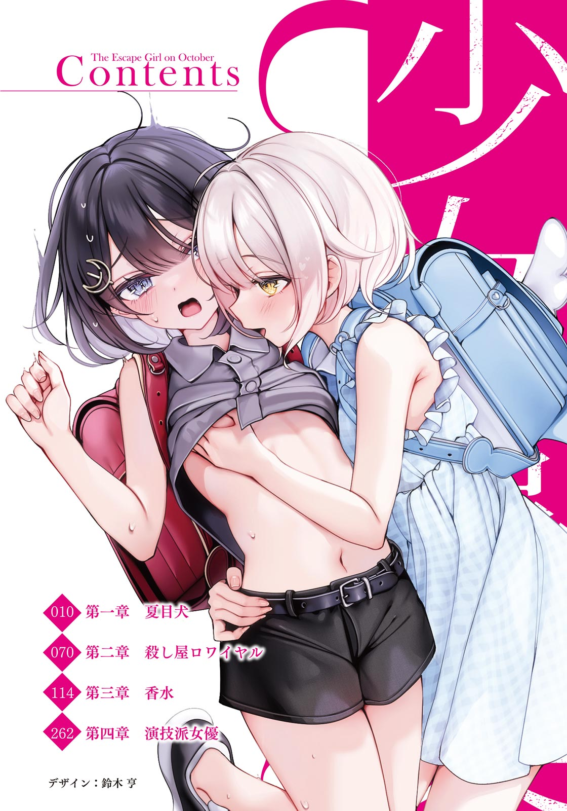
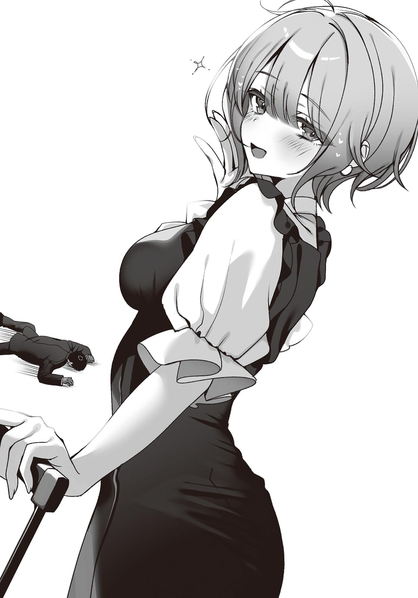

小学館ｅＢｏｏｋｓ
少女事案②
白スク水で愛犬を洗う風町鈴と飼い犬になってワンワン吠える夏目幸路
西 条陽
イラスト ゆんみ
小学館ｅＢｏｏｋｓ
少女事案②
白スク水で愛犬を洗う風町鈴と飼い犬になってワンワン吠える夏目幸路
西 条陽
イラスト ゆんみ
本電子書籍は縦書きでレイアウトされております。
一部の漢字が簡略体で表示される場合があるほか、ご覧になる機種により見え方が違う場合があります。


髪は肩まで、色素は薄め。高校生ながらモデルもしているわかりやすく美人な女の子。
ある日の放課後、忘れ物をして教室に戻ってみると、その白瀬さんが告白されていた。告白していたのは背の高い男子生徒で、上履きの色で三年生の先輩だとわかる。
「ごめんなさい。誰かと付き合うとかまだ考えられなくて……」
白瀬さんは線が細くて、
そんな彼女を前に、告白した男子生徒のほうが動揺したようだった。
「いや、そのこっちこそいきなりごめん。無理ならいいんだ、無理なら……」
時間とってくれてありがとう、とだけいうと、足早に教室をでていった。
「
白瀬さんが呼びかけてくる。俺が廊下にいることに気づいていたらしい。
「どう思った？」
「なにが？」
「私が告白されてるのをみて」
「告白されてる～って思った」
「じゃあさ」
白瀬さんが俺の正面に立つ。俺よりもちょっとだけ背が低い。とにかく顔がきれいで、シャツもブレザーも、スカートもぱりっとしていて、完璧な女子高生って感じがする。
「そんな告白いっぱいされてる女の子が、夏目くんのことでいつも頭がいっぱいだったら、どう？」
「え、ええ～!?」
「わかってるくせに」
たしかに俺と白瀬さんのあいだにはちょっとした関係がある。二か月前に起きた八月事件、それよりもさらに前、去年の冬のことだ。
誰にも話していない、あのクリスマスの夜。
白瀬さんが危ない状態になって、俺はそれを助けた。でも──。
「あれだけで、そうなるの？」
「さては信じてないな」
ちょっと座って、というので俺は椅子を引いてそこに座る。
すると
「ちょ、え、ちょ、えぇ～！」
正面から向かい合ってその状態だから、座ってそういうことをしている格好だ。スカートから伸びるすらりとした白い足が開かれている。
さっき三年生の男子にみせていた、いかにもか弱い女の子、といった雰囲気はない。
白瀬さんはいたずらっぽい顔をしながら、俺の首に腕を巻きつけてくる。
「ねえ、約束覚えてる？」
「約束？」
「私がハロウィンのときに白ネコになってあげるってやつ」
夏に起きた八月事件、あのとき
白ネコになってあげる。私のほうが気持ちいいよ、と。
「あの約束、生きてるの？」
「もちろんだよ。楽しみじゃない？」
「めちゃくちゃ楽しみだよ」
でも、俺の頭に浮かんだのは
これ、怒るだろうな～。
『私がいれば白ネコなんて必要ない！』『
月子の声がきこえてくるようだった。
そして俺の考えていることは白瀬さんに伝わったようだ。
「
「まあ」
月子にいわせると、俺はあくまで副作用が発生したときのお世話係だ。
「それで、夏目くんはずっと我慢してるんでしょ？」
「うん」
「恋人じゃないんだったら、そこは夏目くんだけの判断でいいんじゃない？」
「たしかに。いわれてみればそのとおりだ」
「ねえ、知ってる？」
白瀬さんが俺の耳元でささやく。
「女の子って、特別な相手には普段みせないような顔もみせるものなんだよ」
それはそのとおりだと思う。
白瀬さんが足を開いてまたがるところなんて、誰も想像できない。
「それにね、女の子は好きな人をさわってるだけで、気持ちよくなれるんだよ」
「え、そうなの!?」
「少なくとも私はね」
みててね、といって俺に強く抱きついてくる。制服の布地、その向こう側の
「……ん」
甘い声がでて、なんか、すごい！
「ねえ、夏目くんにも抱きしめてほしいんだけど」
「わ、わかりました！」
白瀬さんを抱きしめてみる。全身がなんだか幸せだ。
いいの？ これ、いいの？ なんか、あたってない？
でもなんか気持ちいいから……オッケー！
なんて思ってるうちに、白瀬さんの体がちょっと熱くなってくる。
「……あ……ん……」
体が震えて、けっこう強く押しつけられる。すごい。そして──。
「ん……ん…………んんっ…………くぅっ……！」
白瀬さんが大きく体を震わせる。
これって、あれだ。そういうことだ。
「
白瀬さんはそういって体を離す。心なしか、俺のズボンが湿っているように感じた。
清楚で線の細い女の子が俺の前でだけ乱れる。それって最高だ。
白瀬さんは恥ずかしそうに頰を赤らめながらいう。
「ねえ夏目くん、私の白ネコ、いる？」
「いりますっ！」
俺は健全な高校生男子だった。
それから俺たちは教室をでて、廊下を歩いて、下駄箱に向かった。一緒に帰る流れだ。グラウンドの脇を歩いていると、部活をしている生徒たちが白瀬さんに手をふる。白瀬さんは
女の子って、めちゃくちゃ切り替え早い。
さっきまであんなことしてたのに、そんなの一切顔にださない。
ソフトボール部のあの子も、全国模試一位のあの子も、
「これなんかどう？」
白瀬さんが涼しげな顔でスマホの画面をみせてくる。はたからみたら、かわいい動物の画像でもみせているようにみえるだろう。
でも、画面に映っているのは、コスチュームの通販ページだった。
着用モデルの女の人が、頭に白い猫耳、腰には同じく白いしっぽをつけている。そして体は下着だった。もちろんただの下着じゃない。レースで、メイドっぽいフリルがついてゴージャスで、肝心なところはほとんど紐みたいに細く、太ももまでの白いタイツにガーターベルト的なのもついて、完全に男の心をぶち抜くためだけにデザインされたものだった。
「こ、これを着てくれるんですか……」
「なんで敬語？」
白瀬さんは俺のリアクションに満足したように笑ったあとで、耳元に口を近づけて、ささやくようにいった。
「なんでもしてあげるし、なんでもしていいからね」
白瀬さんは顔を離し、またなにくわぬ顔で前をみながら歩きはじめる。
俺は想像する。俺の部屋でえっちな白ネコになっている白瀬さん。俺は抱きしめてもいいし、紐みたいな下着のなかに手を入れたっていい。白瀬さんは教室で抱きついてるだけで、あそこまでなったのだ。もし本当にそういうことをしたら、きっとすごいことになるにちがいない。
それに白瀬さんのほうからもいろいろしてくれるはずだ。いや、白瀬さんのことだからいたずらっぽい顔をしてじらしてくる可能性もある。でもサービス精神旺盛だから、俺が我慢できなくなったところで最後にはゴーサインをだしてくれて、俺はわんわんわんわんっ！ ってなって
「じゃあ、ハロウィン楽しみにしててね」
駅前で、手を振って改札に入っていく白瀬さん。やわらかそうなカーディガン、短いスカートがゆれる。俺は彼女の後ろ姿を見送りながら思う。
二週間後、十月三十一日のハロウィンまでは絶対に死ねない。
でも、俺はどうすればいいんだろう。そういうことをしたら、俺と白瀬さんは恋人だ。でもそうなると、
月子と俺は恋人ではないけど、
じゃあ先に月子に、白瀬さんといい感じになりそうなんだけどって、相談してみるのはどうだろうか。俺たちのふわっとした関係をはっきりさせるのだ。
でも、それはそれで月子が怒りそうだ。
『はぁ～！ なんで私にそういうこというわけ!? え？ 私が嫉妬するとか思ったの？ 自意識過剰！ マジでやめてくんない？ 私が
とかいいそう。
それで俺が、『じゃあ白瀬さんと付き合う』とかいったら、月子はこういうにちがいない。
『白瀬さんが夏目のこと好きなはずない！ 絶対、
結局、ストレートにはいわないものの、白瀬さんと俺が付き合うのは絶対ダメと主張するに決まってる。
月子のスタンスをすげ～ストレートにいってしまうと、イチャイチャさせてくれないし、やらせてくれないし、恋人にもなってくれないんだけど、俺が白瀬さんのほうにいこうとするのも許さない。
理不尽だ。
でも、やっぱ俺と月子のあいだには小さい頃からの
「俺、一生おあずけくらいそ～！」
なんて頭を抱えながら、線路沿いの道を歩いているときだった。
向かいからランドセルを背負った小学生の女の子が歩いてくる。そして俺の正面にきたところで足を止めた。
「ん？ どうかした？」
俺がきいても、女の子は自分の足下をみている。シャイなのかもしれない。
色白で体温の低そうな表情、フリフリのついたブラウスにリボンタイ、髪を頭の両サイドで編んでいて、全体的に少女趣味っぽい印象だ。事実、少女なわけだけど。
「えっと……」
女の子は口元に手をあて、消え入りそうな声でいう。
「お兄さん、顔になにかついてる」
「え？ ホント？」
俺は顔をさわる。
「そこじゃないよ」
女の子がいったところで、最近こういう流れあったな、と思う。そうだ。
案の定、この女の子もいう。
「私がとってあげるから、顔こっちに近づけて」
小学校で
ていうか俺、モテモテだ。完全にモテ期がきてる。
「え～いいの～？ じゃあ、とって～。ありがとね～」
俺はしらじらしくいいながら、姿勢を低くして顔を近づけていく。俺の顔は完全にキス待ちになっていたことだろう。
いや、たしかに小学生とキスとか犯罪的だけど、ほっぺだから、こっちからじゃなく向こうからだから、アメリカだときっと普通だから。それに俺は顔についたなにかをとってもらおうとしてるだけで、だまされて顔近づけてるだけだから！
なんて言い訳を頭のなかでいっぱいならべながら、ふと気づく。
少女が背負っていたランドセルを肩からおろし、両手で抱えている。天使の羽がついたデザインで、色もかわいらしい。でもやっぱりランドセルだからつくりがしっかりしていて、重くて硬そうだ。
少女がそのランドセルをおもむろに振りかぶる。
「ん？」
疑問に思った次の瞬間には、後頭部に衝撃が走っていた。
体から力が抜けて、膝から地面に崩れ落ちていくのがわかった。ひどい
次に気がついたとき、俺はとても小さな部屋にいた。
いや、部屋ともいえないくらいの狭さで、箱と表現したほうがいいかもしれない。
とても窮屈だ。
なにせ俺は足を抱えるようにしてその箱のなかに入っているのだ。そして体には毛布をかけられている。肌ざわりがよくて、高級そうな毛布だ。
顔をあげれば、四角形の箱の中、正面にアーチ状の穴があって、そこから光が
毛布をわきにどけて、ほふく前進して箱の外にでる。
太陽がまぶしい。最後の記憶が夕方だったから、ひと晩寝ていたようだ。
辺りを見回せば、大きな家がある。屋敷だ。俺がいるのはその家の庭だった。きれいな緑色の芝生が敷き詰められている。
立ちあがったところで、じゃらりと金属音がした。鎖の音だ。みればその鎖は俺がいた四角の箱から俺の首につながっている。
そこでついに、俺のいた箱が犬小屋だったことに気づく。
どうやら俺は、犬としてここに連れてこられたらしい。
◇
いや、無理があるだろ。
俺は昨日と同じ制服姿のまま、首輪をして犬小屋につながれている。かなりシュールだ。おそらくあのランドセルの女の子がやったにちがいない。
どういうつもりかはわからない。でも所詮は小学生、
庭は道路に面しているし、門は開きっぱなしだし、鎖も長い。革製の首輪だけは
屋敷の前の道路は通学路のようで、今も集団登校の小学生たちが歩いている。
俺は道のところまでいって、小学生たちに話しかける。
「ねえねえ、ちょっとハサミ持ってない？ この首輪を切ってほしいんだ。家庭科で使う裁縫用の大きなハサミだとありがたいんだけど」
警察に通報しようとは思わなかった。ランドセルの女の子にもなにかしらの事情があるのだろうし、特になにかされたわけでもない。
このまま解放されて、イタズラもほどほどにしなさい、と
それが大人な対応ってやつだ。
なんて余裕に思っていたが──。
「かわいい～!!」
小学生たちが俺をみて声をあげる。
ん？ かわいい？
「お手！ お手！」
低学年の女の子が俺に向かって手を差しだしてくる。おいおい、いくら俺が首輪をしてるからって、おふざけが──。
「ワン！」
……。
…………。
………………俺はひと鳴きして、手を差しだしていた。体が勝手に動いたのだ。
「いや、ちょっと待って、今のなし！」
俺はいうが、集団登校中のテンション高いガキンチョたちにいうことをきく様子はない。
「賢いね～！」
「頭なでる～！」
誰が頭なでさせるか、と思ったが、またもや体が勝手に動き、俺は膝を地面についてガキンチョたちに頭を差しだしていた。
「やめろ、お前ら、俺の話をきけ！」
しかし俺の言葉は届かず、かわるがわる頭をなでまわされる。少年少女たちは口々にいう。
「こいつ、あれだろ。シェパードってやつだろ」
「私、知ってるもん。この子はゴールデンレトリバーだよ」
「ちがう、人間だ！」
しかし誰も俺のいうことをきかない。しまいには、「ごろん！ ごろん！」といいだし、俺の体はそれに反応してお
「やめろ、バカ！ さわるな、くすぐったい！」
俺はいうが、ガキンチョどもは俺の腹をわしゃわしゃしつづける。
「なんかよく
「発情期なんじゃない？ うちのシロも毎年秋になると雌犬みかけるだけでわんわんうるさいもん」
「ちがうって、こちょこちょされて喜んでるんだよ」
こちょこちょで喜んでないし、断じて発情期でもない。しかし子供たちは俺のいっていることにまったく耳をかさず、腹をなでまくり、満足したところでやっと去っていく。放課後またくるね、なんていうがこなくてよろしい。
嵐が去ったあと、今度は銀縁メガネの頭のよさそうな女の子がひとりで歩いてくる。
「君、ちょっと、俺の声きこえる？」
しかしその銀縁メガネの女の子は俺のほうを少しみただけで、屋敷に向きなおり、声を張りあげた。
「
すると玄関から、テンション低めの女の子がでてくる。昨日、俺の頭にランドセルを
メガネの子の呼びかけと、表札の表記で、その子が
「おい、お前、俺になにをした！」
俺が話しかけると、風町は一瞬だけ俺をみて、すぐにしれっとした顔で銀縁メガネの女の子のほうに歩いていく。
「おはよう、
どうやら銀縁メガネの子は綾子ちゃんというらしい。しかしそれよりも──。
「おい、きこえてるだろ、おい」
風町に呼びかける。
「俺が犬にみえるようにしたろ。知ってんだぞ、そういう不思議なことできるやつがいるって」
しかし風町は涼しい顔をしたままだ。
「やけに今日は
メガネの綾子ちゃんが俺の頭に手を置いていう。
「ていうかこの子、逃げだしたんじゃなかったの？」
「うん。でも昨日、帰ってきた」
「へえ～偉いね、ポチ太郎」
え？ なにそれ？ それが俺の名前？ そんで、その犬の代わりを俺がやってるってこと？
「それより
「うん。いかない」
「そっか。まあ、あれだよ。イヤなこと無理にする必要ないってＳＮＳでもみんないってるし」
綾子ちゃんは風町を励ますようにいう。
「鈴ちゃんがいきたくなったら、いけばいいと思うよ」
「うん」
「じゃあね」
そういうと、綾子ちゃんは小走りで去っていった。
「綾子ちゃん、めっちゃいい子じゃん」
次に俺は風町をみていう。
「そんでお前、さては学校いってないな～。いかなきゃダメなんだぞ～」
「ポチ太郎のくせにうるさい」
ぴしゃりといわれた瞬間、俺は
「これ！ この俺が犬になっちゃうやつ！ お前がやってるんだろ。今すぐやめろ！」
風町は無表情に俺をみて、少し考えるような間を置いてからいう。
「
「俺のこと知ってんの？」
「ＳＮＳでみた。夏目は八月事件の真犯人」
「あれデマだから！」
この夏、俺は小学生連続誘拐殺人事件である八月事件を解決に導いた。当初はお手柄高校生だったわけだけど、しばらくして風向きが変わった。
俺が
雪見を猫にしていたのは死の予知を回避するためだったのだが、小学生女子にゴシックロリータの服装をさせ、猫耳としっぽをつけ、首輪にリードをつないでいたのは事実だし、世間的にはかなりインパクトのある
もちろん、善意の高校生に新聞社や週刊誌は反応したりしない。俺は警察からおとがめなしだし、ちゃんと犯人は捕まって事件は終わっている。
でも、世の中の事件を面白おかしく扱うＳＮＳ上にいるインフルエンサーや、ブロガーたちはちがった。
『お手柄高校生は重度のロリコン!?』
『実は事件の黒幕！』
そんなインプレッションを稼ぐためのセンセーショナルな見出しで俺のことをとりあげた。
さすがに画像はぼかしてあるし、実際のところ真犯人ではないので、個人情報を載せられたりすることはない。
それでも誰のことか顔を知ってるやつならわかってしまうし、ネット上の特定班みたいな人たちに俺のＳＮＳアカウントを特定されて、真に受けた人たちからのリプがいっぱいきたりもしている。
簡単にいうと、人の目がわずらわしく、めんどくさい状況だった。
「ポチ太郎になってれば、
「私、ワンコはいっぱいかわいがる。ちゃんとお世話するし、エサもあげる」
俺は少し考えてから、風町に返事をした。
「ワン！」
こうして風町に飼われる俺の犬生活がはじまったのだった。
◇
風町
十歳の小学五年生。
通っている小学校は
外見は色素薄い系で、ちょっと
犬小屋からみる限り、家族はおじいちゃん一人だけで、大きな屋敷で二人暮らしをしている。
そのおじいちゃんといえば、いつも書斎でぼーっとしていて、風町にも特に関心を払っていなかった。
暮らしぶりは豊かで、お金に不自由している様子もない。じゃあ風町が自由気ままに楽しそうかといえばそういう感じでもなくて、風町は
風町は俺の世話をよくしてくれた。
「散歩いくよ」
俺の一日は朝の散歩からはじまる。その日も朝の九時ぴったりに
風町はあの天使の羽のついたランドセルを背負っている。学校にいくわけではないのだが、お気に入りなのか、外にいくときはいつも背負っている。
「ワン、ワン！」
俺は散歩にいけることが
「よしよし」
風町に頭をなでられる。俺が大人しくなったところで、風町は犬小屋につながれた鎖を外し、リードにつけかえる。そしてふたりで散歩に出発する。
「なあ風町」
俺は歩きながらいう。
「ポチ太郎って飼ってた犬だろ？」
「うん」
「そいつ、どんな犬だったの？」
「雄のゴールデンレトリバー。いつも私を守ってくれた」
「そうなんだ」
首輪をつけられた俺は、他人の目には犬として映る。そして、言葉を話せばワンワンと
「風町も、俺がポチ太郎にみえるのか？」
「うん。声はきこえるけど」
風町にとって俺は会話のできるポチ太郎になっているらしい。
「いくよ、ポチ太郎」
「ああ。俺は外でトイレしないけどな」
風町に連れられ、道を歩く。
他人の目にはゴールデンレトリバーと、それを散歩させる小学生にみえているのだろう。
俺は忠犬よろしく、風町の歩くペースにあわせた。風町は歩くのが遅い。オシャレさんだから、犬の散歩のときもスニーカーではなく、リボンのついたかわいらしいエナメルの靴を履いているのだ。
住宅街を歩いていると、向かいから柴犬がおじさんに連れられてやってくる。その柴犬は俺をみるなり、「ウゥゥッ！」と
俺も思わず吠えていた。
「ワンワンワンワンッ！」
どうやら
「こらっ」
風町が俺の頭をぺしっとやる。
「
「クウン」
風町は柴犬を連れていたおじさんに、「ごめんなさい」と頭を下げた。風町はマナーのいい飼い主だった。
そんな感じで住宅街を抜け、たどり着いたのは河川敷だった。秋晴れの青空の下、
「今日はボール遊びする」
風町がいって、ゴムボールをポケットからとりだす。
「おい、やめろ、そんな──」
風町がボールを投げた瞬間、俺はボールを追いかけてダッシュしていた。
犬の習性なのか、体が勝手に動くのだ。コロコロと転がるボール。俺はそれに追いつき、口でくわえて戻ってくる。
「へっ、へっ、へっ、へっ」
「よしよし、いい子いい子」
風町に体をごしごしされ、頭をなでられて喜んでしまう俺。相手は小学生だぞ。
「じゃあ、次はあっちに投げるから」
「草むらじゃないか！」
「とっておいで」
俺は体中にひっつき虫をつけて戻ってくることになった。
ひととおり遊んだあと、風町は俺を連れて川に架かっている鉄橋の下に移動した。
「お弁当食べる」
ランドセルからピンクのランチボックスをとりだす風町。ブルーのランチボックスもあって、それが俺の分だった。白ご飯と冷凍食品のおかずが不器用な感じで詰められている。
「風町ってえらいんだな。ちゃんと自分で弁当つくって」
「うん。お父さんとお母さん、いないから」
幼い頃にどちらも病死してしまったらしい。
「大変だったな」
「わからない。本当に小さい頃で、記憶にないから」
風町はローテンションな女の子だった。
俺は風町のつくってくれたお弁当を、箸を使って食べた。しかし風町からは、犬が口を弁当箱に突っこんで食べているようにみえていたという。
お弁当を食べたあとは、風町と一緒に郊外にある
元はボウリング場だったのだが、数年前に廃業して、ずっとそのままになっている。
裏口の扉が開いていて、そこからなかに入る。ちゃんと屋根があるから、なかはきれいなままだった。薄暗いが、窓から日光も
風町はピンをならべ、レーンにボウリングの球を置いた。やはり俺は反射的にボウリングの球を頭でこづいて転がして遊んでしまう。
俺がそうしているあいだ、風町はベンチに座ってリコーダーを吹いていた。
小学校にいっていないから、こうやって時間をつぶしているのかもしれない。
風町はやがて眠そうな顔になってリコーダーを置く。
俺もボウリングの球遊びに飽きたから、暖かそうな
起きたときには日が傾いていた。そこから向かったのは、会員制の大型スーパーだった。
そのまま店に入らず、風町は立体駐車場で車が行き来するのをぼーっと眺めていた。
しばらくしたところで、店内に入る。
風町は自分の体よりも大きなカートに、お総菜を次々に入れていった。お金に問題はなかった。風町は金色のカードを持っていたからだ。おそらく、おじいちゃんのものだろう。
レジで店員のおばさんが
俺が風町を援護するようにワンワン鳴くと、レジのおばさんは、『こんなに賢そうなワンちゃんが一緒なら大丈夫ね』という顔をしていた。俺は賢いのだ。
屋敷に戻ると、広すぎるリビングで一緒に買ってきたものを食べた。
食べ終わったあと、風町に連れてこられたのは洗面所だった。
「ポチ太郎、シャンプー」
たしかに今日はボール遊びもして泥んこだ。シャワーを浴びられるのはありがたい。
しかし──。
「……風町、いつまでいるんだ？」
俺が服を脱ごうとしても風町は洗面所からでていこうとしないのだ。
「ポチ太郎を洗うのは私の仕事」
「ええ～！」
「平気、ポチ太郎にしかみえない」
風町はゆるふわなルックスに反して、性格はがんこっぽい。仕方がないので俺は服を脱いで全裸になった。なんだろう、この辱めは。
そしてお風呂場にいこうとしたところで──。
「ちょっと待て、それはまずい！」
俺は
「だって、ポチ太郎を洗ったら濡れる」
「いや、でもまずいって。俺、純度一〇〇パーセントのポチ太郎じゃないしさ。ジェネリックだし。なんか着ながら洗ってよ」
「……わかった」
洗面所からでていく風町。戻ってきたときの格好は──。
濡れてもいいように、ということだろう。
白のスクール水着だった。
胸には『かざまち』と書かれたゼッケンがついている。
「なんか別の文脈発生しそうなんですけど！」
「このポチ太郎うるさい」
風町に怒られ、俺は仕方なくお風呂場のなかに入っていく。大人しく犬として洗われるのを待っていると、風町が頭からシャワーをかけてくる。
「頭はシャンプー、顔は洗顔料を使ってほしいんだけど」
と主張するが、俺は犬なので全身ボディソープで洗われることになった。
「ノミとかついたら大変だから」
愛犬家の風町はスク水姿のまま俺の全身をくまなく洗った。俺の体のほうが大きいから、白スク水の風町に抱きつかれながら洗われる感じになったが、断じてロリコンではない俺は特になにも感じなかった。
途中、俺は体をぶるぶると震わせて水を周囲にとばした。
「おとなしくしなさい」
小学生女子である風町におしりをぺしんと
お風呂からでたあとも、俺は完全に犬だった。風町がバスタオルで体を拭き、ドライヤーで毛を乾かし、歯を磨いた。俺は口を開けているだけだった。
そんな感じで寝る支度を終えたところで、俺は庭の犬小屋へと戻される。
犬小屋は狭いといえば狭いが、普通の家にあるような犬小屋よりは大きかった。オリジナルのポチ太郎が大型犬で、風町が犬を大切にするタイプということもあり、それなりの広さのある犬小屋が用意されていたのだろう。
シンプルにいうと、風町家での犬生活はなかなか快適だった。
俺はふわふわの毛布にくるまりながら、大きくあくびをして、とりあえず寝ようとする。今日はボールでいっぱい遊んでつかれてしまった。
そのとき、芝生を踏む足音が近づいてきた。俺は番犬的な本能で警戒するが、やってきたのはパジャマ姿の風町だった。手には枕を持っている。
「一緒に寝る」
そういって、狭い犬小屋に入ってくると、体を小さくして横になってしまった。オリジナルのポチ太郎ともこうやって一緒に寝ることがあったのだろう。
「おやすみ、ポチ太郎」
俺は毛布を風町にかけ、寄り添ったまま、犬小屋から夜空に浮かぶ月をしばらく眺めた。
「ポチ太郎……」
風町が寝言をいう。
「なんでしんじゃったの……」
目の端には涙の粒があった。
「ごめんよ」
俺はそういって、風町の頭をなでる。
いたいけな少女の寝顔をみながら、いつまでこの犬生活をしようかと考える。
風町がかいがいしく世話をしてくれるから居心地はわるくない。でも、さすがに一生このままというわけにもいかない。
風町はいい子だから、俺が本気で犬をやめたいといえば、首輪を外してくれるだろう。
でも、もう少しこのまま犬生活をつづけようと思った。
風町が俺をいきなり
俺はなんとなく、風町の力になってあげたい気持ちになっていた。
彼女の抱える問題。
例えば、学校にいってないこと。
例えば、まったく笑わないこと。
そして──。
俺は風町の能力のおかげか、嗅覚も犬のように鋭くなっている。風町はフローラルな香り、銀縁メガネの
今日の散歩でもその嗅覚はよく働いた。
河川敷、ボウリング場の
風町はきっと、ただ時間を潰すためにこの三つの場所をまわったわけじゃない。なにか意図があってまわっている。
なぜなら──。
三つの場所のいずれからも、とても濃い、人間の血の臭いがしていたからだ。
◇
一日に四回、決まった時間にスーツの男が屋敷を訪ねてくる。まず風町の祖父がでてきて対応し、そのあとで風町が顔をだす。男は風町の顔をみると、ひとことふたこと言葉をかわして、車に乗って去っていく。
訪問販売とか、そういう感じじゃない。
きっと警察だ。
スーツを着てサラリーマンみたいな格好をしているのに体格がいいところや、目立たないことを一番の目的としているかのように必要以上に無個性なデザインの車からそう思った。
なにより、深夜の決まった時間にパトカーがやってきて少しのあいだ屋敷の前に停車し、それからまた走り去っていくのだ。
警察が風町を守っているのは明らかだった。
そしてなぜ俺がパトカーの通過する時間までしっかりわかっているかというと、シンプルにヒマだからだ。
犬小屋につながれていると、そこからみえる風景を眺めているしかない。
変わらない屋敷に、変わらない通り。
あまりに退屈だから、宅配便のお兄さんが荷物を持ってあらわれるだけでテンションがあがってしまう。小屋からでて、「おつかれさまです」というのだが、お兄さんは、「お前はいつも元気がいいなあ」と頭をなでてくれるのだった。お兄さんには俺がしっぽをふってワンワンいっている犬にみえているのだ。
警察や宅配の業者以外にも、訪ねてくる人はいた。
銀縁メガネの
賢そうな雰囲気の小学五年生。風町と同じ天使の羽のついたランドセルを背負っている。
「
綾子ちゃんは毎朝やってきた。風町を迎えにきているのだ。でも風町はいつもランドセルを背負っているくせに絶対に学校にいかないのだった。
「いつから学校いってないんだ？」
俺は綾子ちゃんの背を見送りながら、風町にきく。
「最近になってから」
それまではちゃんと学校にいっていたらしい。
「無理はしなくていいけど、いけるんなら学校いったほうがいいぞ」
「ポチ太郎はそんなこといわない」
「オリジナルのポチ太郎は言葉話さないからな」
もう一人、
足が速そうな男の子だ。実際サッカーをやっているらしく、ボールやスパイクの入ったシューズケースを持っていることが多い。
俊太くんは毎日、放課後に風町を訪ねてくる。宿題のプリントを持ってきたり、先生のいっていたことを伝えにくるのだ。
「はい、これ」
俊太くんはぶっきらぼうに、でもちょっと頰を赤くしながらプリントを渡す。彼はきっと風町のことが好きにちがいない。なぜなら今どきプリントを持ってこなくても、メールで済ますことができるからだ。小学生だってタブレットを配られている。きっと先生に自分が届けると無理をいってきているのだ。
風町はそんな俊太くんの気持ちを知ってか知らずか、いつも不愛想にプリントを受けとる。
「学校こいよ」
「…………」
「ずっとおじいさんと二人だけだと寂しいだろ」
「ポチ太郎がいるもん」
風町はそういって俺を抱きしめる。
「犬じゃん……」
俊太くんは悔しそうな顔をしていた。がんばれ少年って感じだ。
風町は犬にしか心を開かない少女なのかもしれない。
もちろん、俺は犬ではない。いくら俺が犬にみえるからといっても、風町もそこはわかっているようで、必要なところは人間的な扱いをしてくれる。
食事は人間のものだし、俺があまりに退屈していると屋敷のなかに入れてくれる。学校にいってない風町も基本的にヒマをしているので、一緒に風町の部屋で遊ぶのだ。
風町の部屋はいかにも女の子という感じで、枕元にはかわいらしいキャラクターのぬいぐるみがたくさんあり、服の趣味と同じく、カーテンにもフリルがついていた。
そんな部屋でパソコンを使って一緒に動画をみるのが日課だった。
「俺のおすすめの動画はうつぼを釣ってその場で揚げて──」
マウスをさわろうとすると、ぺしっとおしりを
「ポチ太郎がマウスを動かしてたら変でしょ」
「かわいいじゃねえかよ～！」
俺に動画の決定権はなかった。
風町には好きな歌手がいて、その女の子のミュージックビデオや、おしゃべりしている配信を好んでみる。その歌手は顔をだしておらず、アイコンとしてイラストを使っていた。そのイラストの女の子の服装は、
ただ風町とその歌手のデザインでは決定的な差があった。
風町が自分の髪を少し不満そうにみる。
「メッシュ入れたいの？」
「うん」
風町はピンクのメッシュを入れたいらしい。
動画をみる以外だと、風町はよくゲームをした。ただ、あんまり
「こいつ絶対陰キャ」
「くちわる～」
俺にも人間としての生活があるわけだが、そこは問題がなかった。
高校にはしばらく田舎の親戚の家にいると連絡をいれた。八月事件のときに
連絡はメールでした。
俺がなにかいっても風町以外の人間には全て、『ワンワン』にきこえてしまう。でもスマホで文字を打つことはできた。
「肉球でスマホをタッチしてる……」
犬小屋でメールを打つ俺をみて、風町はなんともいえない顔をしていた。
他人からみると俺はパーフェクトに犬だった。風町に散歩してもらっていると、近所のおばさんが犬用のビーフジャーキーを差しだしてくる。中身は人間なので、俺はイヤイヤと首をふった。
そんな感じで犬生活をつづけていた、ある日のことだ。
夕方の散歩の途中、川沿いの遊歩道で風町が足を止めた。
「つかれた……」
「エナメルの靴でお散歩するから」
「だって、かわいいんだもん」
俺は風町をおんぶして歩いた。
「あの女の子、犬に乗ってる！ かわい～！」
学校帰りの女子高生たちが俺たちをみてそんな声をあげた。そうみえるらしい。
「オリジナルのポチ太郎には乗れた？」
「ううん」
「俺、超優秀じゃん」
「アイス食べたい」
そういうので、俺は
「俺も食べる！」
「ポチ太郎はアイス食べなかったよ」
「このポチ太郎は食べるの！」
風町が店内でアイスクリームを選ぶ。そのあいだ、俺はリードをテラス席のテーブルにつながれて大人しく待つ。風町はカラフルなものが好きだから、きっとコーンに色とりどりのアイスをのせて戻ってくるだろう。
そんなことを考えていると、学校帰りの女子高生がふたり俺の前で足を止めた。高校のクラスメートの女の子だった。
「ワンコだ～」
「かわいい～！」
頭をなでたり、顎の下をさわってくる。俺は思った。今の俺なら、このクラスメートたちにキスしたりしても大丈夫なんじゃないだろうか。きっと犬が顔を
「なんかこの犬、
「ほんとだ～。ちょっとすっとぼけてる感じがね」
「私、夏目くんのこと気になってるんだ～」
「え～！」
俺、います！ ここにいます！
「でも夏目くんには
「そうだけどね。でも夏目くん、意外と普通の女の子が好きなんじゃないかな」
俺のことが気になるといった女の子は、ふんわりとした雰囲気の子だ。クラスの男子たちのなかには、けっこうな数のファンがいる。
「私が彼女だったら京野さんより、もっとやさしくするのにな～」
俺、バチバチの美人じゃなくても大丈夫です！ エサくれる飼い主なら喜びます！
ワンワンワンワンワン！
「でもやっぱ夏目くんは京野さんだろうな。冷たくされてもなんか喜んでるし」
喜んでません！
「結局美人が好きなんだよ。体育の着替えのとき、みた？」
「みた。スタイルいいよね～」
「男の子って、やっぱああいう女の子が好きなんだろうね～」
「クールだし」
結局、女の子ふたりは、月子がいる限り
そして彼女らの後ろ姿を見送りながら、もしかしたら、月子もここを通りかかるんじゃないかと思った。このアーケードの商店街は学校帰りに立ち寄りやすい。ファストフード店もあるし、ゲームセンターだってある。
案の定、少し待っていると、制服姿の月子が歩いてきた。となりには
「ん～？」
月子は俺をみつけると、顔を近づけてきた。
「夏目？」
首をかしげながら、そんなことをいう。さすが月子、勘が鋭い。
「たしかに夏目さんに似てますね～。舌だして、へっへっ、ってして、なにも考えてなさそうなところとか」
おい雪見、もっと俺に愛を持て。
「よ～しよしよし」
月子はしゃがみこむと、俺を抱きしめて背中をなでてくる。完全に犬と思っているようだ。
顔が月子の制服の胸に埋まる。いい匂いがしてめちゃめちゃ幸せだ。月子は少しきつそうな目つきだけど、髪はきれいだし顔は整ってるし、制服の着こなしも完璧だし、それに着やせしてるけど、でるとこちゃんとでてる。
つまり、今の状態は最高だった。
これこれ、と思う。犬になってよかった。
「ていうか夏目さん、ホントに親戚の家にいって雲隠れしちゃったんですね」
雪見がいう。
「別にＳＮＳでなに書かれても気にしなきゃいいのに」
「カッコつけなんだよ。ロリコンなのはホントなのにね」
ちがうだろ。そこは月子がよく知ってるところだろ。俺は抗議するが言葉は全てワンワンワンになって、月子によしよしされるだけになってしまう。
「いいアイディアがあるんです」
雪見がいう。俺がＳＮＳでロリコンと呼ばれていることをどうにかするための解決策があるらしい。それは──。
「私と夏目さんが結婚すればいいんです！」
「ええ～!!」
でも
「だって、年の差があっても、結婚してたり、結婚することが前提だったらセーフになる空気あるじゃないですか」
たしかに、俺は法律全然くわしくないけど、そんな雰囲気ある。大人の男が女子高生となんかしてたら基本逮捕だけど、親の承諾得て真剣交際だったら許される空気ある。実際、女の子は十八歳から結婚できるはずだし。
で、でもと月子があたふたしながらいう。
「雪見ちゃん、まだ十歳だよね!?」
「はい。ですから婚約するんです。将来のお嫁さんです。そうすれば私と
「ゆ、雪見ちゃんは夏目と結婚しちゃっていいの!?」
「……かまいません」
雪見は少し顔を赤くしながらこたえる。
「……私、夏目さんのことが好き……なんで」
「え、えぇ～!!」
月子の目がグルグルしはじめる。
「だ、ダメだよ！ 夏目は変態だよ？ ロリコンだよ!? 絶対変なことされる！」
「それも……やぶさかではありません……」
「や、やぶさか！」
「私だって恥ずかしいことはしたくないですが、好きな人が求めてくるなら、がんばってお応えしたいです。小学生のお嫁さんとして通い妻になり、夏目さんのお世話をしながら、夏目さんに、この小さな体に欲望をぶつけられて、あんなことやこんなことをされても──」
「ダメダメダメダメ！」
月子は声を大きくする。
「雪見ちゃんはまだ小学生だからちゃんと判断ができてないんだよ。もう少し大人になったら、夏目が小さい女の子をだましてるだけのわるいやつってわかるから。うん、そう、判断がまだついてない。そういう理由があるから、法律で小さい子は守られてるし、近づくわるい大人を罰するようにしてる。私は法律の趣旨を完全に理解している」
月子、いきなりＩＱあげてくるじゃん。
雪見はしれっとした顔で月子をみながらいう。
「そんなこといって、月子さんが夏目さんを誰にも渡したくないだけなんじゃないですか？」
「そ、そんなわけない！」
「だったら私と
「それは……」
「
「う、うぅ……」
「生半可な相手ならそりゃあ月子さんの勝ちでしょうけどね。でも
「そうだけど……」
月子は一瞬、弱気な感じになるが、すぐにむすっとした顔になる。
「ううん、やっぱ夏目がわるい！ 夏目がもっと私のこと好き好きってなって、お母さん以外の女の子のアドレス消して、白瀬さんなんか眼中になくなって、泣きながら頼んできたら手くらいつなぐ！」
え？ そこまでやって手つなぐだけ？
「夏目が全部わるい！」
そういって、俺の頰を両手で引っ張る。
「ワンちゃんもそう思うよね？」
思いません！
「ほら、この子もそうだっていってる！」
ワンワン
「お前は賢いワンコだね～」
月子がぎゅぅ～っと抱きしめてくれる。それを人間のときにやってくれって感じだ。俺はこういうことがしたい。そう、こういうことがしたいんだ～！ って気持ちになって、やたらめったら胸に顔を押しつける。
俺は犬だ。アホな犬だ。
そう思って、大型犬あるあるの感じで月子を押し倒す。
「あ、ワンちゃん、こら」
そして月子の制服のスカートのなかに頭を突っこみ、白くてなめらかな内ももやらなんやらを
「ダメっ、そこっ……あっ……」
月子が俺の頭を押し返そうとするが、俺はひるまない。すんすん匂いを
「ワンちゃん、ダメっ……夏目以外さわっちゃダメなの……夏目だけ……」
そういうなら普段からエサをくれよ～！
という気持ちでさらにガンガンいこうとしたときだった。ぐいっと引っ張られて、後ろに引き戻される。みれば、
「こらポチ太郎、よそ様に迷惑かけちゃダメでしょ」
ぺしっ、とおしりを
「えっちなワンちゃんだね」
そういって
「ごめんなさい」
飼い主として謝る
「いいのいいの。私もなんかこのワンちゃんが知り合いに似てたからさ」
月子はもう一度、俺の顔をのぞきこんでくる。
「やっぱ
そして立ちあがり、静かな表情で黙りこむ。
「どうしたんですか？」
「やっぱ、夏目がいないと寂しい」
散歩して屋敷に帰ったあと、いつものように晩御飯を食べ、風町に体を洗ってもらった。そして寝る準備をしたところで、犬小屋に戻る。
しばらく星を眺めていると、風町が枕を持ってやってきた。最近、風町はほぼ毎日犬小屋で俺と一緒に寝るようになっていた。
「ポチ太郎、アイスクリームのお店で会った女の人とは知り合い？」
「まあな」
俺は風町を腕枕しながらいう。
「他の女の子にしっぽを振ると怒るくせに、エサをくれない飼い主なんだ」
「私はいっぱいあげる」
「風町はいい飼い主だからな」
たしかに月子は俺にエサをくれない。でも俺の脳裏には最後に月子がみせた横顔がずっと浮かんでいた。
『夏目がいないと寂しい』
そういったときの少し哀しそうな顔が頭から離れない。
月子あんな顔もするんだ、とちょっと衝撃だった。当然だけれど、俺がいないときの月子の様子を俺は知らない。でも今回、犬になってはじめてそれをみた。
あのあと、月子は雪見と一緒にアイスクリーム店に入っていった。俺は外の席で風町と一緒にアイスを食べていたわけだが、しばらくすると月子が右手にストロベリーのアイス、左手にチョコミントのアイスを持ってでてきた。
ひとつは
「ふたつ食べるわけじゃないですよね」
雪見は複雑な表情で、
「チョコミントって
「あはは」
月子はごまかすように笑ってから、しゅんとしていった。
「なんか、いつものくせでさ。夏目がいると思って買っちゃった……」
「大丈夫ですよ。ほとぼりが冷めたらすぐ戻ってきますよ」
雪見は慰めるようにいうのだった。
アイスを食べながら帰っていくふたりの背中をみながら、ふたりが一緒にいるのは遊ぶためではないとわかった。
月子は小学生のとき、学校帰りに誘拐されて、そのトラウマからいまだにひとりで家まで帰ることができない。
これまでは俺が一緒だったけれど、その俺がいないから、今は代わりに雪見が一緒に帰っている。
たしかに月子はあんまりエサをくれない。
でも、俺がいないと寂しい顔をする。無意識に俺の好物のチョコミントを買ってくれる。
俺は月子のとなりに戻らなくちゃいけない。
もちろん、だからといって風町を今すぐ放りだすわけにもいかない。
風町は今、犬小屋のなか、俺のとなりで眠ろうとして目を閉じている。
この小さな女の子がなにかしら難しい状況にいるのは明らかだ。
血の匂いのする散歩コース、定期的にやってくる警察官。
だから、俺はいう。
「なあ風町、そろそろ話してくれないか？」
声をかけると、ゆっくり風町が目をあける。
「俺をポチ太郎に選んだのは、俺が八月事件を解決した高校生だからだろ？」
俺に期待したのだ。この状況をなんとかしてくれると。
「犬小屋で寝てるのも、身の危険を感じてるからだろ」
風町の能力は、首輪をつけて俺をポチ太郎にするだけじゃない。もっと汎用的だ。夕方、散歩から帰ったあと、風町は自分の部屋にいくと、おろしたランドセルをベッドの上の抱き枕に背負わせた。
最初はなにをしているのかわからなかった。でも次の瞬間、理解した。
ランドセルを背負わせた抱き枕が、
風町の能力は、人間の認識をずらす能力なのだ。
おそらく、首輪やランドセルといった象徴的なものが能力発動の鍵になっている。
すご～、と思ったと同時に胸が痛んだ。風町は安心して眠るために、ベッドに
「一体なにに狙われてるんだ？」
俺がきくと、風町は体を小さくしながらこたえる。
「私、サイバンのショウニンになってる」
裁判の証人。
「つまり、風町はなにかを目撃した」
「うん。病院に入院していたとき、わるい人がわるいことをいってるのをみた。私がみたことをいえば、その人は刑務所にいく」
風町は大事な証人なのだ。だから警察が守っている。
おそらく重大事件なのだろう。事件にやくざが絡んでいたりすると、証人が裁判で証言しないよう脅したり、場合によっては殺すということだってありえる。
「どんな裁判なんだ？」
俺が風町にきいたところで、ちょうどパトカーの夜の巡回がやってくる。ただ、今日はいつもとちがっていた。屋敷の前に停車すると、車から制服の婦警さんがおりてきたのだ。
一体どうしたんだろう？ って俺も風町も顔を見合わせて首をかしげるが、とりあえず会話をつづける。
「ヤマネシンヤクジケン」
風町が裁判になっている事件の名前を口にする。
「ずっとニュースでやってるやつじゃん……」
そういっているあいだに、車からおりてきた婦警さんが屋敷の前の庭で肩になにか担ぎながら屋敷に向かってなにやら片膝をつく。
夜闇ではっきりとはみえないが、婦警さんが肩に担いでいるのはＲＰＧ、いわゆるロケットランチャーにみえた。
いずれにせよなにが起きるかみているしかないから、とりあえず風町と話しつづける。
「山根新薬事件の裁判で風町が証言するってこと？」
「うん」
二年くらい前だったか、大学発のベンチャー製薬会社がアルツハイマーの特効薬を開発したと発表した。開発者は俺たちが住む
アルツハイマーの特効薬は世界が待ち望んでいる。
新薬が発表されたとき、世間は話題騒然となった。
夜見坂市にある大学と、大学発の製薬会社のお手柄であることから、夜見坂市の市長は『夜見坂の新薬が世界を救う』と、会見で胸を張った。
そのイメージが世間に旋風を巻き起こし、市長の所属する地域政党、
特効薬だからワクチンではないんだけど、夜見坂ワクチンという表現もひとり歩きした。
製薬会社は株を上場していて、百円だった株価は薬の発表以降、一万円まで上昇した。十万円投資していたら、一千万円になる計算だ。百万円投資していたら一億円、一千万円なら十億円だ。
とにかく夜見坂ワクチンは大きな関心事だった。
世直し改革党の旗振りで、補助金数百億円が注ぎこまれた。
でも、新薬が世にでることはなかった。
アルツハイマーの特効薬となればすぐにでもみんなが欲しい。だから治験など普通であれば何年もかかるプロセスが世論の声もあり省略され、最後の関門である薬事・食品衛生審議会による審査まですごいスピードで通過した。そのあいだどんどん株価はあがり、じゃんじゃん補助金が注ぎこまれた。
でもその最後の第三者による中立な審査で、山根教授による新薬はこう結論づけられた。
一切の効果なし。
新薬を投与したグループと、新薬と称して栄養剤を投与したグループの改善効果に差異がなかったのだ。つまり、プラシーボ効果以上の効力はないということ。
株価は暴落し、全てはなかったことになった。
アルツハイマーの特効薬という狂騒はそこで終わった。
新薬が承認されないことはよくあるあし、チャレンジは良かったみたいな総括を世直し改革党の党首がして、マスコミもそういう論調で報道し、なんとなく収束に向かっていった。
でもそこでひとつの疑惑が持ちあがった。
新薬なんて最初からなかったんじゃないのか？ そしてそれを、企業も政治家もわかっていたんじゃないのか？
新薬を巡って巨額のお金が動いた。補助金はどこかへと流れたし、株についても薬がないことを最初からわかっていれば、最後の審査の前に売り抜けることができる。
お金の動きだけじゃない。
製薬会社、政治家、
産、官、学が連携して国民を
それを最初に指摘したのは
この一連の流れは、多くの人に疑問をもたらした。
やっぱり
多額の税金が補助金として使われたのだから、せめて検証されるべきだ。
世論の声を受け、警察と検察が動きはじめたときには、製薬会社にも山根教授の手元にも開発時の資料は残っていなかった。それはかなりグレーな印象を与え、逆に刑事事件として立件されるきっかけとなった。
逮捕されたのは山根教授、製薬会社社長、そして夜見坂市長。
罪名には詐欺、インサイダー、政治資金規制とか、そういう難しそうな言葉がならんでいた。
争点は、山根新薬なんて存在せず、最初からつくる気なんてなかったんじゃないかという部分だ。でも、それだけじゃない。
世間的にはもう、山根新薬が最初からなかったことはわかっている。
裁判において世間が注目しているのは、この事件に誰が関わっていたかという部分だ。新薬というこれだけの大騒動を、訴追されている三人だけで起こせるはずがない。
疑惑の事故死を遂げたジャーナリストの進藤はそれをつかみ、それを進藤レポートに書きこんでいたといわれている。
検察のトップはその関係者を裁判のなかで明らかにしていくと報道陣に語っていた。
大きなお金が動いているから、暴力団も絡んでいるかもしれない。そうなると、ジャーナリストを事故にみせかけて殺したり、目撃者を消していくみたいなことはありそうに思えた。
「
犬小屋のなかで、俺は風町にきく。パトカーからでてきた婦警さんは肩にロケットランチャーを担ぎ、屋敷に向かって構えている。
「私、夜見坂総合病院に入院してた」
「え、大丈夫なの？」
「ぜんそくだから。今は平気」
「夜、病室を抜けだして遊んでたの」
「やんちゃだな～」
「扉が少し開いてる部屋があって、こっそりなかをみたら大人の男の人たちが話をしてた」
ニュースでみていたから、そこにいるのが山根教授だとすぐにわかったという。
「あの人たち、いってた。効果のない薬で芝居をするのも大変だ、って」
やはり新薬なんて最初からなかったのだ。
「
うん、とうなずく風町。
「でも、検察の人たちはそれ以外のところに期待してるみたい」
「それ以外？」
「その部屋にいた人たちのこと。裁判になったら、私が『この人がいた』って写真を指さしていくことになってる」
つまり、まだ逮捕されていない関係者。
殺されたジャーナリストである、
風町がのぞいた部屋には、山根教授、製薬会社社長、夜見坂市長の他にも人がいた。その人物が誰なのか、風町からその特徴をきいて、検察は特定を済ませているという。
「部屋にいたのは誰だったんだ？」
「検察の人はトウシュっていってた」
「ピッチャー？」
「党首。
夜見坂市長の所属する地域政党のトップが密談に参加していたのだ。つまり、この
世直し改革党はいつも国民に口当たりのいいことをいって、それで支持を得ている。夜見坂ワクチンでアルツハイマーの悲劇を失くします、と宣伝して当時の選挙で議席を伸ばした。
でも、そもそも新薬がでっちあげなら、それは仕組まれたものであり、かなりの政治スキャンダルだ。
「世直し改革党の議員が暴力団とつながってるってニュースはいくつかみたことあるな……」
だとしたら、目撃者である風町を警察が守っている理由はわかる。
でも──。
今はその警察が風町の家に向かってロケットランチャーをかまえてるんだよな～と、犬小屋から婦警さんをみながら思う。
婦警さんはついにロケットランチャーを発射する。
「党首は本命じゃないって検察の人がいってた」
「え？ じゃあ、誰が本命なわけ？」
検察が
「コウセイロウドウダイジン」
「厚生労働大臣？ 今の？」
「今の」
「それって、たしか与党の重鎮じゃん……総理大臣はほぼ操り人形ってワイドショーでやってたけど」
婦警さんの発射した弾はヒューと鋭い風切り音を立てて、出窓を割って風町の部屋に着弾する。一瞬、遅れて爆発音。
出窓からすごい勢いの炎が吹きあがる。
庭の芝生にガラスや壁の破片が降り注ぐ。
「敵は内閣ってこと!?」
婦警さんはパトカーに乗って悠々と引き上げていく。
風町は俺にしがみついて、出会って初めて本音のトーンでいう。
「助けて、ポチ太郎」
俺は「ワン」といいかけて、その言葉を飲みこむ。
てっきり風町のかかえている問題はストーカーとか、くせのある殺人鬼に狙われているとか、そういうやつだろうと思ってた。だから八月事件を解決した俺に声をかけたのだと。
それなら夏のときみたいにがんばろうと思っていたが、
相手は個人じゃない。
政党や、現職の厚生労働大臣の利害が絡んでいて、風町が裁判で証言すれば現在の権力構造が大打撃を受ける。
きっと、その妨害には想像もしないような力が働くはずだ。
事実、そこにふれようとしたジャーナリストは不慮の死を遂げた。
風町の部屋にはロケットランチャーが撃ちこまれた。
助けてといわれて、気軽に「ワン」といえるような問題じゃない。
だから、泣きそうになりながら震える風町を抱きしめて、俺はとても真剣にいう。
「俺にまかせろ」
「やばい案件さわってんなあ！」
それが、
俺がしゃべるとワンワンになってしまう。でもスマホで文字を打てばちゃんと伝わる。だからメールをしたのだ。
三木島は五年前の八月事件を追っていた元刑事で、今は公安にいて、
刑事ではないけど警察組織には所属している。そこで、ききたいことがあった。
その問いに対する三木島の答えは、「本物の可能性が高い」というものだった。
「警察は行政機関だ。そして行政権は内閣に属している。つまり、内閣の重鎮である今の厚生労働大臣が、警察組織の一部になんらかの影響力を持っていてもまったく不思議ではない」
もちろん、警察は基本的には正義を執行する組織で、権力者の命令だからといいなりになって不条理なことをする組織ではない。でも、一般人には知りえない部門があって、そこが内閣にとって不都合な事案をもみ消すような仕事を極秘裏にこなしている可能性はある。
三木島の部署だって、世間的には存在していない部署なのだから、それは考えられることだった。
「もしくは殺し屋が本職の警官を兼ねている可能性もある」
三木島からきたメールに、俺は「殺し屋なんて本当にいるんですか？」と返す。
いる、と三木島はいいきった。
「ダークウェブには殺しをいくらで請けるといった告知をしているやつらがいくらでもいる」
でも、そうやってネットで依頼を募集しているような輩はだいたい素人で、殺しを実行すればほぼ捕まるらしい。
「あと、よくあるのがやくざの鉄砲玉だな」
映画とかでもみるようなやつだ。敵対するやくざの事務所に殴りこんでいって、最後は自首するようなケース。
そして今回の風町の件にからんでいるのは、そういったネットで募集するようなやつらとも、やくざの鉄砲玉ともちがう種類の殺し屋だと三木島はいう。
「本物の殺し屋だ。映画で描かれることのない、地味で、しかし個性的で、本当の意味で危険なやつら」
殺しに主張はいらない。だから、目立つようなことはしない。そして、依頼があるときにだけ殺す。だから普段は世間に溶けこんで日常生活を送っている。
ゆえに、本物の警官として採用されている場合もあるという。
「ジャーナリストの
進藤は道を歩いているとき、落ちてきた植木鉢が頭にあたって死んだ。
『
昔からいる殺し屋で、ターゲットの通る道を調べて、そこに隣接する部屋を借り、植木鉢なんかを落として事故にみせかけて殺す。
個人的な恨みなんかの安い依頼は受けず、こういった政治や、芸能がらみの案件のみ受ける。
そして今回のように事故を調査する警察に内通者がいるなら、完全犯罪はたやすい。
「
つまり、たくさんの殺し屋が風町を狙うことになる。
「『落とし主婦』以外にも有名な殺し屋はいる。『
三木島は名のある殺し屋をあげていく。名前からはどんなやつか全く想像できない。鉄道、というのはきっと電車のなかで殺しをするのだろう。普段は車掌をしているのかもしれない。
「きっとラッキーにも依頼がいってる」
『ラッキー』。
それが殺し屋の名前だった。
「ラッキーに出会ったら逃げたほうがいい。いや、どいつが相手でも逃げたほうがいいんだが」
そいつはさらに特別らしい。
法外な依頼料をとるが、依頼の達成率は一〇〇パーセント。なんでも、身の危険を感じてアメリカのシークレットサービス経験者をボディーガードに雇っていた資産家を依頼から三日で暗殺した逸話があるらしい。
『ラッキー』に狙われたら終わり。
それが殺し屋を利用するような人たちがいる業界内での通説なのだという。
俺は戦地帰りの軍人みたいな男を想像する。
そんなやつらが、風町を狙ってくるのだ。
「どうするつもりだ？」
三木島の問いに対して、俺は今考えていることをこたえた。
「裁判の日まで、風町をどこかに隠しておこうと思います」
俺は風町の能力によって犬に偽装されているから、風町を消したいやつらは俺を認識していない。つまり、俺はこの状況において、敵側にとって予測不能の要素になっている。
そんな俺が
でも、そこでひとつの可能性に思いあたる。
「
俺のこの問いに対する三木島の答えは、事態の深刻さを雄弁に物語るものだった。
「誰も信じるな。俺のこともだ」
◇
昼過ぎ、風町と一緒に堤防の上をお散歩していた。
でも、正確にいうと、これはお散歩じゃない。
なぜならもうあの屋敷に戻る気がないからだ。
風町はなにもいわないが、彼女の静かな横顔からは裁判のその日まで逃避行する決意が伝わってきた。
ロケットランチャーが撃ちこまれたあと、すぐにたくさんの警察官が駆けつけてきた。
おじいちゃんは年齢が年齢のため受け答えがうまくできず、風町が話をした。
夜も遅かったため、警察が押さえてくれたホテルに泊まり、朝になったら事情聴取することになった。
「パトカーで送っていくね」
中年の刑事はやさしくいったが、風町は首を横に振った。
「おじいちゃんとタクシーでいきます」
パトカーに乗るわけにはいかなかった。刑事が指さしたパトカーの運転席には、ロケットランチャーを撃ちこんだ婦警が座っていたからだ。口元に笑みが浮かんでいるようにみえた。
警察が押さえてくれたホテルにもいく気はなかった。
風町は駅前のタクシー乗り場にいくと、連れてきたおじいちゃんだけを後部座席に座らせた。
そして運転手に田舎町の住所をいって、お金を渡した。
「遠縁の親戚がいます。着いたらチャイムを鳴らしてください」
運転手は小学生の風町が一緒に乗らないことを心配した。
「私はポチ太郎をペットのホテルにあずけてから向かいます」
運転手は俺をみて、了解したようだった。
もちろん、風町は俺をどこかにあずける気もないし、親戚の家にいく気もなかった。
「おじいちゃん、私と一緒にいたら危ないもん」
「え？ 俺は？」
「ポチ太郎、私と一緒にいたくないの？」
泣きそうな顔になる
「いたい！ 俺は風町とずっと一緒にいたい！」
俺はワンワン
このときすでに、俺も裁判の期日までの逃避行を心に決めていた。
「ポチ太郎、私どうしたらいい？」
深夜の駅前、風町はきいた。
「とりあえずお金がいると思う」
裁判まであと一週間ある。そのあいだ逃げつづけるためにはお金がいる。
「クレジットカードあるけど」
「使ったら俺たちの足取りがバレると思うんだ」
ということで、風町のキャッシュカードやクレジットカードは使わず、俺の貯金を使うことになった。俺はコンビニのＡＴＭで自分の口座にあったお金を全部おろした。風町はそのあいだコンビニの外にいた。
俺と風町は世間的にはなんの関りもない。風町の周辺を洗っても、俺の名前はでてこない。
だから俺の足跡だけにしておけば、風町はそこに隠れることができる。
ちなみに風町は首輪を外してくれないので、コンビニ店員さんからは、入ってきた犬がＡＴＭの周りをクンクンしているようにみえていたっぽい。犬が苦手だったようで、遠巻きに
お金は八万円ほどあった。お年玉でたまった額だ。風町が持っていたものとあわせると十万円ほど手元にある感じになる。
「スマホどうしよう？」
「俺のやつ使えば？」
風町が自分のスマホを使うと位置情報からいる場所がばれる可能性があった。
俺はまだノーマークのはずだから、俺のスマホを使っても問題はない。
こうしていろいろと考え、風町のスマホやクレジットカードなどの使わないものを駅のコインロッカーに入れたときには朝になっていた。
もちろん、事情聴取を受けるために警察署にいくつもりはない。
「最後に
風町がそういうので、通学路で待っていると、あの頭の良さそうな銀縁メガネの綾子ちゃんが歩いてきた。
「
綾子ちゃんは風町をみると声をあげた。
「もしかして学校いく気になった？」
ううん、と
「学校いったら、私の能力なくなっちゃう」
「え？ そうなの？
どうやら
「もしかしてこのポチ太郎も本物じゃない？」
「うん。私を助けてくれる人」
「そうだったんだ……知らずに頭なでたりしちゃってた……なかの人がどんな人か知らないほうがいいよね？」
「うん。知らないほうがいいと思う。私と同じくらいのかわいい女の子だと思いこんでたほうがいいと思う」
「いっぱいさわっちゃったしね。私がさわったのはかわいい女の子って思ってたほうが幸せだよね」
こいつら、けっこうひどいぞ！
「私、もういく」
風町はいう。
「しばらく隠れてようと思う。スマホも置いてくから、連絡とれない」
「ねえ鈴ちゃん、やっぱりやめたほうがいいんじゃないかな。裁判のやつ……」
綾子ちゃんは遠慮がちにいう。どうやら事情も知っているらしい。
「鈴ちゃんが危険な目にあうの、よくないよ」
しかし風町は首を横にふった。
「私は大丈夫だから」
「鈴ちゃん、ホントに頑固なんだから」
綾子ちゃんは風町の説得をあきらめ、俺にむかっていう。
「鈴ちゃんを守ってあげてね、二代目ポチ太郎」
俺は、「ワン！」と
最後に、綾子ちゃんはもう一度、風町に向きなおる。
「危なくなったら、いつでもやめていいんだからね」
「うん。じゃあ、バイバイ」
風町はそういうと、俺をリードで引っ張っていった。
綾子ちゃんはそんな俺たちを姿がみえなくなるまでずっと見送っていた。
「綾子ちゃんとは本当に仲がいいんだな」
だって、と
「友だちだもん」
それから俺たちは本格的に逃げるための準備にとりかかった。最初にやるべきことは、風町の変装だった。
「髪を切ったらどうだろうか」
俺はそう提案した。
「めちゃくちゃ短くして男の格好をするんだ。少年みたいになれば、誰かわからない」
自分のその姿を想像したのだろう、風町は目に涙をためはじめた。
「わかった、髪はいい、髪はそのままでいいから！」
俺はあわてて提案を取り下げた。
「そうだよな……女の子は髪の毛大事だよな……」
ということがあり、開店と同時に大型スーパーに駆けこんで大きなキャスケット帽を買った。
目元まで隠れるから、これでいいと思った。しかし、その場で値札を切ってもらったが、風町はかぶろうとはしなかった。帽子もあまり好きではないらしい。
そんな風町はランドセル売り場で足を止めた。お気に入りのランドセルはロケットランチャーを撃ちこまれて部屋と一緒に燃えてしまった。彼女にはカバンが必要だった。しかし──。
「ランドセルってこんな高いんだな……」
俺たちの所持金は約十万円、ランドセルは五万オーバーだった。
「普通のカバンにしない？ オシャレなやつ選ぶからさ」
また涙をためる
「よし！ ランドセル買おう！ お金はなんとかするから！」
風町の大好きな天使の羽のついたランドセルを買った。俺はゲロ甘お兄さんだった。
そして歯ブラシや着替えを買い、ランドセルに詰め、逃げる準備を整え、堤防の上を川に沿って歩いている。
なぜ堤防かというと、大型スーパーからでたあと建設中のビルの前を歩いていると、外壁に組み上げられていた鉄の足場が風町めがけて落ちてきたからだ。ぎりぎり風町にはあたらなかったけど、身の危険を感じるには十分だった。見上げてみればまだ工事は始まっておらず、シートが風にゆれていた。『
街中は人も多くて危険かもしれない。殺し屋がいてもわからないからだ。
そう思って、見晴らしのいい堤防を歩いている。そして歩いているうちに、いつもの鉄橋の下にきていた。身を隠すのにちょうどいい場所だった。
「風町も犬になったりできないのか？」
膝を抱えて座りながら、俺はきく。
風町は俺に首輪をつけることで犬にし、抱き枕にランドセルを背負わせることで抱き枕を風町に変えた。正確には変えたのではなく、そうみえるように偽装したわけだが、風町自身をなにかに偽装すればうまく隠れられると思ったのだ。しかし──。
「私の能力、自分には使えない」
自分を偽装することはできないらしい。
「そっか～。まあ、代償能力ってそういうちょっと不便なとこあるよな～」
風町が暗くならないように、俺はつとめて明るい声でいう。この状況で一番きつい思いをしているのは風町なのだ。
そして、俺はそんな風町を助ける、もっともシンプルなアイディアがあった。
「なあ風町、証言しないってのはどうだ？」
それはお友だちの
「風町が裁判で証言すると困るやつらがいるから狙われる。もし風町が証言しないんなら、もしかしたら狙われなくなるかもしれない」
しかし、風町は首を横に振った。
「絶対、証言する」
俺は周囲を見渡しながらいう。
「それはこの場所から血の臭いがすることと関係してる？」
「友だちが殺された。この橋の下では、シンジくん。三十歳で、サラリーマンだった」
「入院してるとき、私が退屈そうにしてたから、みんなが声をかけてくれた」
病院にいると、意外と友だちができる。同じ病室だったり、売店でよく顔をみかけることをきっかけに仲良くなったり。
風町がぜんそくで入院しているときも、小さい女の子が苦しそうにしているのを
サラリーマンのシンジくん、高校生のアツヤくん、女子大生のミキちゃん。
彼らは自分も入院しているなか、風町を笑わせたり、一緒にお菓子を食べたりして励ました。
ほどなくして四人は友だちになり、談話室で遊んだりするようになった。
ある日、風町を含めた四人は夜の病院を探検するという遊びを思いついた。夜の病院は怪談話に事欠かない。ちょっとした肝試しで、冒険だった。
四人はおっかなびっくり、夜の病院をこそこそと歩きまわる。小さな物音に驚いたり、廊下の先の暗闇におびえたり。風町は女子大生のミキちゃんにしがみついていたという。
そして彼らは目撃してしまった。
薄く開いた扉の隙間から、新薬の真実を語る関係者たちの姿を。
「裁判の証言者は四人だったんだな」
「最初はシンジくんが証言する予定だった」
年上だったから、彼が証言台に立つといった。そして仕事帰りにこの橋の下で刺殺された。
次に証言するといった高校生のアツヤくんはボウリング場の廃虚で絞殺された。さらにその次に証言するといった女子大生のミキちゃんは立体駐車場から突き落とされた。
ミキちゃんは一命をとりとめたが、ずっと昏睡状態のままらしい。
「それで、最後に残ったのが風町なんだな」
風町の散歩コースはいつも、橋の下、ボウリング場の廃虚、立体駐車場だった。
友だちの無念をかみしめていたのだろう。
「みんな、私にやさしくしてくれた。私はみんなが大好きだった」
風町はまた目に涙をためながらいう。
でも、今はそこに悔しさが混じっている。きっと彼女の胸には、入院しているときに支えてくれた彼らとの温かい思い出がたくさんあるのだろう。
「私は絶対、裁判で証言する」
風町はかわいいものが大好きな、普通の小学生で、きっと泣き虫だ。
でも、友だち
「わかった」
俺はいう。
「じゃあ、とりあえず
周囲の全てが
屋敷にロケットランチャーが撃ちこまれてすぐ、風町のスマホに検察の森田検事から連絡があった。森田検事は中年の男で、山根新薬事件を担当する検察チームのリーダーだ。連絡がきたとき、彼は東京にいた。裁判は東京でおこなわれるからだ。
森田検事は通話のなかでいった。
『警察が警備しているから大丈夫だと思っていたが……』
風町は婦警がロケットランチャーを撃ったことはいわなかった。
『新幹線が動きだしたらすぐにそっちに向かう。検察のほうで君を保護できないかやってみようと思う』
森田は東京からその逆のルートでやってくることになる。
『着くのは昼過ぎになる。できれば駅のホテルまできてほしいが──』
森田が待ち合わせに指定したのは新幹線の
「森田検事に会えばどこかに匿ってくれるかもしれないし、安全に東京の裁判所までいく方法を用意してくれるかもしれない」
俺はいう。
しかし、風町はまだ不安そうな顔のままだった。
「森田さん、本当に私たちの味方かな」
風町のいうとおりだった。検察は組織としては山根新薬事件を訴追している。とはいえ、検察だって集団だ。検察のなかにも山根新薬事件の黒幕を引きずりだしたい勢力と、そうじゃない勢力があっても不思議じゃない。
「会いにいってみてもいいと思う。もし敵だったとしても小学生と犬がきたと思って油断してるだろうし」
「ホテルまでどうやっていくの？」
「それだよな」
森田検事との待ち合わせ場所までは電車に三十分乗らなければいけないし、そもそも乗車駅にいくまでには住宅街を抜けなければならない。そうなると、『
「ヒッチハイクはどうだろうか」
「知らない人の車に乗っちゃいけないんだよ」
「
なんて会話をしていたときだった。
ふと顔をあげると、俺たちの目の前に若い男が立っていた。まったく気配を感じなかった。
これだけ近づかれているのに、足音もきこえなかった。
すらりとしたイケメンで、モデルみたいな顔をしている。浮世離れした雰囲気だけど、人はよさそうだ。黒目がちで、素直そうな目つき。
しかし──。
「気をつけろ！ こいつ、血の臭いがする！」
俺は立ちあがって、風町にいう。
「え……」
風町は突然の出来事に、完全に思考が
「こ、殺し屋なんだ……」
そう呟いて、座ったまま動けなくなってしまった。
「やっぱわかんのか～」
男は人懐っこい笑顔を浮かべていう。
「まあ、俺、有名だからな～」
男はそういうと風町に向かって手を差しだしてきた。握手しようとしたのだ。でも風町は恐怖で動けない。男は差しだした手の行き先がなくて、恥ずかしそうな顔をしたあと、手をひっこめた。
「そりゃ緊張もするか。みんなそうなんだ。俺が『ラッキー』ってわかるとかまえちゃうんだ。自分でいうのもなんだけどさ」
ラッキー。
シークレットサービス経験者がボディーガードをしていても、ターゲットをいとも簡単に暗殺する、依頼達成率一〇〇パーセントの殺し屋。
出会ったら逃げろと、三木島はいっていた。
でも、こうなったらそんなわけにはいかない。
「おい、風町から離れろ！」
俺はラッキーと名乗った男と風町のあいだに立つ。
でも次の瞬間だった。
「ワンちゃん飼ってるの？ かわいいね～」
男は俺の頭をなでたあと、猫のようにしなやかに動き、脇を抜けて、
近づくまで気配を感じなかったことや、今も足音がしなかったことから、本当に殺し屋なのだと思った。
そんな男にいきなりとなりにこられて、風町の表情が凍りつく。しかし──。
「そんな怖い顔すんなって」
男はいう。
「賞金はゆずったっていいからさ」
男は風町にやさしく語りかける。
「それにしても依頼人もむちゃくちゃやるよな。三億円の懸賞金をかけて、殺し屋全員に通達するなんてさ。そんなことしたら殺し屋同士で取り合いになるって」
どうしてこの男はそれを風町に話すのだろう？
なんか変だ。
「きっとなんも考えてないんだろうな。依頼するなら俺だけでいいのにさ」
いまいち話がかみあわない。その理由はすぐにわかった。
男は風町に向かっていう。
「お前ってあれだろ？ 『スマイル』だろ？ けっこう有名だぜ。まったく殺し屋にみえない殺し屋ってさ。そっか、小学生だったのか。そりゃ相手も油断するよな。こんなかわいい顔してたらさ」
この男、風町が自分と同じ殺し屋と思っているようだった。
風町もそれに気づいたようで、驚きに目を見張る。
珍しく表情豊か、びっくり顔というやつだ。
「風町！」
俺がいうと、風町は意図を察して、うん、とうなずく。そしておそるおそるといった様子で、男に話しかける。
「ラッキーさんは……殺す相手の顔知らないんですか？」
「そんなの必要ないじゃん」
男は陽気にいう。
「風町って名前の小学生でしょ？ 名前だけでわかるって。きっと風みたいに足の速い男の子だろ。きっと力持ちタイプの親友がいるんだ。
俺は思った。
この殺し屋、けっこうアホだ。そしてこの場をやり過ごす方法も思いつく。
「風町！」
『なに？』
という顔で
「ふりをするんだ！ 殺し屋のふりだ！」
俺のとっておきのアイディアをきいて、風町は露骨に、『そんなのできないよ～！』と不安そうな顔をする。しかし、この状況を乗りきるにはこれしかない。
俺たちの目標は殺し屋を倒すことじゃない。一週間後、東京で開かれる裁判で証言することだ。だからここは殺し屋のふりをしてラッキーをやり過ごし、逃げてしまえばいい。
風町を励ますようにいう。
「俺を信じろ！ 俺は八月事件もこのノリで乗りきった！」
風町は俺をポチ太郎にしたことを後悔したのか、とても酸っぱい顔をした。
◇
ラッキーは物腰がやわらかく、やさしそうな男だった。パーカーにデニム、靴はバスケットシューズを履いている。本当に普通だ。そしてとても普通に殺しの話をする。
「『
ラッキーは語る。
「お金と時間を持て余した主婦たちのネットワークなんだ。殺しの依頼がきたら、全国の落とし主婦たちに連絡がいく。そのなかでターゲットに一番近い主婦が、落とす。植木鉢だったり、建設現場の足場だったりはそれぞれの個性だ」
彼女たちのいいところは、とつづける。
「暇つぶしにやっているところだ。遊び感覚。だから焦りがない。焦りがないから成功しやすい。しかもネットワークだからひとりがダメになっても存続する。それが落とし主婦が業界で長くやれてるカラクリ。最近では口の堅いメンバーを集めるのに苦労してるみたいだけど」
ラッキーはプロ野球選手のお気に入りを語るみたいに、落とし主婦について語る。
「まあ、その落とし主婦も今回は苦戦してるみたいだけど。風町ってやつはいつも犬を連れていて、その犬が守るみたいに風町を引っ張って落とすポイントから遠ざけるらしい。犬だからな。きっと鼻がきくんだ」
それはきっとオリジナルのポチ太郎がやっていたのだろう。
なんて思っていると、ラッキーがまじまじと風町と俺をみる。
「そういや、お前、犬連れてるな……」
いわれて、風町の顔が青くなる。
「『スマイル』ってわりに笑わないし……ホントにスマイルか？」
俺はその場にあった大きな石を持つ。こんなんで一流の殺し屋をなんとかできるとは思わないけど、このままだと
と思ったそのときだった。
「私は笑わない」
風町は眼光鋭くいった。
「笑わないから『スマイル』」
ラッキーはそれをきいて沈黙する。そして次の瞬間、目を輝かせた。
「かっけえぇぇぇ～!!」
風町の肩をつかんでゆする。
「笑わないから逆にスマイル、ってめちゃくちゃかっこいいじゃん！ 俺もそういう感じにすればよかった～！」
マンガでありそうな設定だったが、ラッキーは気に入ったようだった。
「風町って意外とアドリブきくんだな」
俺がぼそっというと、風町は恥ずかしそうに顔を赤くした。
風町はいいのかわるいのか、それでラッキーと打ち解けたようだった。
「ここでサラリーマンの目撃者が死んだ。あなたがやったの？」
「俺？ ちがうちがう」
ラッキーがこの案件に関わるようになったのは今日からだという。
「北海道で仕事しててさ。サミットっていうの？ 外国人ってみんな同じ顔にみえるから大変だったんだよな」
「私、エジプトのことはよくわからない……」
風町よ、サミットはピラミッドじゃないぞ、と俺は心の中でつっこみを入れる。語感が似てるだけで、サミットって世界中のえらい人たちが集まる会議だからな。
そして、そのサミットで仕事をしてきたと、さらっといってしまうラッキーが恐ろしい。
「北海道遠かったな～。スマイルは仕事で一番遠くいったのどこ？」
「わ、私は……」
風町は少し考えてからいう。
「ロシア」
「国際派じゃん！ どういう仕事だったの!?」
「核のスイッチが押されそうになったから……大統領ヤってきた」
「すげ～!!」
風町、それ殺し屋じゃないから。スパイとかそういうやつだから。
「マジで尊敬するわ。師匠って呼んでいい？」
「いいよ」
俺は冷や冷やするが、殺し屋になりきった風町とラッキーの会話は進んでいく。
「じゃあ、ここでサラリーマンを殺したのはラッキーじゃないんだ」
「きっと『
映画屋、というのも殺し屋の名前らしい。
「殺しの場面をカメラで撮るんだよ。すげえよなあ」
でも今回は
「サラリーマンと高校生はしっかり殺したみたいだけど、女子大生が生きてんだよな」
女子大生のミキちゃんだ。
「まあ、昏睡状態っていうからそれでいいっちゃいんだろうけど。だって、裁判で証言できなきゃいいわけだからさ」
「ミキちゃ……その女子大生が目を覚ましたら？」
「そりゃすぐに殺されるだろ。そのためだけに病室に『
天使というのもまた殺し屋で、看護師をしているらしい。そこらじゅうに殺し屋がいる。
「そんで最後に残った風町って小学生を殺すために、俺も駆り出されたってわけ」
「映画屋ってどんな人？」
「会ったことないんだよなあ。まあ、殺し屋同士で会うことなんて普通ないし。いつも
「どうやったら会える？」
「そうだなあ。今回は依頼人がめちゃくちゃやったおかげで殺し屋が大集合してるからな。風町ってやつが逃げつづけて、それを追いかけつづけたらどっかで鉢合わせするかもな」
そこで俺は、「おい」と風町に声をかける。
「友だちの
「うるさいポチ太郎」
風町におしりを
「お前ら仲いいなあ」
笑いながら俺の頭をなでるラッキー。彼には俺がワンワン
「俺も犬は好きだぜ。ラッキーって犬の名前っぽいだろ？ よ～しよしよしよし」
なんてしているときだった。突然、ラッキーが立ちあがった。
次の瞬間、風町が恐怖に目を見開く。
ラッキーがその手にナイフを持っていたからだ。普通のナイフじゃない。内に向かって不自然に反った、ククリナイフと呼ばれる、東南アジアのナイフ。
「風町って名前からわかるんだよな。絶対、友だちを大事にするやつだって。だからきっとここにくるって思ってた。下見にきたとき、花が供えられていたんだ。売ってるやつじゃない。野の花を摘んでつくった小さな花束だ」
それをみて、ラッキーはこの場所を張っていた。
「きっと正義感のあるやつなんだ。友だちに花を供えるだけじゃない。殺したやつをやっつけるために痕跡を探そうと何度も足を運ぶはずだ。そして、その通りになった」
ラッキーの体から、鋭い殺意のようなものが発散される。さっきまでの雰囲気とはちがって、力強くて、暴力の臭いがした。
でもそれらはやっぱり、
「そんでやっぱ風町って名前から連想するのは足の速さだよなあ。リレーじゃアンカーだし、女子から応援されるし、やっぱモテる。モテるしサッカーやってる」
ラッキーの視線の先には──。
河川敷から、この鉄橋の下に向かって歩いてきている。
放課後になると、風町にプリントを届けにきてくれる男の子。足が速そうで、今日もサッカーのスパイクのケースを手に持っていた。
「やっぱ俺はラッキーだなあ。思ったとおりのやつがきてくれるんだから」
そういってククリナイフをくるくると手で遊びながら、大地くんのほうへと向かっていく。
さすがに人ちがいで誰かが殺されるのを見過ごすわけにはいかない。
「おい、やめろ！」
俺は羽交い
しかし、ラッキーにふれる前に、俺の視界がひっくり返っていた。なにが起きたのかわからなかった。衝撃があったわけでもないし、痛くもない。ただいつのまにか、地面に転がされていた。
「よ～しよしよし」
ラッキーに腹をなでられる。
「あとでいっぱい遊んでやるからな～」
野球をやっていたやつがいっていた。そいつは中学の卒業文集に夢はプロ野球選手って書いていて、でも全国大会にいったあと、もうプロは目指さないといった。絶対的な壁を感じたらしい。それは試合をするまでもなく、練習で感じたという。足にバネの入ったようなダッシュ、キャッチボールで軽く投げているのに伸びていくボール。
俺はラッキーに投げられて、そういう種類の壁を感じた。根本からちがう。絶対に乗り越えられない壁。生物的な強者と弱者。
「さっさとお仕事終わらせるか～」
ラッキーは脱力しながら、ゆらゆらと大地くんに向かっていく。
「その人、ちがう──」
でも、俺はその手をつかんで止めた。
「やめるんだ」
風町が、かなうはずがない。それに──。
「なんかおかしい」
「ぎゃはは」
少し照れながら風町に話しかけていたいつもの彼からは想像できないほど下品な笑いだった。
そして、スパイクケースから銀色に光る金属をとりだした。
小さな銃だった。
右手ひとつでラッキーに向かってかまえる。次の瞬間にはためらいなく引き金をひいていた。
パン、と銃声が響いたとき、ラッキーはもう大地くんの右手をその長い足で蹴って跳ねあげていた。そのまま流れるような動きでナイフを首元に向かって差しだす。
大地くんは左手でラッキーのナイフを握る手をそっと受け流し、その白刃をかわすともう一度、右手に持った銃で間近に迫ったラッキーを狙う。ラッキーは薄笑いを浮かべながら、軽量級のボクサーのように首を左右にふる。
ナイフと銃の格闘戦だった。
大地くんの銃は小回りがきくようだった。ラッキーのナイフをかわし、カウンターでパンチを撃つように引き金を引く。でもラッキーはそのときすでに銃口の軸線から体を逃がしているので当たらない。ラッキーは頭を低くした姿勢から、長い足で大地くんに顔面めがけて蹴りを繰りだす。大地くんはそれを肩でくらいながらまた銃口を向ける。
最初は互角にみえたけど、どうやらラッキーが優勢のようだった。
大地くんは弾が尽きて距離をとったのだが、右足を引きずっていた。弾を込めているときも、左手を使いづらそうにしていた。どちらもいわゆる
「すげえじゃん～」
ラッキーがナイフをくるくる回しながらいう。
「武装して立ち向かってくるなんてよお。初めてだぜ、そんなやつ。みんな逃げるか命乞いなのに」
「は？ なにいってんだ？ 命乞いはお前がしろ」
大地くんは、「ぎゃはは」と笑いながら、風町をみる。
「小賢しいじゃん。ボディガード雇うなんて」
血だらけになりながら笑う小学生とかマジでヤバい。しかもそれがクラスメートだから、風町のショックはなおさらだろう。
「第二ラウンドやっちゃうぜ～」
ラッキーがまた
勝負はすぐについた。銃声が二回響いたときにはラッキーが大地くんに馬乗りになっていた。
ククリナイフが振りおろされ、肉に入っていく音がする。
俺は
「大地くん、殺し屋だったんだ……」
腕のなかで、風町が泣きそうになりながらいう。
「スマイルって殺し屋、大地くんだったんだな」
ラッキーは大地くんのことを風町だと勘違いして襲いかかった。大地くんはラッキーを風町が雇ったボディガードだと思って迎え撃った。
ふたりの会話は
「どうしよう……」
さすがに風町も不安そうだ。
「とりあえずここから離れよう」
俺は風町をおんぶして、川と堤防から離れていく。
「流しのタクシーつかまえたら安全にホテルまでいけたりしないかな？ 偶然の要素を多くすれば、待ち伏せはしづらくなると思うんだ」
早く
しかし──。
ふと、国道沿いの電器店のショーウィンドウに目をやる。液晶テレビが展示されていて、画面のなかでニュースが流れていた。
ニュースキャスターが深刻な顔で速報を読みあげている。
森田検事が駅直結のホテルで何者かに襲われ、病院に搬送されたらしい。
◇
夕方、日が暮れはじめた頃、商店街を歩いていた。
それなりに人がいたほうが安全だと思ったのだ。でも、俺も
俺のやるべきことは言葉にするとシンプルだ。
一週間、逃げ続ける。
そして東京で開かれる裁判に風町を出席させる。
でもその方法がわからない。どこに身を隠していいのか、どうやって東京までいけばいいのか。そして、まちがいなくそこかしこに危険がある。
「お
風町の足取りは重い。
「だよな。コンビニでなんか買って食べる？」
そのときだった。
通りを歩く人たちのうち、何人かの視線が風町に注がれていることに気づく。
「あれ、ニュースの子じゃない？」
「ちがうでしょ～。だって、普通に犬の散歩してるし」
そんな声がきこえてくる。
俺は急いで風町を引っ張って、路地裏に誘導した。そしてスマホでニュースを検索する。
「なんだこれ……」
トップニュースにそれはあった。
『風町鈴（10）、昨晩から行方不明──』
風町は屋敷が爆発したときから
しかも、そのニュースには不穏な情報が足されていた。
『男子高校生が少女の失踪に関係か!?』
そんな見出しで、画像があげられている。ぼかしが入っているが、俺と風町がならんで歩いているところだった。街の防犯カメラの映像っぽい。
「もしかして風町の能力って機械に通じない？」
「ううん、そんなことない」
風町は驚きに目を見張りながらいう。
「私の能力、機械も
風町はスマホのカメラを使って、しっかり自分の能力を実験していたのだ。
「さわったってバレない」
ある日、風町はジェネリック風町をそのままにしてお出かけしてしまった。それをおじいちゃんがみつけ、風町が眠ったまま起きないことを心配し、医者を呼んだのだそうだ。
医者はジェネリック風町の脈をとり、深く眠っているだけと診断した。明日になっても起きてこなかったらもう一度連絡をくれ、という対応になった。お出かけから帰ってきたオリジナルの風町をみておじいちゃんは目を丸くしたという。
このエピソードからわかるとおり、風町の認識を曲げる能力は万能に近い。なにせ医者が抱き枕をさわって脈があると判断するくらいなのだ。機械も、人間もだませる。
じゃあなぜ、俺と風町が歩いている画像があるのか。
「これ、きっと合成……」
風町が驚いた理由はそれだった。
「私、ジェネリックポチ太郎とこの道歩いたことない……」
そのとおりだ。
「でも、なんで……私たちが一緒にいることがバレるはずないのに」
俺は少し考えてこたえる。
直感的な仮説にすぎないけど──。
「偶然、選ばれてしまったんだ。いや、偶然じゃないんだけど」
風町は、俺が八月事件を解決した高校生だから、俺を頼った。
でも、この画像をつくったやつは、俺のちがう部分に目をつけた。俺が
「この画像をつくったやつは、風町をみつけるために全国の人々の目を使おうと思った。でもこんな報道をしたら、いやでも注目がいって、遅かれ早かれ風町が裁判の証人だってことが世の中にばれる」
「うん」
「そんな目撃者の風町が不審死したら、世間はどう思う？」
「裁判の証言で不利になる人たちがやったって考えると思う」
新薬を詐称した大掛かりな事件で、すでに被告には大学教授、製薬会社社長、市長がそろっている。事件の目撃者が死んだとなれば、当然、世間の目は厳しい。陰謀論から事件の注目度が増し、一番隠しておきたい厚生労働大臣まで追及の手が届いてしまうかもしれない。
「でも、もしその証言者が死んだ原因が、裁判とはまったく別の原因だと誰の目にも明らかだった場合は？」
交通事故程度なら陰謀論が勝つかもしれない。でも、もっと事件性の高い色合いを帯びた場合は、裁判の証人という性格が上書きされる可能性がある。例えば──。
「ロリコンの高校生が小学生を殺した場合とか──」
そうなれば世の中のヘイトは証人がいなくなって利を得る者より、ロリコンの高校生に向くだろう。画像を合成したように、なんなら残忍な事件にでっちあげるかもしれない。マスコミが連日連夜、裁判そっちのけで報道したくなるようなセンセーショナルな事件だ。
そんな犯人像に、現在、ロリコン疑惑がネットででている俺はちょうどよかった。
つまり──。
「俺はスケープゴートにされたんだ……」
俺と風町は、そのスケールの大きさに
ＳＮＳをみていると、目撃者を消そうとする動きがあることを指摘する書きこみはある。
『極秘情報、風町鈴は新薬事件の証言者』
『この事件、証言者消すためのでっちあげじゃね？』
『進藤レポートのときと同じじゃん』
『世直し改革党とつながりのある反社が証言者を消してまわってます。詳しい情報はリンクから──』
ただそれらは陰謀論扱いで、ＳＮＳ上では誰も本気にしていない。でたでた、という感じでちょっと小バカにすると賢くて冷静なツラができる空気になっている。
でも今、俺と風町がいるこの場所で、まちがいなくその陰謀論が進行していた。その証拠に、それらの書きこみはすごい勢いで消されていた。
そうやってスマホを操作していると、風町がそれをみながらいった。
「もしかして、ポチ太郎のスマホも危ないのかも……位置情報」
「あ──」
たしかにそのとおりだった。風町が死んだとき、俺をスケープゴートにするなら、俺の身柄を押さえておく必要がある。俺にアリバイがあったり、あとから
早くスマホは捨てたほうがいい、そう思ったが──。
遅かった。
「風町、うしろ！」
俺はいう。
暗い路地裏の入り口に、地味な顔のサラリーマンが立っていた。
「足音消してたんですけどね」
髪に白髪の交じった、いかにも会社員という背格好。
「犬にはわかるんですね。昼に食べた
サラリーマンは自分のスーツの匂いを
「
そういいながら、
「娘が高校生になりましてね、大変お金がかかるんですよ。これでたくさんお小遣いを渡せます。ありがとうございます」
俺は風町の前に立つ。でも、銃を相手にどうしていいかはわからない。
「忠犬ですね。きっと愛情かけてお世話してあげてるんですね。安心してください。この犬もちゃんと殺してあげます。主人だけいなくなるのはかわいそうですから。私の娘も愛犬家なので、そのあたりのことはよく心得てますから」
サラリーマンが銃口を向けてくる。
「ポチ太郎！」
風町が悲鳴に近い声をあげる。
「ああ、そうだ。最後に教えてあげましょう。私は殺し屋です。『
そこで、にっこりと笑う。営業スマイル。そして──。
「それでは、おつかれさまで～す！」
サラリーマンは定型句のようにそういうと、引き金をひこうとする。
しかしその銃弾が俺に届くことはなかった。
涼しげな表情の女の子が、サラリーマンの背後から、キャリーケースを側頭部に
「え？」
俺は思わぬ人物の登場に戸惑ってしまう。そして、いろいろといいたいことがあるけど、とりあえずきく。
「なんでキャリーケース？」
「部屋にあるもので一番硬そうだったから」
いったあとで、女の子はいたずらっぽく笑う。
「夏と同じだね」
そのとおりだ。あのときも、本性をあらわした
そう、この場面で俺を助けてくれたのは──。
「ていうか」
俺は首をかしげながらいう。
「なんで言葉通じてんの？ 俺、犬にみえるはずなんだけど」
言葉を話しても、
「きっとそれは──」
白瀬さんは少し考えてから、はにかみながらいった。
「愛の力だよ」

「なんか、すごいね」
「カップルシート」
助けられたあとのことだ。
とりあえずマンガ喫茶で夜を明かそうということになった。未成年のマンガ喫茶の深夜利用はどこも条例で禁止されている。でも、個人経営の店でチェックがザルだった。
そして他に部屋が空いてなくてカップル専用の個室に通されたわけだが、想像以上に雰囲気があった。入った瞬間、俺も思わず声を漏らしていた。
「ベッドじゃん……」
一応、モニターとキーボードがあるが、空間のほとんどがもう、なんていうか、ベッドなのだ。そういうことするしかない、って感じにみえる。
「まあ、寝るのにはちょうどいいんだろうね」
そういう白瀬さんは体育座りして、頰を赤らめている。私服姿で、ショートパンツから白い足がすらりと伸びている。なぜか俺も一緒に体育座りしてしまう。
白瀬さんは流し目でこちらをみながらいう。
「緊張、してきたね……」
「なんで!?」
俺は思わず声を大きくしてしまう。
「だって、こんな場所で
恥ずかしそうにしながらも、白瀬さんは体をずらして俺にくっついてくる。そして──。
「イチャイチャする？」
上目づかいにきいてくる白瀬さん。
「え、ええ～～!!」
と驚きながらも、俺は思わず白瀬さんの胸や、潤いのあるピンクのくちびるをみてしまう。
「で、でも、白瀬さん本気？ 俺をからかってない？」
「私、本気で夏目くんのこと好きだよ。
「それは白瀬さんが持っていた能力が関係しているからだと思うけど」
白瀬さんもかつて、
「能力のことをいうならさ、私の能力を捨てる条件がなんだったか覚えてる？」
「他人を信じること」
「誰を信じて捨てたと思う？」
俺は去年の冬の出来事を思いだしながらいう。
「……俺」
「能力を持つ女の子ってみんなメンヘラだと思わない？」
「それ、誰かもいってた」
能力は基本的に心の傷、トラウマが原因となって発現する。イヤだと感じたことに過剰に反応して超能力を得るなんて、メンヘラ女子のやることだと
「メンヘラな女の子がさ、初めて人を信じたらどうなると思う？ しかも、それが男の子だったら？」
「好き……になると思います。というか、男は好きになってくれることを期待すると思います」
「うん」
正確にいうとね、と
「めちゃくちゃ好きになってね、でも自分のキャラもあるし、あんまり重いとイヤかなって思って普段は余裕な顔して、でも本当はすぐにでもその男の子と付き合いたくて仕方がなくて、なのにその男の子は他に仲いい女の子がいるし、も～、私がなんでもしてあげるんだから私だけをみてよ～って気持ちになっちゃうと思うんだ」
きっとね、と白瀬さんはつづける。
「その女の子はね、その男の子と抱きあったりキスしたりしたらね、本当にその男の子のことで頭がいっぱいになって、好き好き大好き超幸せってなって、一生その男の子のことが好きでいつづけると思うな。男の子って、そういう女の子は好きじゃない？」
「好き、だと思います」
よろしい、と白瀬さんは満足そうに微笑む。
「じゃあ、私とイチャイチャする？」
「しますっ！」
そういった、そのときだった。
「～～～～!! ～～～～!!」
キャリーケースがガタガタとゆれる。そしてパタンと倒れたあとで、ロックが開く。中からでてきたのは、
そして風町はでてくるやいなや、俺の首輪から伸びるリードを思いきり引っ張った。
「ポチ太郎はそんなことしない！」
「ぐえ～!!」
「ポチ太郎を誘惑しないで！」
「あいかわらず
「今回は犬としてだけどな」
「まあいいや」
白瀬さんはいつもの涼しい顔に戻っていう。
「なにが起きてるかきかせてよ」
白瀬さんはニュースで俺のぼかしのかかった映像をみて、またなにかしらの事件に巻きこまれていると思って俺を探していたらしい。
「長くなるなら先にドリンクバーとってくるけど」
「とってきたほうがいいかも」
白瀬さんはコーヒーをふたつとメロンソーダをひとつトレーに載せて戻ってきた。もちろん、メロンソーダが風町のぶんだ。
それから俺はここまでなにがあったのかを話した。
「事件に巻きこまれてるんだろうなって思ってたけど」
白瀬さんはいう。
「すごいことになってるね」
「そうなんだ」
「どうするの？」
「風町を東京の裁判所に連れていく。でも難しいかもしれない」
なにせ相手がとにかく大きいのだ。組織、権力、政治、そういった力が働いている。これまで、まったく意識してこなかったものだ。まさかその理不尽な力が自分に向くなんて。
俺は部屋にあるパソコンの電源を入れてニュースサイトにアクセスする。そしてヘッドラインをみて声をあげる。
『少女誘拐の容疑で夜見坂高校の男子生徒、夏目幸路を指名手配──』
「ちょ、え、うぇ～～!?」
完全に顔と名前をだされて指名手配犯として報道されていた。未成年を指名手配とかそんなことあった？ 少年法とかなかったっけ？ いろいろおかしい気がする。なんか、法律を乗り越えている気がするけど、ちゃんとその点についても説明が書かれていた。
要約すると、誘拐された
少女を救うために警察署長が難しい判断をしたと、美談のように書かれている。そのニュースにたいする個人のコメントもかなり好意的だ。
『犯罪者に人権必要なし』
『少年法とかいらない。さらせさらせ、個人情報もっとさらせ』
『女子小学生の命のほうが大事』
おい、と思う。今こそアンチ権力、アンチ政府の気持ちを発揮して、陰謀論を唱えるところだぞ。って感じだが、女子小学生、しかもかわいらしいビジュアルの女の子の命がかかったとされる状況では、この男子高校生が
「人権ってのは政府や権力の横暴から個人を守るためにあるって授業で習ったけどね」
「今それがおこなわれてるけど、気づかないものだね」
「やり方がうまいんだ」
世論がなにを優先し、どういう反応をするか熟知している。
そしてなによりこれだけの大掛かりなことができるその力に、さすがに空恐ろしさを感じる。
「大丈夫」
白瀬さんは俺の顔をみていう。
「
「でも、相手が大きすぎるかも……」
さすがにすごい圧力を感じる。自分の名前が誘拐犯として報道されて、糾弾されるってすごいきつい。今まで冤罪のニュースとかをふ～んって感じでみていたことを謝りたいくらいだ。
それでも大丈夫、と白瀬さんはいう。
「知恵と勇気も二倍だから。二倍キャンペーン」
「え？」
「だって、私が手伝うもん」
「えぇ～!?」
いや、なんとなく一緒にいるからそうなるだろうとは思ってたけど、でも、俺たちに協力するのはあまりに危険だ。
「白瀬さん、さっきの殺し屋みたいなやつらがいっぱいやってくるんだ。それに、簡単に犯罪の濡れ衣を着せることができる。相手はそういうやつらなんだ」
「わかってる。でもね、今度は私が夏目くんを助けたいんだ」
夏目くんが私を助けてくれたみたいに、と白瀬さんはいう。
「
「もしここで
それに、と
「私がいないと、どこかに連絡することもできないでしょ？」
そのとおりだった。位置情報で特定されてしまうから、俺のスマホは捨ててきた。ＧＰＳをオフにすれば大丈夫かもしれないが、念には念を入れたのだ。
「ということで、一週間よろしくね」
そういうことになり、とりあえず寝ることになった。
三人、川の字になって横になる。真ん中が
「ポチ太郎は私にしか懐かないんだからね」
「オリジナルのポチ太郎は風町に
風町はつかれていたみたいですぐに寝た。
翌日から準備にとりかかった。裁判の期日は十月三十一日、くしくもハロウィンの日で、白瀬さんが白ネコになってくれると約束した日だ。
準備を開始したのが二十五日、裁判は三十一日の午前十時であることを考えると、猶予は約六日間あることになる。
時間だけ考えれば、かなり余裕がある。
問題はどうやって人目につかず、裁判所までいくかだった。殺し屋にみつかったり、通報されて警察につかまったりしたら、きっとたどり着くことはできない。
「難しいね」
外にいって戻ってきた白瀬さんがいう。
「どこも警察がいっぱい。駅にも、タクシー乗り場にもね。夜見坂市は封鎖されてるみたい」
俺と風町は出歩けない。だから白瀬さんに外の様子をみてきてもらったのだ。
「それにしてもくつろいでるな～」
俺と風町はマンガ喫茶の個室にいるしかない。となるとマンガを読むしかなくて、白瀬さんが持ってきてくれたマンガを積み、それを読んでいるのだった。俺が寝転がりながら読み、風町は俺の背中に頭をあずけて読んでいる。
風町視点だと、ポチ太郎の背中に頭をのせてマンガを読んでいる図だ。きっとオリジナルのポチ太郎とこういう感じだったのだろう。
「なにかアイディアでた？」
白瀬さんにきかれて、「ああ」と俺はうなずく。ただマンガを読んでいたわけではない。
「宅急便だ」
「宅急便？」
「駅とか道とかは監視されてる。だから
風町が、『ええぇ～!!』という顔をするが、俺はとりあえず説明をつづける。
「
俺はモニターに裁判所の映像を映しだす。
「裁判当日、報道陣のなかに殺し屋がいる可能性もある。裁判所の入り口なら風町を狙いやすい」
「じゃあ、どうするの？」
「だからこれ」
俺は裁判所の映像、敷地内の地面にあるマンホールを指さす。
「発想が映画だね～」
「でも下水道で地下から裁判所の敷地に入っていけば安全じゃない？」
名付けて『宅急便で東京までいって地下からこんにちは作戦』だ。
でも、白瀬さんは「ん～」という顔をする。
「段ボールで運ばれると、上に荷物置かれたら大変じゃない？ 温度とかも心配だし」
それに、と白瀬さんは少しいいづらそうにいう。
「東京だったら一番早くても届くの翌日だし。そのあいだ、ほら」
「食べるものだったら一緒に段ボールのなかに入れとけば」
「そうじゃなくてさ、一泊二日ずっと段ボールのなかなんだよ。その、いろいろあるじゃん」
「ああ、それなら」
俺は空のペットボトルを差しだす。風町が『ふえぇぇ～！』という顔になる。白瀬さんは、すん、という顔になる。
「そもそもサイズ的に宅急便で送れるの？」
そういってキーボードを
モニターには簡単なサイズ表が映しだされ、そのなかで一番大きな荷物でも二百センチ以内、三十キロまで、となっていた。二百センチのところはいいとして──。
「風町、体重は？」
きいた瞬間、風町は顔を真っ赤にして俺のおしりを叩いた。キャインと鳴く俺。どうやら三十キロ以上はあるらしい。まあ、当たり前か。
「はい、却下。もっと大きいサイズの荷物の送り方あるかもしれないけど、宅急便は却下！」
白瀬さんがいって、風町がうんうんとうなずく。
「でも、コンセプトはわるくなかった」
「だろ～」
人間の移動は警戒されるから、荷物として運ぶ。相手は人間をみつけようとしているから、そこにギャップを発生させるのはナイスアイディアなはずだ。
「でも宅急便よりいい方法あるじゃん。とても自然に大きな荷物を運ぶやり方がさ」
「どんな方法？」
俺がきくと、
「引っ越し」
◇
二十五日から、さっそく準備が始まった。
白瀬さんの作戦は、引っ越しの荷物に紛れて東京にいくというものだった。
引っ越しであれば宅配便とちがって、重量制限もないし、荷台に置く荷物の量もコントロールできる。なにより配送センターを経由しないから一日で到着する。
引っ越しをする本人が助手席に乗って一緒に移動する方式が可能な個人営業の引っ越し屋さんを選べば、移動中も
「私が手配すれば足はつかないでしょ？
車なら東京まで十二時間はかからない。
段ボールに空気穴をあけて、荷台に乗せてもらう。トイレ問題も、高速のインターに入ったときなんかに、ちょっと荷物を確認したいとかいって、白瀬さんにうまいこと荷台からだしてもらって、また戻ってくればいい。
そもそも荷台に乗ってしまえば、段ボールを内側から開けられるようにしておけば、自由に動き回って快適に過ごせる可能性もある。
「でも、引っ越し先ってどうするんだ？ 今から部屋借りようとしても間に合わなそうだし」
「モデルの事務所が東京にあるんだよね」
そこの住所に向かって、家から送りつけるつもりらしい。引っ越しっぽさをだすために、自分の部屋のベッドや棚も送るという。
「事務所にはあとでまちがえたっていって謝ればいいよ」
「白瀬さんってけっこう大胆だよな～」
なんて話をしていると、おずおずと風町がいった。
「ありがとう……ございます」
風町はちゃんとお礼のいえる小学五年生だった。
「いいよ」
そんな感じで、引っ越し大作戦は始まり、白瀬さんと一緒に業者を選んだ。最短で二十八日に引っ越しが可能というので、その日に予約をした。
二十八日の午前中に
「ラブホテルでいいんじゃない？」
「ホテルだと予約するとき大人の誰かの名前を使わなきゃいけないし、マンガ喫茶はここみたいに年齢確認ゆるいかどうかわからない。ラブホテルってそういうの大丈夫そうじゃない？」
そして白瀬さんは俺の耳元でささやいた。
ラブホテルで一緒に過ごすなんて──。
「ドキドキするね」
耳に吐息がかかって、背筋に快感が走った。
もちろん、風町も一緒に泊まる。でも、風町がお風呂に入っているあいだなんかは俺と白瀬さんのふたりきりだ。なにが起きてもおかしくない。
「ど、ドキドキしますっ！」
引っ越しのお金なんかは白瀬さんがだしてくれた。モデルをしているだけあって、普通の高校生よりもしっかりお金を持っていたのだ。そんな感じで準備は整っていった。
そして二十八日の引っ越し作戦決行の日をマンガ喫茶の個室に隠れながら待っていたわけだが、なにもずっとマンガを読んでいたわけじゃない。
引っ越し作戦以外にも殺し屋や警察を出し抜く方法がないか、俺たちは三人で知恵をだしあった。
「匂いを
俺はいった。
「ポチ太郎になって以来、なんだか嗅覚が鋭いんだ。白瀬さんや風町の匂いを覚えておいて、離れ離れになったときに追跡したりできるかもしれない」
俺は風町に近づいていう。
「汗の匂い、覚えられるかやってみていい？」
「～～～～!!」
顔を真っ赤にした風町に、ランドセルを頭に落とされた。
「わざとやってるでしょ」
白瀬さんにも頭をチョップされる。
「香水つけるから、その香りを覚えたら？」
そういうと
「ポチ太郎は好きな匂いと嫌いな匂いがはっきりしてた」
「この匂い、苦手！」
ひとつ、めちゃくちゃ苦手な香水があった。いい香りなんだけど、匂いを
「これ、けっこういいブランドのやつだよ？」
白瀬さんはいう。
「俺も人間のときだったら、いい匂いに感じたと思う。きっとオリジナルのポチ太郎が苦手な匂いなんだ」
すると風町は白瀬さんから香水の瓶を受けとり、俺の顔に向かって吹きかけてくる。
「ぎゃ～！」
「このポチ太郎、私が恥ずかしがることしようとした！」
汗の匂いを嗅ごうとしたことを怒っているらしい。
「ごめんなさい！ ごめんなさい！」
「お仕置き！ お仕置き！」
しゅっしゅ、しゅっしゅと俺の苦手な香水をふりかけてくる風町。俺はキャインキャインと鳴くのだった。ちなみにそのブランドは、アルファベットが印象的なロゴだった。
「仲いいね～」
そんなことをやりつつ、ポチ太郎の嗅覚がいい匂いだと感じ、かつわかりやすく追跡できそうな香りの香水を選んだ。
「私と
白瀬さんがシャネルで、風町がクロエだった。どちらも上品でいい香りだ。風町も大人っぽいクロエの香水を気に入ったようだった。
「これはポチ太郎のお仕置き用」
風町はそういって、クロエの他に俺が苦手な匂いの香水もしっかりランドセルにいれたのだった。
「やめてくれよ～」
「いい子にしてたらね」
他に俺たちが権力や殺し屋に対抗できる手段があるとすれば、やはり風町の能力だった。他人の認識を曲げる、『迷彩』の能力。
「鈴ちゃんは犬になったりできないの？」
「自分には使えない」
あくまで迷彩をはれるのは他人や物に限定されるらしい。しかも迷彩の内容も首輪を使った犬と、ランドセルを使った小学生だけだという。きっとこれは、能力の限界というより風町にとってシンボリックなアイコンが今のところそれしかないという部分に影響されている気がする。
「じゃあ、私には能力使える？」
「うん」
風町がランドセルを渡す。白瀬さんがそれを背負った瞬間だった。
白瀬さんは完全に小学生の見た目になっていた。全体的に淡い印象の女の子。肩をだした薄い水色のワンピース、繊細そうな細い髪、足首までの白いソックス。
小学生の白瀬さんはこんな感じだったのか、とちょっとした感動を覚える。
幼いけど大人びている。
「か、かわいい……」
風町が驚いた様子で白瀬さんをみつめていう。
「これで私たち友だちだね」
白瀬さんは風町とならんで手をつないだ。
風町のランドセルは抱き枕に背負わせると風町のデコイになるが、他人に背負わせると小学生になるらしかった。これは使えるかもしれない。少なくとも、白瀬さんが俺たちの協力者とバレたとき、ランドセルを背負うことで姿を隠すことができる。
こうして能力の検証も終わり、引っ越しの予定日である二十八日の朝を待つだけになった。
しかしそう簡単に
二十七日の夕方のことだ。
マンガ喫茶の個室、風町がマンガを読んでいる横で、俺は革張りの手帳のページをめくっていた。『
殺し屋だからなにかしらの依頼や指令を受けているはずで、それを確認したかった。
スマホのメールをみたいところだが、スマホはロックがかかっている。暗唱番号の心当たりを探して、手帳をめくっているのだ。
スマホの位置情報がバレるのを恐れて、スマホの電源は落としてある。ロックの番号を試すときだけ電源をつけて、すぐに落とすを繰り返していた。
財布に入っていた運転免許証から誕生日もわかって、それも試した。しかしロックは解除されない。他になにか数字の羅列につながる情報がないか手帳をめくる。
「なんかあるはずなんだけどな～」
などと頭を悩ませていたそのときだった。
ガチャリと扉が少し開いて、
しかし──。
「すいません、部屋まちがえました」
白瀬さんは他人行儀にそういうと、扉を閉じる。そして気配から察するに隣の個室に入っていった。別に部屋を借りたということだ。
なにか、まずいことになっている。この部屋にそのまま入ってこれない事情が発生している、と直感する。
「
俺は初めての青年漫画に夢中になっている風町にブランケットをかぶせて隠す。そして扉を開けて、外の様子をうかがう。人がいないことを確認して、静かに部屋の外にでる。俺はポチ太郎になっているので、最悪みつかっても
本棚に隠れながら受付の様子をうかがっていると、スーツ姿の男がふたり、店員と話していた。
「今きた子の利用状況教えてくれる？」
二人組の男は警察手帳をだしていた。ひとりはラグビーをやってそうな感じの体格で、坊主頭にしている。もうひとりは細身で目つきの鋭い男だった。
「二時間パック、なるほど」
白瀬さんはちゃんと学生証をだして白瀬
「とりあえず俺たちも部屋借りますか」
細身の男がいって、大男がうなずく。どうやら大男のほうが、立場が上らしい。
「しかしすごい金と人員のかかった捜査ですね」
「無駄口を叩くな」
「……すいません」
二人組はそれぞれ別の個室に入っていく。それを見計らって俺も部屋に戻る。しばらくすると白瀬さんが個室からでてくる気配がする。
俺は扉をかすかに開けて、その隙間から様子をうかがう。
白瀬さんが本棚に向かったあと、細身の男も部屋からでてきて、ドリンクバーでコーラとレモンスカッシュを混ぜ合わせる謎のドリンクをつくりながら、なにくわぬ顔で
俺はこの男が正義を執行する警察官ではないと予想する。独断と偏見だが、コーラとレモンスカッシュを混ぜるやつはかなり危ない。
白瀬さんは時代劇のマンガを棚に戻すと、新しい巻を持って部屋へと戻っていった。
細身の男は白瀬さんが戻したマンガを手にとってページをパラパラとめくって確認し、また本棚に戻して自分の部屋へと帰っていく。
時間を空けてから、俺はこそこそと本棚へゆき、白瀬さんが戻し、細身の男が確認した時代劇のマンガを手にとる。
つるつるとしたカバーと紙の表紙のあいだに、一枚のメモ用紙が入っていた。細身の男は白瀬さんの入れたメモには気づかなかったらしい。かりに気づいたとしても、白瀬さんが挟んだものなのか判断もつかなかっただろう。そして書かれている内容の意味も。
『Ｂ』
メモ用紙に書かれているのは、アルファベット一文字だけだからだ。
俺たちは、不測の事態が起きて引っ越し作戦ができなくなったときにどういう動きをするか事前に決めていた。それがプランＢだ。
このメモは、プランＢに切り替えるしかない状況になったという白瀬さんからのメッセージ。
俺は大きく深呼吸して覚悟を決める。
そして
そう。
プランＢとは、俺が我が身をさらしながら風町を東京に送り届ける、捨て身の作戦だった。
◇
裁判期日まで残り三日となった二十八日の午前中、俺は引っ越しのトラックの助手席にいた。
帽子をかぶってメガネをかけているが、俺を探しているやつが注意深くみれば、夏目幸路であることはすぐにわかるだろう。
引っ越し業者の
「世界はフリーメーソンに支配されてるんだ。総理大臣も、アメリカの大統領も、みんなフリーメーソンだ」
めちゃくちゃ陰謀論にハマっているおじさんだった。
「映画を観るとするだろ？ すると肉眼では確認できないレベルで、フリーメーソンのあのマークが差しこまれてるんだ。サブリミナル効果だよ。俺たちはフリーメーソンに逆らえないように知らず知らずのうちに洗脳されてるんだ」
小さめのトラックを走らせながら、
トラックは高速道路にのり、東京に向かって走りだす。
二十七日の夜、白瀬さんは俺と言葉を交わすことなく、マンガ喫茶をでて家に帰っていった。
連絡を取り合ってもいない。
白瀬さんはモデルの仕事用のスマホと、プライベートのスマホの二台持ちをしている。その片方を俺に持たしてくれているのだけど、それでメッセージのやりとりをしたり通話したりもしなかった。
巨大な権力が相手なら、通話の記録や、メールでのやりとりも全て監視されていると考えたほうがいいと思ったからだ。
だから俺は白瀬さんを信じてプランＢを実行した。
二十七日の夜は
道中、うっかりキャリーケースを倒してしまい、ロックが甘かったのかふたが少し開いて、なかにいた風町が少しみえてしまった。急いで周りをみまわしたが、人がいる気配はなかった。
白瀬さんを、警察手帳を持った二人組の男が尾行していたが、あれは白瀬さんをマークしていたというよりは、俺が通う学校の生徒全員を張りこんでいるだけのようだった。白瀬さんのスマホを使ってＳＮＳをのぞいてみたら、同じ学校の生徒たちが一様に、警察関係者にずっと後をつけられていると書きこんでいた。
白瀬さんもそれについてコメントしていた。
『全校生徒それぞれに人がついているみたい』
これはきっと俺に向けたメッセージだろう。白瀬さんも監視下にあるというのはネガティブなことだが、白瀬さんだけが特別にマークされているわけではないというところがポジティブだった。つまり、まだ俺と白瀬さんのつながりや、風町を匿っていることはバレていない。
でも──。
マンガ喫茶で細身の男がいっていたことを思いだす。
「しかしすごい金と人員のかかった捜査ですね」
みんなの書きこみから察するに、俺の身柄を洗い出すために全生徒に二名の警官をつけているのだ。とんでもない数だ。
風町の通う小学校の生徒たちにも同じことをしている可能性が高い。
とてつもない人海戦術。
正直いうと、降参したい気分だった。相手にはこれだけの人と組織を動かすことのできる力がある。とてもじゃないけど、個人がかなうはずがない。そう思った。
でも、俺の脳裏をよぎったのは、小学五年生のときに出会った不良のお兄さんだった。
八月事件の最中だった。
彼は俺の夏の自由研究『殺人エンサイクロペディア』を、犯罪者をやっつけるための正義のノートだと一発で見抜いた。そして自分は人の心が色でみえるといい、俺が正しい心を持っているといった。
「お前は正しさを信じている」
お兄さんの言葉がよみがえる。
「だったらダサくてもやらなきゃ」
そのとおりだ。ダサくても、相手が巨大でも、俺がそれを正しいと信じる限り、やらなくちゃいけない。正しさは相手の大きさで変わったりしないからだ。
俺はバカかもしれない。
なにせ不良のお兄さんと話したのはその一回だけで、しかもその不良のお兄さんは交通事故で死んでしまってもういないのだ。
でもなぜだか、あの夏の日の約束は心の中でいつも強い輝きを放つ。
「俺は
電話交換手に向かっていう。
「
それだけいって、通話を切った。電話交換手が厚生労働大臣側だったら、この言葉は伝わらない。だから別の方法でこの訴訟を提起した味方の検事に風町が東京に向かっていることを伝えなきゃいけない。でないと、裁判をあきらめてしまうかもしれないからだ。
それはまたどこかで方法を考えるとして、俺はコインロッカーに白瀬さんのスマホを入れると、駅のロータリーに向かった。
「ああ、君が
世良さんは俺のことを山田くんと呼んだ。白瀬さんが偽名でそう伝えたのだ。
引っ越し作戦が難しくなった場合、白瀬さんは引っ越しができなくなったことを業者に伝える。そしてお金はそのまま払うから、代わりに人を運んでほしいと交渉する、と事前に決めていた。
「あれだろ、駆け落ちするつもりだったんだろ？」
「大丈夫だ。愛さえあればなんとかなる。東京でがんばって、彼女を迎えにいけばいい」
そんな会話がかわされ、キャリーケースを荷台に載せてトラックは出発し、高速道路にのったのだった。
このままスムーズにいけば、夕方には東京に着くことになる。
俺はバックミラーやサイドウィンドウから周囲をみる。平日の昼間だけあって、走っているのは運送会社のトラックや、営業車と思われる白い乗用車がほとんどだった。警察車両はみあたらないし、特定の車に後ろをつけられている気配もない。
「
世良さんが話しかけてくる。
「ないですよ～」
「そう思うだろ？ でもお前はＵＦＯをみたことがある」
「そうなんですか!?」
「記憶を消されてるんだ。政府によってな。沖縄にある基地は米軍基地なんかじゃない。あそこには捕獲したＵＦＯが──」
「俺、ＵＦＯみたことがあったんだ……」
世良さんとそんな陰謀論的な会話をしながら、トラックは走りつづける。そしてちょうどお昼の時間になったときだ。
「飯でも食うか。運転の休憩もしなきゃいけないし、腹も減ったし」
世良さんがおごってくれるというので、ドライブインに入った。俺はカツカレー、世良さんは天ぷらうどんを選んだ。
カウンターで料理を受けとり、長方形の大きなテーブルに世良さんと横並びになって、座って食べる。
「お前、そういう顔してんだな」
世良さんが俺の顔をみながらいう。
「えっと、これは……」
食事をしているから、マスクを下にずらしていたのだ。急いでマスクをあげようとするが、でもそれも変な行動だし、どうしたらいいんだろうって固まってしまう。でも──。
「照れんなよ。わるくないぞ。俺が若い頃には負けてるけど」
世良さんは俺の顔をみても、指名手配されている高校生だとは気づかないのだった。
「もしかして
「みるわけないだろ。テレビもニュースも市民を洗脳するためのプロパガンダしか流さないんだから」
それから世良さんは脱サラして個人で引っ越し業者をしている理由を語った。
「上司もいないし組織のルールもないだろ。それでいて人様の役に立ってるって実感がすごいんだ。なんせ重い荷物持って遠くまで運ぶんだから」
世良さんとなら東京まで安全にいけるかもしれない。そう思った、そのときだった。
「ずいぶん大事にしてるんだな、そのキャリーケース」
いつのまにか、正面に男がふたり座って、それぞれラーメンを食べていた。
「荷台に置いておいたほうがよかったんじゃないのか？」
大男はそういうと、俺が足下に置いていたキャリーケースに机の下から手を伸ばし、自分の方に引き寄せた。俺が取り返すため立ちあがる気配をみせると、思いきり膝を蹴られて無理やり座らされる。その蹴り方は冷静ながら容赦がなく、威圧と本物の暴力の痛みがあった。
「俺は二十年、刑事をやってる」
大男はいう。
「容疑者を捕まえるためのコツは一見して意味がないようなことも全力でやることだ。本部長が学校の生徒全員を尾行するように通達をだしたとき、多くの刑事があきれた顔をした。捜査会議が終わったあと、そんなことをしても意味がないとみなが口々にいった」
でも俺はそうは思わなかった、と大男はつづける。
「たしかにほとんどの生徒は無関係だろう。でもたった一人、容疑者につながってるやつがいるかもしれない。だから俺は手を抜かずに──」
「おい、あんたら」
世良さんが話に割って入る。
「いきなりなんだ。こいつのキャリーケースとって、足蹴っ飛ばして。怪しい二人組だな。さてはあれだろ、宇宙人をみつけた人間の記憶を消してまわってる──」
「おっさんは黙ってな」
細身の男が世良さんの髪をつかむ。そしてそのまま世良さんの顔を机に
「あまり目立つことをするな」
大男がいう。世良さんは動かない。
「伸びちまってるじゃねえか」
大男は不機嫌そうにさっきの話をつづける。
「白瀬
俺は自分の目の前にあるカツカレーの皿を手に取り、大男の顔面に投げつける。そしてキャリーケースを取り返し、出口に向かって駆けだした。
その次の瞬間だった。
腹に響くような
「なに発砲してんだ！」
大男が怒声をあげる。しかし細身の男はどこ吹く風だ。
「射殺許可がでてるのは知ってるでしょ。あ、皆さ～ん、大丈夫です、我々は警察で～す」
こんな簡単に発砲するなんて異常すぎる。
俺は自分の巻きこまれている事態の深刻さを思い知らされながら、キャリーケースを抱えてドライブインの外へと走っていく。建物の裏に階段があることはわかっていた。そこから高速道路をおりられるはずだ。
しかし一歩踏みだそうとしたところで、顔から地面に倒れこむ。後ろから大男の刑事にタックルされたのだ。
キャリーケースが地面を滑り、ロックが開いて、
風町が転がった先にいたのは細身の男だった。細身の男は風町の背中を踏むと、その小さな頭に銃口を向けた。
「おい、なにやってる」
俺を取り押さえた大男の刑事が、細身の男に向かっていう。
「子供に銃を向けるな！」
大男の刑事はさらに、細身の男が持っている銃についても問いただした。その銃が警察の採用しているモデルじゃなかったからだ。
「うるせえな」
「……お前、本当に
大男の刑事がいう。細身の男は矢代という名前らしい。
「そうっすよ。二種採用で警察学校を首席で卒業、交番勤務を経て刑事課に配属、そんであんたの下であくせく働いている矢代です。いつもマージャンで金むしられてる矢代ですよ」
矢代は銃口を風町から俺に向ける。
「正真正銘の警察官で、今もちゃんと組織の命令で動いていますよ。本部長を飛び越えてきた命令ですけどね。あんたは知らないでしょうけど」
銃声が響く。
俺の背中に乗っていた大男の刑事が、俺のとなりに倒れこんでくる。眉間から血を流していて、
「まさかこいつまで一緒にいるとはな」
なにもわるいことをしていない、小学生の女の子を殺す。そのことに対する俺の非難めいた視線に気づき、矢代は卑屈な表情を浮かべながらいった。
「俺にも家族がいるからさ。ちゃんと仕事をして、暮らしを守らなきゃいけないんだ。『こっちは生活かかってんだよ』ってやつだよ」
引き金に指がかかる。
「お前もこいつも運が悪かったな。そんな顔すんなよ。交通事故にあっちまったようなもんさ。正常な世の中のサイクルだよ」
やめろというよりも早く、銃声が二回。
しかしすぐに、矢代が
「まさか、最初から死んでたのか？」
そういって、地面にうつ伏せになっていた風町をひっくり返す。後頭部に銃弾を二発受けたはずなのに、風町は穏やかな顔で目をつむっている。
「眠っているのか？」
矢代は銃口を風町の眉間に突きつけると、今度は三回、引き金をひいた。銃声も三回。しかし風町の顔はやはりきれいなままだ。
たしかに銃弾を撃ちこんだはずなのに。
矢代はそんな驚いた顔で、自分の銃を何度もみる。俺はその隙に走っていって、キャリーケースを拾いあげ、戸惑う矢代の側頭部に
◇
白瀬
発車のベルが鳴り、扉が閉まり、新幹線がゆっくりと動きだす。
緊張の瞬間だった。もし自分たちの動きがバレていて捕まるとしたらこのタイミングだと思っていたからだ。しかし特に何事もなく新幹線は加速し、車両のなかを見回しても、サラリーマンがまばらにいるだけだった。
少なくとも次の駅に着くまでは安全だろう。
そして車両のなかの電光掲示板に目をやれば、速報でニュースが流れていた。
『行方不明の小学生・風町鈴が目撃──』
中部地方のある駅の近くで、風町と誘拐犯の
「うまくいってるみたい」
朝、通学するふりをして駅のロータリーに向かった。途中、
学校に向かう頃には、ずっと白瀬をつけていたあの男二人組の姿は消えていた。夏目を追っていったのだ。
白瀬は校門の前で引き返し、マンガ喫茶近くの路地裏に向かった。すると電信柱の陰からキャスケット帽で顔を隠した風町がでてきた。
そう、夏目がキャリーケースに入れていたのは抱き枕にランドセルを背負わせてつくったデコイの風町だ。
プランＢとは、夏目が偽の風町を連れて姿をさらし、
警察が夏目にくいつくのを待ち、昼すぎになって
白瀬たちはこのまま東京にいき、三十一日まで潜伏する。そのあいだ夏目は逃げつづける。
「ごめんなさい」
動きだした新幹線のなか、風町がいう。
「巻きこんでしまって」
白瀬は同い年の友だちを相手にしているように、「いいよ」という。
「夏目くんはああいう性格だし、私も
だって、と白瀬はつづける。
「笑えないんでしょ？」
風町は少し驚いたような顔をしたあとで、「うん」とうなずいた。
代償能力の使用には副作用がある。未来予知の代わりにベッドで眠れなくなったり、火炎放射能力を使うと体が発情してしまったり。そして風町は迷彩の能力を得た代わりに──。
笑えない。
白瀬はずっと、この少女が笑顔をみせないことに気づいていた。
「能力を使えるようになってから、楽しいって気持ちがどこかにいってしまったの。面白いはずのことがあっても、なんだか他の人のことみたいに感じて……」
まるで感情が欠落してしまったかのような感覚らしい。
「能力消したら笑えるようになるよ。消し方、わかってるんでしょ？」
「……学校にいけば消える」
「そうなんだ」
「うん。学校いかなくなったときから、笑えなくなって、能力も使えるようになったの」
それまでは学校が大好きだったらしい。
「きっと
大好きなものを犠牲にして、この困難な状況を乗り越えるための能力を得た。その使用の副作用が、笑えなくなること。逆に大好きなものを取り返したとき、能力は消える。
「じゃあ、裁判で証言して学校にいこう。そしたら全部解決だよ」
「また学校いけるかな……」
風町は膝のうえに置いていたランドセルを抱きしめる。デコイ用に
「私、もう一度学校にいく勇気がない」
風町はいう。
「病院で友だちになった人たちが殺されて、こわくなったの。私がいたら、クラスのみんなも死んじゃうんじゃないかって」
もちろんそんなことはないと頭ではわかっている。でも、そんな想像をしてしまって、それで学校にいけなくなってしまったという。
「責任を感じちゃったんだね」
白瀬がいうと、風町はそうかもしれないとこたえる。
「ひとりでいれば、もうあんな悲しい思いもしないし……だから、もう学校いける気がしない。私には勇気がない」
今も考えるだけで、という風町の手はかすかに震えている。
白瀬は、「大丈夫」と、風町の頭をなでた。
「勇気はあとからついてくる」
「あとから？」
「きっと、勇気があるからなにかができるんじゃなくて、なにかをしたあとに、あれが勇気だったんだな～って気づくものなんじゃないかな。やってる最中はきっと夢中だよ」
風町は少し考えてから、白瀬に質問する。
「白瀬お姉ちゃんも──」
「
「由美ちゃんも、能力持ってたんだよね」
そだよー、と白瀬はこたえる。
「能力が消える条件ってなんだったの？」
「人を信じること。私、ひとりぼっちで、誰も信じてなかったからさ」
「能力消すの、すごく難しそう」
どうやったの、と
「私、去年のクリスマスに全部イヤになってさ、教会の尖塔から飛びおりたんだよね」
「ええ～！」
「そしたらね、
「だ、大丈夫だったの？」
「去年のクリスマスって大雪だったでしょ？ ちょっとくらいの高さじゃ死ねないくらい雪が積もっててさ。普通に雪のなかに着地できちゃって、私ってバカだな～って思いながらとなりみたら夏目くんが私を抱きしめながら気絶してて。その顔見てたら──」
「それって、もしかして」
「うん。信じる通り越して好きになってた」
好き、という単語をきいて顔を赤くする風町。白瀬は
「それからもう夏目くんのことばっかり気になっちゃって。恋人になりたいし、毎晩通話状態のまま寝たりしたいんだけど、でも、夏目くんは幼なじみの仲いい女の子いるしさ」
「もしかして、それが
風町が京野
白瀬は
「京野さんが助けてくれるっていってたけど……」
「うん。東京着いたあと、三十一日まで潜伏してなきゃいけないし、裁判所にいくまでにも妨害とかありそうでしょ？ 京野さんなら力になってくれると思うからさ」
白瀬はその〝あるもの〟に、今どんなことが起きているか、詳細に書いたメモを入れた。なにをしてほしいなどは書かなかった。月子がやりたいようにやればいいと思ったのだ。でも事情を知れば、きっと助けてくれるという確信があった。
「京野さんってどんな人？」
「かっこいい女の子だよ。それに、
もちろん、白瀬も安全圏にいる月子を頼ることにはためらいがあったし、自分の気持ちとしても巻きこまないほうがいいと思った。
「でも、京野さん本人はきっとそんなふうに扱ってほしくないと思うんだよね。だって大好きな人が危ない目に遭ってるんだよ？ きっと自分が危険な目に遭ってでも助けにいきたいと思うだろうし、そんなときだからこそ好きな人のそばにいたい。京野さんは絶対そっちを望むだろうからさ」
だから白瀬は、月子の家の玄関に、夏目へと導くそれを置いたのだった。
「
「同じ人を好きになったライバルなんでしょ……？ ふたりを近づけないほうが……」
「そこはほら、フェアにやらないと」
だって
「それに、悔しいけど私には戦う力はないからさ。
きっとすぐに東京に駆けつけてくれるよ、と白瀬は風町の手を握る。
「だから心配しないで。大丈夫だから」
白瀬は風町を励ます。まだ幼いのにこれほど困難な状況にいるのだ。
「全部終わったら、一緒に服でも買いにいこうよ。
「い、いく！」
風町が食い気味に返事をする。
「クレープも食べる？」
「食べる！」
なんてやりとりをしているときだった。
「あ～やっとみつけた～。新幹線の座席って難しいんだよな～」
若い、猫のような男だった。三人掛けの、通路側の席をとっていたらしい。そして男は自分の席に座ろうとして、窓際にいる風町をみて、おお、と声をあげた。
「帽子かぶっててもわかるぜ。忘れらんねえ顔だし」
やっぱ俺は幸運だ、と男は不敵に笑う。そして白瀬をみて挨拶するように手をあげた。
「俺の名前は『ラッキー』、殺し屋さ」
◇
いりくんだ住宅街の道路をめちゃめちゃ走って逃げていた。
高速のドライブインで追ってきた警官、
俺は
想定外だったのは警察の動きの速さだ。すぐに遠くからサイレンの音がきこえてきた。さらに驚いたのが、容赦なく警察が発砲してきたことだ。
幹線道路から路地に入ろうとしたところで、背後で
でもそんなことより、撃ってきたのが制服警官で、しかも両手に持っているのが映画でみるようなショットガンだったことが衝撃だった。
俺は本当に、絵に描いたような陰謀論のなかにいるのだと思った。
歴史の授業で先生がいっていた。国家がなにか大きな事件を起こして、別の組織や誰かに濡れ衣を着せた事件はいくつもあるって。ドレなんとか事件とか、
明らかになったのがそれらの事件ってだけで、国家や権力者はずっとこういうことをやりつづけてるんじゃないだろうか。
ケネディ暗殺の犯人だって本当はやってないとかそういう特集よく組まれてるし。
なんて考えながら、俺は住宅街の路地に入って、とにかく曲がり角があったら曲がって追ってくる警官から姿がみえないようにする。
でも土地勘なんてないし、テキトーに走ってたら絶対みつかりそうだし、とにかく意表をつかなきゃって思って、塀を乗り越えて民家の庭に入っていく。で、また塀乗り越えて道なき道を進んで、団地にでて、ここ隠れるとこいっぱいじゃん、って思う。
汚れた物置をみつけて、掃除用具をおしのけてなかに入り、そこに座りこんでひと息つく。
高速のドライブインからずっと歩いたり走ったりして、かなりつかれていたから、そこでしばらく休むことにした。
それでも息を殺し、まどろむくらいはできた。
倉庫からでたときには日が暮れて夜になっていた。
俺はまた移動を再開する。ずっと同じところにいたら、どんどん包囲されて、本当に逃げ場がなくなってしまう。プランＢを考えたとき、ずっと移動しつづけるということだけは決めていた。
心はほとんど折れていた。それでも動くことができたのは、事前にこういう行動をすると決めていたからだ。三十一日まで、逃げつづけて
ただ、困ったことに、俺はデコイの風町を失ってしまっている。これでは、敵が俺とは別に風町を探しはじめてしまう。囮としての役割が半減だ。
また、幹線道路にでる。標識をみれば、俺は今、名古屋市内にいるようだった。
どうしようか。
そう思ったとき、道路沿いにあるサイクルショップが目についた。速そうな自転車がずらりと店先に並んでいる。これなら逃げきれるかもしれない。お金なら多少はある。
店のなかに入ろうと扉に手をかける。そのとき、店内のモニターが目に入る。
俺のニュースが流れていた。
『誘拐犯の高校生、名古屋で目撃──』
ドライブインの監視カメラの映像が報道されている。帽子とメガネをしているところが拡大されていた。
サイクルショップの店員が入り口に俺が立っていることに気づき、笑顔で近づいてくる。
俺は急いできびすを返した。メガネはそのままに、帽子をかぶるのはやめる。なにか新たな顔を隠すものを手に入れなきゃいけない。
でもコンビニや衣料品店で買い物ができるだろうか？
歩いているうちに、駅前の繁華街がみえてくる。どこかでちがうデザインの帽子を買いたいなと思うけど、交差点の角に警官がふたり立っているのをみて、俺は急いで引き返す。きっといろんなところに立っているのだろう。繁華街なら、防犯カメラの映像もリアルタイムでチェックされているかもしれない。
どうしようか、どこにいこうか。
幹線道路沿いの大型家電量販店のウインドウ、展示されたテレビからニュースの映像が流れていた。
俺の通っている
しかも生中継らしい。
生徒と保護者を対象に学校で説明会が開かれたあとだという。
『なに考えてるかわからないタイプでした。ちょっと根暗っていうか。小学生のときなんか、夏休みの自由研究に殺人ノートを作って持ってきて……はい、人の殺し方をまとめたやつです』
女子生徒につづいて、男性教師にマイクが向けられる。
『基本的にはいい生徒でしたよ。ただ気になるのは……このあいだの夏休み、学習ボランティアがありまして。ええ、小学校にいって小学生にスポーツを教えたりする課外活動なんですけど、そのとき女子生徒と過剰なスキンシップがあったと保護者からクレームが──』
おかしいだろ、って思う。
普通、生徒が問題起こしても学校関係者はインタビューにこたえたりしない。質問にはこたえないように、って指導するのがセオリーだ。
なのに、テレビの向こうでは生徒も教師もべらべらしゃべりまくってる。絶妙に俺がヤバいやつってニュアンスをだしまくりながら。
でもなによりヤバいのは、その女子生徒も男性教師もみたことのない人間ってところだ。
全てが仕組まれて、でっちあげられている。
俺が相手にしているのは巨大な力で、外堀はどんどん埋められ、俺という存在が過去も未来もどんどん書き換えられていくみたいだった。
彼らは本気で俺を少女誘拐犯にするつもりなのだ。
しかも恐ろしいのが、それが別の目的を達成するための手段に過ぎないところだ。彼らは
俺はただ、運悪くその芝居道具に選ばれたに過ぎない。
ハメられているわけだけど、そこには俺に対する悪意も感情もなくて、だからこそ相手のデカさと俺の小ささを痛感させられる。
とても冷徹に、
こんなニュースまで流されて、仮に風町を証言台に立たせることができたとしても、俺に帰るところなんてあるのだろうか。
社会的に抹殺されたようなものじゃないのか。
つまるところ、俺はもうあきらめそうになっていた。報道をみる限り、風町はまだみつかっていない。ということは無事、東京に着いたのだろう。
俺はもういいんじゃないだろうか。あとは
わかりました、少女誘拐犯でいいです。刑務所にも入ります。だから殺さないでください。
相手が求める役割を演じれば、刑務所に入ったあと、余生は送れるかもしれない。
そんなことを考えるくらい、弱気になっていた。ここ数日、マンガ喫茶で寝て、今日はドライブインからずっと逃げつづけていて、体は痛いし、疲労も限界だった。
もう、いいんじゃないのか。よくやったじゃないか。
負けても許される相手だ。俺のがんばりが足りなかったとかそういうわけじゃない。相手が強大すぎたんだ。だから、もう楽になったって──。
そう思った、そのときだった。
『がんばれ！』
声がきこえてきた。
『がんばれ、負けるな！』
テレビからだ。
『がんばれ、負けるな！ がんばれ！』
怒っているわけでも、取り乱しているわけでもない。
言葉の通り、それはエールだった。権力に立ち向かえとかそんな大げさなテンションじゃなくて、野球部の女子マネが甲子園でメガホン片手に選手を応援するようなそんな感じだ。
『がんばれ、がんばれ！』
でも、その言葉はたしかに俺の心に届く。
それはほんの一瞬の出来事だった。スタッフらしき人たちがすぐに月子を引っ張って画面の外にだしたし、生中継はすぐに打ちきられ、カメラはスタジオに戻された。
でも、それで十分だった。
『がんばれ、負けるな、がんばれ』
月子がとなりにいるように思えた。
そうだ、俺はひとりじゃない。つかれはもう感じなかった。
俺はまだ高校生で、俺の世界はやっぱ教室とか学校とかで、最終結局やっぱ月子だった。
女の子にがんばれっていわれてがんばらないわけにはいかない。へこたれてなんていられないし、降参するところなんてみせられない。
俺はさっき逃げだした繁華街に向かって歩きだしていた。ここで
歩いているうちに、だんだん気持ちが加速していく。負けるもんか。不運だとか、仕方ないとかいって、スカしてあきらめたりしない。
叫びだしたい気分だった。
気づけば走りだしていた。メガネを投げ捨てる。繁華街のメインストリートに走りこんでいく。もちろん、すぐに交差点や曲がり角に立っていた警官たちが驚いた顔で俺をみたあと、急いで追いかけてくる。
夜の繁華街、仕事帰りのサラリーマン、デートしている恋人たち、塾帰りの高校生、飲み屋のキャッチ、そんな人たちのあいだをぬって走り抜ける。
俺が少し進むたびに張りこんでいた警官が俺をみつけて追いかけてきて、どんどん俺を追いかける人数が増えていく。
背後でなにかが割れる音がする。振り返れば、花瓶が割れていて、
殺し屋にも警官にも追いつかれない速度で走りつづけなきゃいけない。
そんな感じで警官引き連れて走ってるから、道ゆく人たちも俺に気づいてスマホをかまえて動画を撮りはじめる。
誘拐犯と警察の追跡劇、きっと数分後にはＳＮＳにいっぱいあがってる。
俺はそんな無数のカメラに向かって叫ぶ。
「陰謀だ！ ハメられてる、俺はやってない！
これ、絶対、信じるやついないだろうな、って思う。
陰謀論を否定するほうがスタイリッシュだし、なにより普通の人は一生こういう経験しないわけだし、信じろってほうがムリだ。
でも、まあいいや、って感じだ。
俺は叫ぶ。撮ってるやつらにじゃない。ＳＮＳにあがったあとで、その動画をみる人たちのなかの、一部の人間に向かって叫ぶ。
「絶対、いくからな！ 十月三十一日、裁判所に風町を絶対つれていくからな！ 絶対、証言台に立たせるからな！」
俺は声を押し殺して泣いたりしない。相手がデカいからって屈したりしない。
「みてろ、俺は東京にいく！ ビビるのはお前らのほうだ！ 全部明るみにでることに
きっと計算だけで、属性だけで俺を選んだ。
風町を消すためのちょうどいい芝居の道具くらいにしか思ってないだろう。きっとそんなふうに個人をとらえてやってきた。自分たちの権力の前ではひとりの男子高校生なんて
でも、みんながみんな思い通りになるわけじゃない。
俺は俺の正しさを最後まで信じる。
「いくぜ東京、みてろよ！ ピース！」
全力疾走で歩道橋を駆けあがる。後ろから追いかけてくる警官たち。反対側からは盾を持ってヘルメットをかぶった機動隊みたいなやつらが押し寄せてくる。
橋の上で挟み撃ちになる格好、俺はなんも考えてなかったわけだけど、こういうときにやることは映画でちゃんとわかってる。
下をみれば片側四車線の道路。
「うお～!! ロリコン魂～!!」
俺は歩道橋の欄干に足をかけて、飛びおりる。体が一瞬浮いたと思ったら、次の瞬間にはバスの屋根に着地してる。
「俺すげ～!!」
こっちはもうアドレナリンでまくりだ。このまま東京いけんじゃないかって思うんだけど、バスは百メートルも走らないうちに赤信号で停車してしまう。
「え、えぇ～!!」
戸惑っているうちにも、歩道橋の上にいた警官と機動隊が階段駆けおりてこっちに向かってくるし、パトカーのサイレンの音もいっぱい近づいてくる。
俺はとりあえずバスの屋根からおりて、歩道にいって、通行人にカメラで撮られながらとにかく
状況は昼間とまったく変わってない。むしろ悪くなってる。
でも俺は声をあげた。
これは完全にテンションにまかせた考えなしの行動ってわけじゃない。三十一日に勝つためにやっとかなくちゃいけない行動だった。
とはいえそのあとでどう逃げきるか明確なプランがあったわけじゃない。
どうしよ～って思いながら、とりあえずまた隠れる場所を探さなきゃって感じで走りまわるんだけど、警察の足音はどんどん近づいてくるし、土地勘ないからけっこう広い道にでちゃって全然隠れるとこないじゃん、ってなったそのときだった。
一台のトラックが走ってきて、俺の目の前で急停車した。
見覚えのあるトラック。
運転席から顔をだしたのは、そう、あの
「おい、早く乗れ」
「え？ えっと……」
俺はびっくりしてしまう。世良さん、なんでいるの？ 味方？ いや、迷惑じゃない？ 迷惑でしょ、俺なんか乗せちゃったら警察に追いかけられるし、ていうかドライブインであの悪徳警官の
なんて、ぐるぐる考えつつ、俺はお間抜けなトーンでいってしまう。
「いいんですかあ～!?」
「いいに決まってるだろ」
そういう
「世良引越センターはな、ちゃあんと荷物を目的地に届ける。それが仕事なんだから」
◇
三十日の早朝。
木々が多くあり、ピクニックもできるような大きな公園だ。
裁判まであと一日。
白瀬たちは大きな危険にさらされることなく、ここまできていた。
二十八日の午後、新幹線で殺し屋のラッキーと遭遇したときはもうダメかと思った。
あのときのことを白瀬は思いだす。
「幸運だぜ」
風町の顔をみたあとでラッキーはいった。
「まさかスマイル師匠にこんなところで会えるなんてさ」
驚くべきことにラッキーはいまだに暗殺対象である風町の顔を確認していなかったのだ。
風町はビックリ顔をしていた。
白瀬は
「ラッキーはまだ風町の顔知らないの？」
師匠ヅラで風町がきくと、「ああ」とラッキーは得意げにうなずいた。
「俺は幸運だからさ。そういう準備とかいらないんだって。向こうから勝手に転がりこんでくるんだから」
たしかにその幸運はたいしたものだと白瀬は思った。河川敷でも、この新幹線でもしっかり風町に出会っている。
「
「あれ、人ちがいだって怒られちゃったよ。師匠も人がわるいよな。わかってたんなら教えてくれたっていいのに。俺を試すなんてさ」
そこでラッキーは
「あんたも殺し屋？」
白瀬は少し考えてからこたえた。
「マネージャー」
「マネージャーいんの？ 師匠すげ～」
「あなたは」
白瀬は少し低い温度でいう。
「風町を殺すことになにも感じないんですか？」
「どういうこと？」
「相手は小学生ですよ？」
白瀬の言葉には少し非難めいたニュアンスが入っていた。ラッキーはそれに対して、意識的か無意識的にか、同じように攻撃性のある意思を込めてきた。
「俺、殺し屋だよ？」
瞬間、白瀬はぞっとした。とてつもなく冷たく、鋭い感情を向けられたからだ。それが初めて経験する殺意であるとわかるのに少し時間がかかった。
「でもまあ、今回は無理に殺さなくてもいいんだけどね」
ラッキーはまた力を抜いて話しはじめる。
「俺にきた依頼は、『風町を絶対に証言台に立たせるな』ってやつだからさ。俺が依頼の達成率一〇〇パーセントって知ってる？」
白瀬はうなずく。
「俺の幸運はすごいんだ。依頼を受けたらさ、仮になにもしなかったとしても勝手に依頼は達成される。運が味方してね。俺は殺し屋だからいつもちゃんと殺してる。でも、俺が殺さなくてもきっと結果は変わらないと思うんだ。一度、俺から逃げようとしたやつがいたんだけどさ、目の前で車に
今回もそうなる、だから風町が証言台に立つことはない、とラッキーはいう。
「不運だよね。でも仕方ないんだ。俺が幸運を全部持ってちゃうからさ。昔からそうなんだ。どんな無茶をやっても死なない。そういうやつっているだろ？ 逆に、俺の反対側に立つやつは不運を押しつけられる。依頼がきた時点でさ、風町ってやつが絶対に裁判所にいくことはないんだよ。もちろん、俺は殺し屋だから
新幹線に乗っているのも、そのためだった。
「名古屋で
依頼人の秘書みたいなやつからメールがきたらしい。
「俺、
もちろん、夏目の顔も知らない。画像が添付されていたが、ファイルはあけなかったという。
まだまだこの幸運スタイルでいくつもりなのだ。
「夏目って名前からすると当然、男だろうな。やっぱ夏って漢字が入ってるくらいだから青空みたいに
そんなことをぶつぶつといったあと、ラッキーは「ん？」と首をかしげた。
「師匠たちも名古屋いくんじゃないの？」
「私たちはその件にかかわってなくて……」
「それ、おかしくない？ 殺し屋にとってこれ以上の案件ないでしょ」
ラッキーの目に一抹の疑惑と、さっきの攻撃性が宿る。
「相手は小学生だとか道徳の先生みたいなこというしさ……ホントに殺し屋？」
殺し屋なわけないでしょ、って感じだがもちろんそれをいうわけにはいかない。
ラッキーの右手の指先が、デニムのポケットにふれている。そのポケットのふくらみは、相手が殺し屋だとわかっていれば、それが折り畳み式のナイフであると誰でも想像できる形をしていた。
どうこたえようか。
白瀬が背筋に冷たいものを感じながら考えているそのときだった。
風町がおもむろにランドセルをあけ、筆箱からハサミをとりだした。そして目を
え？ それが
白瀬はリアクションに困る。
反応が薄いと思ったのだろう、風町はもう一度、ハサミの刃を舐めあげた。
「べ、べろぉぉぉぉぉぉっ！」
白瀬は思った。
鈴ちゃん、笑いをとりにいったとき、相手が笑わなかったら、笑うまで同じこと繰り返すタイプだ……。
しかし、このポンコツ殺し屋演技は、ラッキーにはしっかり刺さったみたいだった。
「か、かっけ～!!」
「私は東京にいって私にしかできない仕事する。ラッキーは名古屋で
「わ、わかりました！」
結果、ラッキーは名古屋でおりていき、
泊まる場所は民泊にした。外国人観光客が旅行にきたときに利用するようなやつだ。
事前に調べた情報によると、アジア系の所有者が、同じくアジア系の観光客がきたときに貸しだしているらしい。マンションは普通の住人が大半で宿泊施設みたいな利用の仕方は禁じているだろうし、きっと観光業的な許可もとっていない。
つまりかなりグレーな民泊ということになるが、おかげで身分証のチェックなども必要がなく、隠れて滞在するにはうってつけだった。
東京駅に着いたあと、白瀬たちはスーパーで食料を買いこみ、すぐに民泊になっている部屋に向かった。普通のマンションの一室で、テレビやベッド、冷蔵庫が置かれている。
調理器具がそろっていることは事前にわかっていたので、白瀬は部屋に着くと、クリームパスタとスープをつくって
長い移動でつかれていたので、食後すぐに交替でお風呂に入り、眠ることにした。セミダブルのベッドがひとつだけで、いざ一緒に布団に入ろうとしたところ、パジャマ姿の風町が顔を真っ赤にしていた。
「どうしたの？ 女の子同士じゃん」
「で、でも～」
風町は頰を赤くしながらいう。
「なんで下着なの～!?」
「私、寝るときは下着だけなんだよね」
ベッドに入ってからも、風町はもじもじしていたが、そこはまだまだ甘えたいざかりの小学五年生、白瀬が抱きしめて頭をなでてやると、とろんとした顔になってしがみついてきた。
風町の体は、眠る前だけにぽかぽかと温かくなっていた。
「大丈夫だよ」
白瀬は風町をあやすようにいった。
「
三十一日までこの民泊の部屋にこもっているつもりだった。食料もしっかり買ったし、お菓子もいっぱいある。
風町が退屈するかもしれないと思ったが、それも大丈夫だった。
二十九日はずっと部屋のなかにいたが、白瀬が持っている秋服に興味を示したので、着せてやるとそれだけで楽しいようだった。
問題が起きたのは
『連続ゴールデンレトリバー殺し発生中！』
ワイドショーでそんな特集が組まれていた。なんでも、ここ数日、都内の公園でゴールデンレトリバーが何頭も殺されているという。
毎回、ゴールデンレトリバーの死体を発見するのは公園を通って出勤するサラリーマンで、それより前、早朝のランナーが走っているときにゴールデンレトリバーの死体はない。
つまり犯人は朝の短い時間にゴールデンレトリバーをその場で殺しているか、死体を運びこんでいると予測されると報道されていた。ちなみに凶器はいずれも銃で、眉間を撃たれているらしい。
映像ではゴールデンレトリバーの飼い主たちが、愛犬をさらわれ殺されたことを嘆いている様子が放送されていた。
そして風町が飼っていたポチ太郎の犬種はゴールデンレトリバーだ。
テレビをみながら悲しそうな顔をする風町に向かって、
「きっと罠だよ」
ゴールデンレトリバー殺しなんて、これまで全然きいたことない。これみよがしにこんな事件を報道しているのは、隠れている風町をおびきだすためだ。
うん、とうなずく風町。しかし──。
「ポチ太郎、私を守って死んだ」
風町は涙をこらえながらいう。他の証言者三人が襲われたあとのことらしい。
「公園で夕方の散歩をしてたの。ポチ太郎がやけに
ポチ太郎はいつも大人しいのだが、そのときは暴れ、風町がリードを離してしまったところ、猛然と走りだし、公園の林のなかに飛びこんでいったという。
そしてポチ太郎の吠える声と、銃声が数発きこえた。
「私、怖くて動けなかったの……」
しばらくして林のなかは静かになり、風町はおそるおそるみにいってみた。
ポチ太郎は眉間を撃ち抜かれて死んでいた。
でもただでは死ななかった。ポチ太郎の口は真っ赤に染まっていた。風町を狙っていた暗殺者の血だ。牙には破れた黒革の手袋が引っかかっていたという。
「ポチ太郎が守ってくれたの」
ラッキーが河川敷で話した情報によると、風町が病院で友だちになった三人、サラリーマンのシンジ、高校生のアツヤ、女子大生のミキは『
きっと映画屋は当然の流れとして次に風町を狙ったのだろう。そしてポチ太郎が撃退した。
「このゴールデンレトリバーたちの事件は
自分にいいきかせるようにいう
「明日の朝、みにいってみよっか」
「いいの？」
「うん。どうせ一回は外にでないといけないしさ」
今、風町は
これまでのことを考えると、検察内部にも厚生労働大臣側の人間がいる可能性がある。
起訴したのだから組織のトップの検事総長は味方だと考えたいところだが、白瀬が調べたところによると、裁判には『一事不再理』という原則があるらしい。
これは一度判決が確定した事件については再度の起訴をゆるさないというものだ。たしかに、殺人で無罪の判決を受けた人が、その後、有罪になるまで何度も何度も同じことで起訴されつづけたら際限がない。つまりこの一事不再理は人権を守るための原則だ。
一方で、とかげのしっぽきりのようにも使える側面がある。
検事総長がそうする意図で起訴を認めた可能性もあった。
誰を信じたらいいのだろう。
白瀬は考えに考えた末、
森田検事は風町の屋敷が燃えた翌日、風町に会おうとしたが、ホテルで何者かに襲われ負傷した。現在は東京に戻って、かかりつけの病院に入院しているらしい。
入院するほどの怪我を負わされたことから、森田検事が味方である可能性は高い。
「明日、森田検事に会いにいってみよう。その前にちょっと公園よってみようか。遠くからみて罠だったらなにもしない。もし本当にゴールデンレトリバーが殺されそうだったら……そうだな、騒いだり誰か呼んだりしてなんとかする。これでいい？」
「うん！」
ということになり、翌日、三十日の早朝に白瀬と風町はビルの屋上から望遠鏡で公園を眺めているのだった。
「
風町にきかれて、白瀬はこたえる。
「走ってる人がいる」
そしてその見立ては正しかった。
しばらくしてハットを目深にかぶった男がゴールデンレトリバーを連れて公園の噴水の前までやってきた。そしてゴールデンレトリバーに銃口を向けたのだが、それがみえる位置にいる人間も平然としているのだ。
きっとニュースに釣られて風町が公園に入っていったら、その場にいた全員に取り囲まれるのだろう。
「ワンちゃん、大丈夫なの？」
風町が不安げな表情できき、大丈夫、と白瀬はこたえる。
「
これはきっと風町をおびきよせるための数ある仕掛けのひとつだ。風町がくるかこないかでいったら、やってるほうも基本的にはこないことを想定しているはずで、そのたびに犬を殺すとは思えなかった。なにせ風町が東京にいることも相手は確信できるだけの情報を持ってないからだ。
それは半分白瀬の願いだったわけだが、その想定は正しかったようで、一時間もしないうちに、男は犬を連れて公園からでていった。同時に、ランナーや老人、ホームレスまでもが公園から歩き去っていく。
「あいつ、ひとりだ。ニット帽の男」
白瀬は望遠鏡で男の動きをとらえていた。犬を連れて、特に周囲を警戒する様子もなくその場から離れていく。
「きっと油断してる」
「そうなの？」
「やっつけよう」
「え？」
「私と
「えぇ～!?」
◇
「それで、ホントにやっつけちゃったの!?」
病室で、
「はい」
「すごいね。相手殺し屋でしょ？」
「じゃなかったっぽいですけど」
白瀬は手に曲がったゴルフクラブを持っている。
あのあと、白瀬はニット帽の男のあとをつけた。若い男だった。彼はゴールデンレトリバーを連れて、飲み屋街を歩きながら、立ち飲み屋の看板を眺めていた。まだ朝だから、閉まっている。
男が殺し屋でないっぽいことは、その時点でなんとなくそうではないかと思っていた。
とにかく頼りないのだ。朝から酒を飲みたがったり、小銭を自動販売機の下に落として地面を
白瀬は男がひとけのない路地に入ったところで、後ろからゴルフクラブで背中を
「軽めに叩いた？」
森田検事が白瀬の持つゴルフクラブに目をやる。しっかり曲がっている。
「軽めです。私、あんま力ないんで。みてください、この白くて細い腕」
「たしかにそうだが……」
男の拘束には
結局のところ、男は売れない劇団員で拳銃もオモチャだった。ゴールデンレトリバーは飼い犬で、地面に転がった飼い主を心配そうにみつめていた。
『金で頼まれただけなんだ。犬を連れて演技をしろって』
男はそういっていた。なにも事情を知らないようで、そうなると公園に殺し屋がいたとしたら、きっと周囲にいたランナーやホームレスたちがそうなのだろう。
白瀬は森田検事に、男の財布から取りあげた免許証を渡した。
「あとで部下にいかせよう。黒幕につながるなにかがでてくるとは思えないけどね」
それから森田検事はベッドで体を起こし、サイドテーブルに置いてあった黒縁のメガネをかけた。
森田検事は典型的な中年という感じの男だった。頭や腕に包帯を巻いていて、いかにも怪我人といった格好だ。ただ、服装はスーツだった。白瀬が受付で来訪を伝えると、着替えの時間が欲しいと内線越しにいわれた。
「じゃあ、本題に入ろうか」
「
「そうです」
「なるほど。私が大臣側の人間であることも警戒しているわけだ」
「まあ」
それで正解だよ、と森田検事はいう。
「私が味方であったとしても、全ての検事がマークされていると思ったほうがいい。風町鈴が不用意に検事との接触をはかれば、そこを敵に狙われる」
「じゃあ……ここも危ないんですか？」
「いや、ここは安全だ。そういう意味で私を選んだのは運が良かった」
政敵、という言葉を森田検事は使った。
「厚生労働大臣はいわゆるキングメイカー、フィクサーと呼ばれる
それは権力を持つ政治家の特権であるわけだが、政治家であるからこそ敵も多いと、森田検事は語る。
「それで冷や飯をくってる企業や政治家も多数いて、そのなかにはそれなりに力を持つものも多い。それが政敵だ。彼らは厚生労働大臣の失脚を
「権力闘争の反対側に立つ人たちが味方になるということですか？」
「そうだ。利害関係から風町鈴の証言をなんとしても欲しいと思う人たちだ」
「正義感からではなく」
「ああ。そしてそちらの方が信頼できる。正しさを語る人間はいざ行動を起こす段階になるとなにもしないのが世の常だ」
検事という立場からイヤというほどみてきたという。
「正しさを声高に語る人間は他人頼みの傾向が強い。ＳＮＳに書きこむだけで世の中に貢献した気になり、お金をだすことすらしない。彼らは自分の意識のなかにいて、フィジカルな実行力というものを欠いている。だから実行力のともなう権力による不正は止まらない」
森田検事の語り口はどこまでもフラットだった。正しさを語る人間にも、不正をする権力にも感情めいたものは持っていない。世の中そういうものだ、という経験と観察による結果を口にしているという感じだ。
「つまり──」
「この病院は実行力を持つ対抗勢力によって守られているということですか？」
「そういうことだ。でなければ私もこんなに安静にはしていられない」
「大丈夫ですか!?」
「ああ、平気だ。せっかく証言者が東京まできてくれたんだ。私もベッドで寝ているわけにはいかない」
ありがとう、と森田検事はいう。
「ここまでくるのは大変だっただろう。でも安心だ。君が受付にきたとき、連絡を入れておいたんだ。窓の外をご覧なさい」
見ればワゴンタイプの警察車両が二台、病院の駐車場に
「彼らは私たちの味方だ。ちゃんと選別してある」
いこう、と森田検事はいう。
「都内にセーフハウスがある。
それが森田検事のプランだった。車両はかなり頑丈につくられていて、ガラスも防弾、乗ってしまえば安全だという。
「風町くんの居場所はまだいわなくていい。万が一、盗聴されていたら先回りされてしまう。車に乗ったあと、君が指示するんだ。コツは何回かフェイクを入れて遠回りすることだ」
病室をでて、エレベーターに乗る。
正直いうと、白瀬は久しぶりに
セーフハウスというからにはちゃんと安全なのだろう。
そこでゆっくり眠りたい。ここ数日の緊張状態から、白瀬は否応なしにそんなことを考えてしまうのだった。
エレベーターが一階につき、エントランスに向かって病院の廊下を歩く。
前を歩く森田の背中も頼もしかった。
人は本当に苦しいとき、助けてくれる存在に励まされ、無条件にすがろうとする。砂漠でオアシスをみつけるようなものだ。
しかし、白瀬は踏みとどまった。それができたのは彼女が人の意識に作用する能力を持っていた
いずれにせよ、病院からでたところで
「ちょっと、確認させてください」
白瀬は
「え？」
戸惑う森田をよそに、白瀬はその手に巻かれた包帯をいっきに
あらわになった手の甲には赤く深い円形の傷がいくつかついていた。刃物なんかではつかない傷の形。白瀬はこういう傷のことを知っていた。
動物
犬の
ポチ太郎が主人を守るためにつけた傷。
森田と視線が交錯する。
『
瞬間、白瀬はまだ手に持っていたゴルフクラブを森田に振りおろす。森田はそれをかわして白瀬の背後にまわりこみ、左腕一本で白瀬の首を
そこには絶対的な力の差があった。
白瀬がいくらもがいても太い腕はびくともしない。
余裕の森田は右手でスマホを持ち、苦しむ白瀬の顔を撮影しはじめる。
「映画監督になりたかったんだ」
森田はいう。
「でも厳しい業界だ。なにせ
やりたいことをやる、好きなことをやる、一度きりの人生じゃないか。
そんな言葉を真に受けて、若い頃は悩んだ夜もある、と森田はいう。
白瀬は首を絞められてそれどころではない。
「でも生きるうえで本当に大切なことは自分じゃない。使命をまっとうすることなんだ。私がやりたいこと、私が好きなこと、私の人生、私、私、私、私、主語が全部私、その世界には自分しかない。でも生きるということはそこに他者がいて社会とは切っても切り離せないんだ」
与えられたことを厳しい精神性を持って確実に実行する、それによって他者からの信頼を得ることが人として生きることの本質だと森田は語る。
「さて、私は大臣から厚い信頼を受けている。彼の信頼を裏切るわけにはいかない。風町
「いうわけない……」
「
「あなたは
しかし──。
「お前は
森田は、白瀬の自白など必要ないといわんばかりに、さらに腕に力をこめる。
「風町鈴は友だちに特別な感情を持つタイプだ。そして直近、友だちを失っている。お前は風町を隠しておいたつもりだろうが、風町は自分が安全圏にいながら、お前がひとりでここにくることをよしとするだろうか？」
もう友だちを失いたくない。
だから友だちは私が守る。
「風町はそう思ってるんじゃないのか？」
森田はいう。
「そういう心理状態だとしたら、大人しく隠れ家で待っていたりしない。きっと抜けだして、いざというときお前の助けに入れるよう、見守れる位置にいるはずだ。けなげなことにな。試してみるか？」
森田はそこで大声をだす。
「風町！ いるんだろ！ でてこないとこの女の首をへし折るぞ！」
でてきちゃダメ。
白瀬は苦痛のなかで祈る。
民泊の部屋にいてほしい。それでも、もしついてきてしまっているなら、そのまま隠れていてほしい。私のことは気にしなくていい。自分の安全だけ考えていればいい。
だってまだ小学生の女の子なんだから。そこまで背負いこむ必要なんてない。
しかし、白瀬の祈りが届くことはなかった。
森田が勝利の笑みを浮かべる。
病院の駐車場、車の陰から──。
泣きそうな顔で。
震える足で。
風町があらわれたからだ。
◇
「朝だぞ～」
運転席から
「出発するから、ちょっと手伝ってくれ」
俺は助手席からおりて、トラックにかぶせていたブルーシートをとるのを手伝う。
山の中の、鉄クズやスクラップが山積みになっている敷地内でのことだ。
昨夜、名古屋市内で歩道橋から飛びおり、警察に追われ、そんなところを世良さんに助けられた。あのあとトラックは走りに走り、このひとけのない産業廃棄物処理場のような場所までやってきた。
一晩明かすことになり、念には念をということでトラックにブルーシートをかけて隠し、その車内で眠ったのだ。
「ホントに撃ちやがったんだな」
世良さんが荷台の後ろのドアをみながらいう。
そこには何発も銃弾を撃ちこまれた痕があった。逃げるときに発砲されたのだ。
「まるでテロリスト扱いだよなあ。フリーメーソンのやることはいつもこうだ」
世良さんは相変わらず陰謀論を唱えるけど、多分、頭がいい。
トラックのナンバーと荷台の世良引越センターの文字の上には泥が塗られている。俺を助けにきたときからこの状態だった。ちゃんと先のことを考えている。
「下道を走っていこう。高速とか幹線道路は検問があるからな。時間はかかるけど、山道や田舎道を走れば監視カメラもないし」
今が二十九日の朝。スピードをだせなかったり
こうして世良さんと俺の東京までのトラック旅ははじまった。
世良さんはまだ警察に把握されておらず、指名手配もされていないから、ある程度自由に動くことができた。
「トラックがお前を助けたってのはバレてるから、車種からそのうち特定されちゃうと思うけどな」
そうなる前にと、世良さんは田舎道の途中にあったホームセンターに立ち寄り、大量の物を買った。
荷台のなかで、それらを開封していく。
「ニット帽とサングラス？」
「ああ。ずっと憧れてたんだ」
「殺し屋が少女を助ける映画があってさ。その殺し屋は仕事をするとき、こうやってニット帽とサングラスをするんだ」
コンセプトはさておき、そんな格好をするのはもちろん変装して顔を隠すためだ。
「お前はこれ」
渡されたのはニューヨークヤンキースの野球帽だった。
「ガキっぽくないですか？ 俺も映画がいいな～」
なんていいながら、世良さんが買ってきた物をひとつひとつみていく。とりあえず目についたのは金属バットだった。
「なんでバット？」
「必要だろ。向こうは銃持ってんだぞ」
釘を撃ちこむネイルガンや、なにに使うんだって感じのデカい金属のチェーンや
そういった武器っぽいものが目立つが、一番かさばっているのは大量のキャンプ用品だった。
テント、寝袋、ランタン、アルコールランプ、バーベキューセット、炭、釣りの道具、そして大量の缶詰。まるで今から無人島にいって暮らすための準備みたいだった。
裁判は三十一日で、今は二十九日だ。こんな準備は必要ないんじゃないかって思うけど、俺はこれが必要になるケースがあることに思いいたる。
三十一日に、
そのときは、俺は少女誘拐犯のままで、相手は権力を持ったまま。捕まるときっと口封じに殺されるから、生きたかったら逃げつづけるしかない。
「まあ、念のためだ、念のため」
世良さんは頭をかきながらいう。
「そうなったときはそうなったときだ。今は東京にいくことだけを考えよう」
ホームセンターでの買い物を終え、東京へ向けて出発する。
俺はトラックの助手席でヤンキースの帽子をかぶり、なにかあったときのために金属バットを足に挟んでいた。
「ホームランを打てよ」
世良さんはいう。
「九回二死から逆転満塁ホームランだ」
田舎道と山道を選んで走るから、人もいなければ、すれちがう車もない。ここ最近では一番平穏だった。
俺は世良さんのスマホで、ニュースやＳＮＳをチェックする。相変わらず俺は変質的な幼女誘拐犯だった。
「わかりやすいんだよ」
「
世良さんが手を差しだしてくるので、俺はスマホを返す。世良さんはスマホを受けとると、そのまま窓の外に投げ捨ててしまった。
「そろそろ俺も特定されてるだろうからな。トラックの見た目から型番を割りだして、持ち主全員を照会するなんて彼らにとっては朝飯前なんだ」
「なんか、ごめんなさい」
俺は謝る。
「世良さんを巻きこんでしまって……」
「いいんだ。これは俺のためにやってることだから」
「フリーメーソンですか？」
いや、と世良さんは首を横にふる。
「世界を裏から支配する組織なんてないよ。宇宙人もいない。なんでもかんでもアメリカのせいにするのもよくない」
「え、ええ～!?」
あんなに熱く語ってたのに、いきなりの陰謀論全否定。
「あれはキャラづけだ。陰謀論を無邪気に語るおじさんになりたかったんだ」
陰謀論なんてほとんど妄想さ、という世良さん。
でも、陰謀論からロマンだけを引き算したような、もっと現実的で、失望するような世の中の構造があることを知っていると世良さんは語る。
「脱サラしたといっただろ。正確にいうとサラリーマンじゃなくて官僚をやってたんだ。
世良さんはずんぐりむっくりした体型のおじさんだ。でも、若い頃はスマートだったらしい。
日本で一番有名な最高学府を卒業し、キャリア組として入庁したという。
「高校生のときに、『官僚たちの夏』って小説を読んだんだ。高度経済成長期に国を発展させるために汗水垂らして働いた官僚の物語さ。かっこいいと思った。国を豊かにしてみんなを幸せにする。素敵なことじゃないか」
でも、そこで目にしたのは理想とは程遠いものだった。
「権力というものは存在する。官僚なんて政治家や経済界の大物のいいなりさ」
大手の運送会社がドライバーを何人も過労死させる。事故だって起きる。監督官庁である国土交通省がその会社を調査し、行政処分を下そうとする。しかし直前で大物政治家が霞が関にやってきて、突然、行政処分は凍結され会社はお咎めなしになる。
もし担当の官僚が食い下がったり、ジャーナリストがその件を追ったりすると、その人たちの身内に不幸が起きたり、場合によっては当人が事故に遭う。
そして抵抗するものはいなくなる。
だから政治家が力を行使したとき、不正はほぼ見逃される。
「警察だって例外じゃない」
世良さんの同窓に警察官僚になった人がいたらしい。
「新任のとき、現場で経験を積むということで所轄に配属され、選挙運動の監視の任務についた。熱心な彼は、地元の権力者が金を配って不正な集票をしていることに気づき、証拠をそろえて提出した。でも上から返ってきたのは、捜査打ちきりの命令だった」
それでも彼は納得がいかなかった。だから証拠の資料を持って、捜査に圧力がかかったことも含めて外部に公表しようとしたらしい。しかしそれはなされなかった。
「友人は逮捕されたよ。女の人を暴行した容疑でね。完璧なタイミングだった」
もちろん、世良さんは疑いを持った。これは
「まず被害者の女の人に会ってみようと思った。でも、どこにもいないんだ。たしかに戸籍や住民票はある。でもその住所には人の住んでいる気配がない」
世良さんは戸籍から通っていたであろう小学校を割りだし、その同学年の人に卒業アルバムをみせてもらったりもした。
「なかったんですね」
「いや、あったんだ。その被害者の女の人の写真と名前が、卒業アルバムにちゃんとあった」
しかし──。
「卒業アルバムが新しいんだ。十数年経過しているはずなのに、昨日製本されたみたいに新しい。そのアルバムをみせてくれた人の作り笑いをみて、俺は心底恐くなったよ。きっとその小学校の卒業生、誰を訪ねても、同じ笑顔で同じ新しいアルバムを差しだしてくるんだってな」
ほどなくして、世良さんは省庁を退官し、三年実家に引きこもったあと、個人の引っ越し業者をはじめた。
「俺は逃げたんだよ。友人を見捨てて逃げた。あいつは服役を終えて、姿を消した」
そういうことがあったから、俺になにが起きているか、
「俺は、今度は負けたくないんだ。もう逃げたくない。ちゃんと正しいと思うことをしたいんだ。『官僚たちの夏』を読んだ、高校生の頃みたいに」
そして、いった。
「お前はホームランを打て。たしかに相手は強大だ。九回二死といっていい。でもあきらめるな。最後の最後までがんばって、土壇場で逆転満塁ホームランを打つんだ」
二十九日はほぼ走りっぱなしだった。
途中、道路沿いにほぼ民家みたいな食堂があり、そこで食事をした。みつかるんじゃないかと最初は焦ったが、耳の遠いおばあちゃんがひとりで切り盛りしていて、大丈夫そうだった。
俺はかつ丼を食べ、世良さんはカレーを食べた。
夜も走りたかったので、世良さんは車を
そんな感じでトラックは進んでいき、三十日の夕方には神奈川県に入っていた。夜のうちには東京に着くだろう。
「ここからは覚悟しないとな」
世良さんは道路をみながらいう。片側一車線のそれほど大きくない道だけど、車がたくさん走っていて、
隣県から東京に向かう道にすいている道なんてないのだ。そんなのがあれば、みんな使いたい。
「なにかあったら、トラックおりて走りだせ。俺のことは気にしなくていいから」
トラックは道沿いに進んでいく。
交番や警察署をみるたびに緊張する。そして警察だけじゃない。前を走る車、道をゆく人のなかにだって殺し屋が紛れているかもしれないのだ。
朝から三時間ほど、トラックは走りつづけた。そのあいだ、俺はずっと考えていた。相手はすごい組織力と、権力を持っている。それに対してこちらは個人単位のゲリラ戦で、人も少ないしやれることは限られている。
とにかく相手は社会的に汚くてえげつない行為をできる力を持っているのだ。
選挙の不正に気づかれても圧力で捜査を打ちきりにさせることもできるし、それを糾弾されたら架空の暴行事件をでっちあげて存在しないはずの女性被害者を創りだして、正しいことをしようとする人を黙らせることもできる。
彼らはそれをシステマチックに、無感情にやる。きっとそういうことは世の中にずっとあって、これからもあるのだ。それに対して感情的になったところでどうしようもない。
象が
今回、たまたまその蟻に俺が選ばれただけだ。
だからその状況を受け入れて、相手の大きさを認めて、俺がだした結論は──。
「東京にいくのはやめましょう」
というものだった。普通に考えて、
「今さらそれは……」
「仕方ないんです。東京にいったところで、俺は
相手はスケールが大きすぎて、なにをやってくるかわからない。俺はもうそれを受け入れるしかない。
「まあ、そうか。そうだよな」
「じゃあ、どこにいく？ おすすめは
「いえ、その必要はありません」
俺はラジオを指さす。
「選挙事務所にいきます」
ラジオのニュースでは神奈川でおこなわれる補欠選挙の応援演説のため、厚生労働大臣が選挙事務所入りしたことが報道されていた。
「相手はとんでもない力を持ってます。そんなやつを相手に裁判だの警察だの、真っ当なやりかたで勝てるはずがないんです。もちろん、逃げきれるとも思えない」
じゃあ、どうするか。
権力もあって、金もあって、頭もよくて、いっぱい取り巻きがいる相手に勝つ方法。
俺が考えたアイディアは──。
「暴力です！」
「暴力～!?」
「はい」
頭のいいやつらと知恵比べをしても勝てるはずがないし、そういうやつと口喧嘩しても絶対負けるし、世間を味方につけようとしても多くの人が権威のあるほうの味方になるのが世の常だ。じゃあ俺たちにとれる手段はひとつしかない。
「親玉の厚生労働大臣をぶっ飛ばせばいいんです。暴力で、いうこときかせましょう。ボコボコにやっちゃいます」
◇
三十日の夜八時。
幹線道路のその先に、大きなビルがみえてきた。窓ガラスから光が漏れている。一階が選挙事務所になっているのだ。
「ほんとにこのまま突っこむのか？」
運転席から、
「はい。選挙事務所にカチこんで、身柄さらっちゃいましょう」
俺の作戦はこうだ。
トラックで選挙事務所に突っこむ。大臣を
「どうせ大臣なんて太った中年のおじさんです。二、三発殴ればいうことききますよ」
「大臣、太ってないけどな」
俺は大臣の顔も知らないのだった。
「作戦のＩＱが低い気がするが……」
世良さんはいう。
「しかし知力勝負だと相手が上手になるだろうし……俺はお前を信じるぞ！」
世良さんがアクセルを踏みこむ。
将棋で対局しているときに、勝つために相手に殴りかかるようなものだ。でも、こっちは将棋の勝負に負けたら人生が破滅する。だったら、もうこういうことに活路を求めるしかない。
ぐんぐんと選挙事務所のビルが近づいてくる。俺は体をかたくする。
世良さんと俺は恐怖を振り払うように雄たけびをあげる。
トラックが歩道に乗りあげ、敷地に入り、前の駐車場を突っきって入り口をぶち破ろうとする。そのときだった。
とんでもない衝撃がきて、視界が横に吹っ飛ぶ。
なにが起きたかわからなかったが、みれば俺のいる助手席側に向かって、白い乗用車が横から突っこんできたのだった。
横に吹っ飛んだのは視界じゃなくてトラックだった。
タイヤが音を立てて滑る。
乗用車の運転席に目をやれば、細身の男がハンドルを握っていた。見覚えがある。悪徳警官の
矢代は乗用車をバックさせる。もう一度突っこんでくる構えだ。
「
「おう！」
世良さんはまた選挙事務所に向かってアクセルを踏みこむ。きゅるきゅると音を立てるタイヤ。建物にどんどん近づいていって、車のフロント部分がガラスの扉を割って突っこんだ瞬間、矢代の乗用車がまたもや俺のいる助手席に追突してきて、選挙事務所内に二台でなだれこむ。
だるまが置かれ、必勝の垂れ幕がいっぱいある事務所内、事務員なのか支援者なのか、スーツを着た男女が合わせて六人いる。
そんななか、奥の部屋へと逃げていく後ろ姿がみえる。
「あいつだ！」
世良さんがいって、俺はバット、世良さんはネイルガンを片手に車から飛びだす。誰が追いかけてこようが、大臣さえ捕まえてしまえばこっちのものだ。
しかし、次の瞬間だった。
明らかになよなよした事務員風の男女が、銃を構えたのだ。あるものは胸ポケットから小さな銃を、あるものは機関銃を。
奥の部屋からはガタイのいい本職のＳＰっぽい男たちもでてくる。そりゃそうだ、って思うひまもなく発砲、俺たちはトラックを盾に身を隠す。
間断ない銃声と壁に穴が開いて舞いあがる
突然、銃声がやむ。
目をひらいてみれば、左右に無数の銃口。そして矢代が正面から俺の眉間にむかって銃をかまえていた。
「お前、バカだろ」
俺が手に持った金属バットをみて、矢代はいう。
「閣僚殺そうとするとか」
「殺すつもりはねえよ。ちょっと痛い目みせてやろうって思っただけだよ」
「学校じゃねえんだぞ、このバカ」
矢代が俺の顔を蹴ってくる。鼻にあたって、口元に熱いものが流れる。
「手間かけさせやがって。このバカ野郎」
やたらめったら蹴ってくる。
「俺はバカじゃね～!!」
蹴ってくる足を両手でつかむ。俺はバカじゃないし、誘拐犯として濡れ衣を着せられる気はないし、
「なめんじゃねえ～」
俺は
矢代はマジで怒ったみたいで、なにもいわず俺の顔に銃を向ける。
引き金にかかる指。
矢代は怒ると黙って実行するタイプのようだった。
俺は目を閉じる。
間髪いれずに銃声。
少しあいだをおいてもう一発、さらに一発。あれ？ って思う。俺、撃たれてるけどめっちゃ意識ある。
目を開けてみれば、矢代が
目の前で、二、三度、線香花火みたいな火花が散り、銃弾はやはり俺には届かない。
「矢代さん」
マシンガンを持った秘書みたいな女が、銃で入り口を指し示す。
トラックにぶちやぶられて壁が壊れたそこに、小学生の女の子が立っていた。肩までの黒い髪、赤いランドセル、鋭い瞳。
「
なんで
その小学生の女の子は不機嫌そうな顔で歩いてくると、俺を取り押さえていたＳＰのひとりを蹴り飛ばした。小学生相手と思って油断していたＳＰが後ろに向かって倒れる。
「おい」
もうひとりのＳＰが取り押さえようとする。まだ小学生だから生徒指導の先生みたいなテンション、その男の顔面を小学生がまた蹴り飛ばす。
女の子の眼前でそれは火花となって落ち、届くことはなかった。
様子のおかしさに気づき、その場にいた全員が小学生を取り押さえようと、とびかかる。
瞬間、女子小学生を中心に熱風の衝撃が起きた。
その場にいた全員、俺と
「なんで俺たちまで～」
といいながら、体を起こしてみれば、もう小学生の姿はない。
代わりにそこに立っていたのは──。
制服姿の
ランドセルをおろしたようで、足元に置いている。
「それ、もしかして
俺がきくと、月子はうなずく。
「
朝、家をでるとランドセルとメモが玄関の前にあったらしい。ランドセルは風町の能力が宿ったランドセルで、メモには今起きていることが詳細に書かれていたという。
ランドセルを背負って小学生になることで、マークされることなく
「でもなんでここにいるんだ？」
「私はメモを読んで考えた。一番わるいやつは厚生なんちゃら大臣だから、こいつをやっつければいい」
「……白瀬さんは月子の能力で風町を守ってほしかったんだと思うけど」
月子はすん、とした顔のまま、なにもこたえない。
「さては……裁判とか証言とか、そういうのが難しくてよくわかんなかったな。風町を守ったら厚生労働大臣やっつけられるんだぞ～」
月子の顔が赤くなる。
「わ、私は……」
地面に転がった
「私は冷静に考えた！」
◇
月子はアホみたいに強かった。能力を使っているあいだ、髪や瞳が赤くなっているときは身体能力もあがるのかもしれない。
訓練されたＳＰ相手にも格闘戦をやってのける。
銃をだされたらハイキックで手元を蹴りあげ銃をはじきとばし、後ろから羽交い締めにされても両足で正面からくる敵を蹴りながら、頭で後ろのやつに頭突きをくらわせる。
投げとばされても、相手の胸倉をつかんで離さず、一緒に転がり、その勢いのまま逆転して相手をなげとばす。
「私、怒ってるんだからね！」
月子はマシンガンを持っている秘書風の女の人に飛び膝蹴りをくらわせながらいう。
「なんで私に話してくれなかったの！」
怒りの対象は銃を持っている相手ではなく、俺らしい。
「いや、月子を巻きこみたくなかったんだよ」
俺はバットを振り回しながらいう。月子みたいに強くないので特に役には立ってない。
「ほら、相手が相手だし、危ないし」
「そんなこといってさあ、それって私の気持ち考えてないじゃん。それで
月子は涙声になりながら、ばんばん相手をやっつけていく。まあ、月子はそういうよな、と俺は思う。わかっていたけど、俺は月子に安全なところにいてほしかった。少女時代のときのような恐い思いをもうしてほしくなかった。
でも、きっと俺がいなくなるほうが恐いのかもしれない。
「私の気持ちも考えてよ！」
「……ごめん」
「いちゃいちゃすんじゃ、ねえよ！」
矢代が床に落ちているマシンガンを拾おうとして、俺はバットで背中を
「公務執行妨害でしょっぴくぞ」
「うるせ～!! こっちは幼女誘拐犯で指名手配されてんだ、いまさら一コ、二コよくわかんねえ罪が増えたって知ったこっちゃね～！」
俺は
矢代がくたっとなると同時に、
俺と月子は顔を見合わせて、奥の部屋に向けて走りだす。
「大臣、ぶっとばそう」
月子がいう。
「どうせ大臣なんてハゲたオヤジでしょ？ 髪の毛つかんでにらみつけたらいうこときくよ」
「おい～!!」
後ろから
「今の大臣、ハゲてないから！ お前ら、ニュースとかみないの!? 俺は日本の将来が心配だよ！」
俺と月子は重そうな木製の扉を同時に蹴破って部屋に入る。
なかには太ってもいないしハゲてもいない、背筋のしゃんとした貫禄のある老人が立っていた。堂々としているけど、額には少し汗をかいている。
俺と月子が近づこうとしたときだった。
老人はスマホをこちらにみせてきた。
画面に映しだされたのは、椅子に座らされている
目出し帽をかぶった男が、銃を突きつけていた。
『大臣を傷つけるな』
画面のなかの男がいう。
『大臣の安全を保障してくれたら、風町
「風町と白瀬さんになんかしてみろ。こっちは大臣を殺す。俺はあんたらとちがってそういうことをしたことがないけど、ふたりになにかあったら、きっとできる」
俺はバットを強く握りしめる。風町と白瀬さんが殺される。そのシーンを想像するだけで、体の内側から怒りが湧いてきて、普段はできないことも簡単にできそうだった。
つまり、この目の前の老人の頭にバットを
そしてその感情は画面の向こうに伝わったようだった。
『お互い手詰まりだな』
こうなると当然の提案を相手はしてくる。
『大臣とこのふたり、人質交換といこう』
◇
選挙事務所に車が突っこんだという
誘拐犯の確保となったら残業確定で、それだけは勘弁してほしかった。
そんなことを考えながら新米婦警は現場に到着する。
ちょうど、バンパーのへこんだトラックがアイドリングしているところだった。運転席には中年の男がすわり、助手席にはまずいことに、頭に布をかぶせられた人が乗せられているようにみえる。明らかに事件性がある。
どうしようどうしようと婦警があわてているうちに、入り口がぼろぼろになった選挙事務所から赤いランドセルを背負った小学生の女の子と一匹のゴールデンレトリバーがでてくる。
その小学生と犬が軽快な足取りでトラックの荷台へと乗りこんでいったところで、トラックは今にも壊れそうなエンジン音を立てながら出発していった。
まったく意味不明な組み合わせに、婦警はただポカンとしていた。
◇
神奈川県にある森のなかの廃病院の最上階に、
病院の敷地内で、検事の
目隠しをされ、椅子に座らされた。
なにが起きるか待っていたら、しばらくして森田がスマホ越しに交渉をはじめた。相手は
「人質交換といこう」
森田がいって、人質を交換する場所と時間の話し合いがはじまった。
まず森田が時間を指定した。
「明日の午前十一時だ」
瞬間、スマホ越しの音声で老人のうめき声がきこえた。白瀬は目隠しをされているから音でしか状況はわからない。
ただ森田のあわてぶりと通話の内容から、夏目が大臣のすねを金属バットで
「やめろ、大臣を傷つけるな。こいつの顔に傷をつけてもいいんだぞ」
頰に、なにか鋭利なものがあたる感覚。
しかし
当然だ。
裁判の開廷は明日の十時、十一時に解放されても間に合わない。裁判は一回で終わらないが、次回の期日まで最低でも一か月はあく。一か月もこれだけのことをできるやつらを相手に逃げきれるとも思えない。
人質交換は裁判に間に合うタイミングでおこなわなければならない。でなければ夏目たちに未来はないのだ。
森田は最初に極端な提案をするというよくある手法を取ったにすぎない。
夏目のバットはそれに対する、小細工をするなという強烈なメッセージ。
「わかった、深夜二時だ」
交換の場所に指定したのは神奈川県内の廃病院だった。
「我々は今、都内にいる。準備をしてそこに移動するのに時間がいる。わるい話じゃないだろ」
そこからなら、トラックを走らせれば朝の十時に裁判所につくことはできるだろう。
「我々が妥協できるのはここまでだ。都内を指定することはできない。都内だと裁判所に近すぎて、お前たちに有利になりすぎる」
つまり人質交換をしてから、
夏目たちは解放されたあと、
わかった、と夏目が承諾して通話は終わった。
それから
ワゴンは山道を進み、森のなかの廃病院についた。
大きな警察車両もついてきていて、なかからものものしい装備をつけた特殊部隊の隊員たちが二十名ほどでてくる。彼らは配置につくべく、足早に
人質を交換する気などないのだ。
大臣を確保したあと、その場で始末する気だ。
「助かると思ってるだろ」
白瀬と風町を廃墟の最上階の部屋に放りこんで、森田はいう。
部屋は医院長室だったようで、
「
森田は代償能力の情報を持っているようだった。大臣の身柄を拘束するときに夏目と月子が暴れた映像でもみたのかもしれない。
「未知の力だ。にわかには信じがたいが、
でも俺は殺し屋だ、といいながら、
「殺し屋というのは暗殺者だ。戦争屋じゃない。むしろ普通に戦ったら負ける強者を不意打ちで殺すための存在だ。もともとは武力や権力に劣るものが使う手段なんだよ」
そういって、森田は自分で自分の頰を殴った。さらになにもない空間に向かってファイティングポーズをとったあとで、殴られたかのように地面に転がる。架空の存在を相手に一人芝居をしているようだった。
「こんなものか」
スーツが汚れ、シャツが破れたあとで、森田は不敵に笑う。
「もし
いい芝居が撮れそうだ、と森田はまたカメラに近づき、角度を調整する。
「あなたが……」
それまで黙っていた
「映画屋」
「そうだ。自分で名乗ったわけじゃない。テキトーなものだ。どちらかというと俺がやっていることは監督兼役者だ。映画屋だと金
「ポチ太郎を殺した……」
「あのゴールデンレトリバーか」
森田は苦々しそうな顔をする。
「犬に手を
風町の顔が怒りに染まる。
「
森田は軽くかわし、足をかける。
風町はつまづいて、ばたんと前からきれいに倒れてしまう。そして──。
「う、う、う」
「うわ～ん!!」
愛犬を殺されて、バカにされて、よっぽど悔しかったのだろう。普段はあまり感情を表にださない少女が、涙をぼろぼろと流して泣いている。
「ポチ太郎に謝れ～!!」
ランドセルをあけて、なかに入っているものをやたらめったら投げつける。リコーダー、ノート、プラスチックの筆箱は床に落ちて中身がぶちまけられ、香水の瓶は
「
白瀬は森田をにらみつけていう。
「あなたのやることなんて、
「そうかな？」
森田は、味方のふりをして背後から刺すという作戦にかなり自信を持っているようだった。
「即席の調査報告だが、京野
白瀬は目線を上に向け、少し考えてからいう。
「……
「夏目
森田はスマホをみながらいう。
「これも真偽不明の情報だが──」
「京野月子と夏目幸路、ふたりそろうと、よりバカになるそうだ」
◇
トラックの荷台で、月子と向かい合って座っていた。
運転席に
スマホ越し、覆面の男に人質交換を提案された。その指定された場所に向かっているのだった。しかし、ひとつ困ったことがある。
「私は怒っている」
月子が超不機嫌のツンツンモードなのだ。
「がるるるるる」
久しぶりに会ったのだからとなりあって座ってもよさそうだが、対面からにらみつけてくる。
「ごめんって謝っただろ。これからはなにかあったら、ちゃんと
「そうじゃない、そうじゃない！」
月子が怒っている理由は別にあるらしい。
「じゃあ、なんで怒ってんだよ」
「わからないの!?」
月子がさらに怒る。
「信じられない！ 自分でわかるまで私、
「えぇ～！」
「あと、久しぶりに会ったのにずっとスマホいじってるし！」
「めっちゃ口きいてるじゃん」
「！」
月子は顔を真っ赤にすると、足に履いていたローファーを脱いで投げつけてくる。
「返せ、私のローファー！」
俺はローファー持って月子のとなりにいき、足に履かせる。月子は立ちあがるとさっきまで俺が座っていた反対側に移動する。
「機嫌なおせって～」
「私の副作用もほったらかしにするし……」
「いや、月子がさわるなっていったんじゃん」
選挙事務所で月子は火炎放射能力を使いまくった。能力の使用には副作用がともなう。月子の副作用は激しい発情だ。
トラックの荷台に乗りこんですぐ、俺は大丈夫か、ときいた。いつものように副作用を沈めなくていいのかという意味だ。
『別にいい。そこまでじゃないし。次もどうせ能力使うことになるだろうし、そのあとでいい』
と、月子がいったのだ。しかし──。
「夏目がわからずやだから怒ってそういっただけじゃん、察してよ！」
「それ、男が女子にいわれて一番困るやつだからな～」
「ていうか夏目は私にさわりたくないわけ？」
月子がジトッとした目で俺をみながらいう。
「そりゃあ──」
発情した月子はめっちゃ色気ある。今もなんか頰を赤くしながら、短いスカートから伸びる白い太ももをもぞもぞさせている。なにより俺の手は月子の感触を覚えてる。
副作用を沈めるときの月子はツンツンしながらもなんやかんやで従順になるし、肌はすべすべだし、抱き心地やわらかいし、めっちゃ
それで俺はやっぱ普通の男子高校生で、女の子とそういうことしたいって思うし、
「月子の体、さわりたいよ」
「
「え～！」
さわりたくないっていったらそれはそれでキレるだろ～。
「変態にはさわらせません。おあずけ！」
「正直にいったのに～」
月子、ホントにいろんなところで我慢くらわせてくる。
「
「あ～!!」
月子がそこで声をあげる。
「風町ちゃんってあの小学生の女の子でしょ？」
月子はドン引きの表情で俺をみる。
「やっぱり夏目、ロリコンだったんだ……ロリコンだったんだ！」
「も～！ そういう意味じゃなくてさ～」
「とにかく今はなし！ おあずけおあずけおあずけ！ 夏目が私の怒ってる理由わかるまでおあずけ！」
ということになった。
でも月子だって頰を上気させている。副作用はしっかりでているのだ。
「じゃあ、おあずけでいいけど、ホントに無理そうだったらちゃんといえよ」
「…………うん」
月子は不機嫌そうながらうなずいた。
「じゃあ、俺ちょっとやることあるから」
そういってまたスマホをいじりはじめる。
「なにそのスマホ」
「これさ、殺し屋が持ってたやつなんだよ」
俺がいじっていたスマホは、
おつかれさまです、という掛け声とともに風町を殺そうとしたサラリーマン殺し屋。
俺は彼からスマホと手帳を奪い、なにか手がかりになるものがないかみようとしたが、ずっとスマホのロックが開けられないでいた。
マンガ喫茶に潜伏していたときから、時間があればいろいろと試している。
そのことを月子に説明する。
「殺し屋も依頼を受けて仕事してるわけかだらさ、スマホになにか手がかりがあるかもしれないだろ。電話越しにしゃべってたやつの正体とか。でも最初のロックを開けられないんだ」
「ふうん」
「私のお父さんはいつも私の誕生日をパスワードにしてるけどね～」
「なるほど」
俺は
「あ、いけた」
「え!?」
月子が、がばっ、と立ちあがる。少しだけ
「天才……私、天才！」
俺はスマホのメールをみていく。暗証番号でロックされた添付ファイル。こういうファイルを開く暗証番号は別のメールで送られてくるんだよな、って探してみればそのメールもある。
「天才！ 天才！ 天才！」
「うるせ～」
「私の手柄だから！
「はいはい」
添付ファイルのロックも外し、なかをみる。それは──。
「これ、殺しのリストだ」
名前と属性が羅列されている。暗殺の対象者。
ムカイシンジ（サラリーマン）
トウジョウアツヤ（高校生男子）
ミキアヤコ（女子大生）
カザマチスズ（女子小学生）
ツキモトレイジ（検事総長）
オカダレイコ（検察官）
ヤマダガワタカシ（検察事務官）
タケモトジン（裁判長）
ハヤシユキコ（右陪席）
サイトウジュン（左陪席）
「最初の四人が裁判でなんかいおうとしてた人たち？」
リストには他にも検察関係者の名前がいくつもあった。名前を検索してみると──。
「かなり死んでる……」
事故や病死なんかの記事がたくさんあった。
「検察事務官のヤマダガワさんも……」
裁判所近くにある
「検事総長のツキモトさんと検事のオカダさんは無事みたいだな」
「殺しのリストにいるってことは絶対味方だよね」
「ああ、そういうことだ」
ちゃんと味方はいる。裁判がおこなわれれば、正義は執行される。
「人質交換で
そういったところで、俺はふと気づく。
「
「誰それ？」
「風町を迎えにきて怪我した検察官」
「ふうん」
月子は考えるようにあごに手をあてながらいう。
「リストに載せ忘れたんじゃない？ 私も買い物のメモつくるとき、絶対、一つ二つメモするの忘れちゃうもん」
「俺も～」
敵もやっぱ人間なんだなあ、と思う。
「敵に怪我させられたような人、疑っちゃいけないよ」
「だよなあ。ちょっとこういう状況で疑り深くなってた」
「どんなときでもやさしさ忘れちゃダメだよ」
「ああ。森田検事は味方！」
なんてやりとりをしていると月子が、はっ、とした顔をする。
「どうした!?」
「私、
そういって、ぷいと横を向く。
「も～仲良くしようぜ～！」
◇
午前二時、トラックは神奈川県の山の中にある廃病院跡についた。
「お化け屋敷みたいだな～」
「…………」
俺は不機嫌なスタンスを崩さない
割れたガラス扉をくぐれば、通話で謎の男がいっていた、小さな部屋がある。
俺は指定されたとおり、その部屋に大臣を入れ、扉を閉める。そして世良さんがホームセンターで買ったチェーンと
この南京錠の鍵を持って最上階にいき、
「よし、いこう」
懐中電灯の光を頼りに、建物の奥に入っていこうとする。そのときだった。
ポチ太郎になって以来、鋭くなっている俺の嗅覚が反応した。
「受付のカウンターの後ろ」
「あそこがどうかした？」
「誰かいる」
月子が目を細めてカウンターをみる。
目視ではなにも確認できない。しかし──。
月子はおもむろに右手に火の玉をつくると、カウンターに向けて放った。月子の火炎放射能力は燃やすだけでなく、炎の衝撃波だったり、炎のカッターだったりとバリエーションが豊富だ。
今回はさしずめ剛速球といったところで、直角に曲がってカウンターのなかに飛びこんでいった瞬間、
火の玉が直撃したのだろう、ヘルメットと暗視ゴーグルが砕けて泡を吹いて気絶している。
「人質交換、する気がないのか？」
きっと、この建物にはまだまだ特殊部隊が潜んでる。
「どうする？ 大臣とりにいく？」
「別にいいよ」
ふたりを早く助けちゃおうよ、と
「どんなやつがきてもやっつければいいだけだし」
「月子、
そして本当にその通りで、月子はめちゃくちゃ強かった。俺が嗅覚でみつけだした特殊部隊の隊員たちを次々に片づけていく。
扉ごとなかにいる隊員を火柱で吹っ飛ばし、格闘戦を仕掛けられたら回し蹴り、
月子は夜のお散歩くらいのテンションでそれをやるのだ。
おかげであれよあれよという間に奥に進み、階段を 上っていくことができた。
しかし全てが順調だったわけではない。
月子の副作用がかなり強くでてしまっているのだ。敵に苦戦しているわけでもないのに息があがり、歩みがどんどん遅くなっていく。
そしてついに最上階まできたところで、壁に手をついて止まってしまう。
「月子──」
俺は月子に駆け寄るが──。
「さわらないでっ」
月子は、きっと俺をにらみつける。
「私、まだ
怒りは継続中らしい。でも──。
「そりゃあ月子が怒ってる理由がわからない俺がわるいんだけどさ、でも、副作用そのままにして月子になにかあったら、そっちのほうがよくないだろ」
選挙事務所でのやりとりで、
廊下の先にその部屋の扉はみえているが、左右にある各部屋からたくさんの隊員の匂いがしていた。
能力が使えればどうってことないけど、副作用で動けなくなっていたら、いくら月子といえど簡単にやられてしまう。
「いったん戻って副作用なんとかしよう。少し軽減するだけとかでもいいからさ」
俺はいうんだけど、「平気だもん」といって、月子はそのまま前に進もうとする。
「月子のことが大事なんだって」
俺は月子を止めるために抱きしめる。その瞬間だった。
「あっ！」
月子は俺の腕のなかで……簡単に達してしまう。
「やっ……あっ……うっ……ふっ……」
内またになりながら、断続的に体を震わせつづける。
「こんなの……ずるいっ……体で……いうこときかせるなんて……」
白い太ももを、
「いや、そういうつもりじゃないんだけど、なんか、ごめん」
やがて
「月子さえよかったら……もっとさわろうか？ つらいだろ？」
「ううん……今のでちょっと落ち着いたから……あとは
月子はなんだかしっとりした雰囲気だ。
「ねえ
「夜の校舎で肝試ししたやつ？」
「うん。あのときもこういう暗い廊下歩いてたよね」
そういいながら、月子はもじもじする。
「くじ引きでペアになってさ、私が恐がっちゃって……夏目、手つないでくれてさ」
「ああ」
「夏目にさわったの、初めてだった。ていうか男の子にさわったの初めてだった」
そこで月子はぷくっと頰をふくらませる。
「私は夏目に初めてあげたのにさ、あげたのにさ！」
「手つなぐ初めてな」
「なのに、私がいるのに……」
月子はついに感情があふれだしたように、うわ～ん、というテンションでいう。
「白瀬さんと一緒に逃避行してた～!!」
「え～そこ～!?」
どうやら月子が怒っていた理由は俺が白瀬さんと一緒にいたことらしい。
「危険にさらしたくないとかいって私は遠ざけてさ～、白瀬さんと一緒にいてさ～、マンガ喫茶一緒に泊まってさ～！」
月子は涙目になっていう。そのあいだにも副作用があるから俺の腕のなかで、小さく体を震わせている。
そして俺たちが騒いでいるものだから、特殊部隊の隊員がでてきて銃を撃ってくる。
銃弾は空中で火花になって落ちる。その程度なら月子は意識を向けるまでもなく自動でできるようだ。
「どうせ、どうせ、白瀬さんとヤったんでしょ！ ヤりまくったんでしょ！」
「すごいこというじゃん！」
足元に金属製の筒が転がってきて、白い煙がではじめる。視界を奪うための発煙筒だ。
「
「
「
「ロリ牧場ってなに!?」
煙幕のなかから特殊部隊の隊員がふたりとびだしてくる。
「私がいるのにさ、他の女の子とそういうことしてさ」
「いや、なにもしてないから」
俺は月子を強く抱きしめる。月子が甘い吐息を漏らす。
「さっきもいったけど、俺、月子のこと大事だし」
「……ホント？」
「うん。だから副作用あるのに無理しないでくれよ」
俺が白瀬さんとなにもしてないということがわかって、月子の怒りは解けたようだ。湿った吐息を吐きながら、俺の胸に頭をあずけてくる。俺は背中から月子を抱きしめてるんだけど、月子は心なしか腰を押しつけてきている。
「イチャイチャしてんじゃねえ！」
敵がそういいながら、マシンガンを持って左右の部屋からでてくる。
月子がやっつけに手をかざすと、マシンガンが燃えあがり、爆発する。敵はその衝撃で後ろに転がっていく。
「
「うん、さわりたいよ」
「白瀬さんより？」
「その、まあ……」
月子は明らかに発情してるし、熱くなった体温が伝わってくるし、俺は思わず服の上から軽く胸に手をあて、内ももに指を
「あっ……夏目ぇ……夏目ぇ……」
月子が甘えた声をだす。
次々に特殊部隊の隊員が突撃してくるけど、近づいた瞬間燃えあがって、装備を捨てて焦げながら逃げだしていく。
「夏目ぇ……今はダメだよぉ……まだダメぇ……」
スカートのなか、太ももの下着の境界まで指先を進める。そこまでいくだけで、俺の指先は湿り気を感じる。
断続的な銃声、視界の端で炎がばんばん弾けているけど、俺はもう月子のことしか目に入らない。
「
潤んだ瞳で俺をみつめながら、腰を押しつけてくる。
「夏目、ごめんね。不機嫌になって」
「こっちこそ
「じゃあ、これで仲直りね」
素直になった月子と額を突き合わせる。
え？ これいい感じじゃね？ なんかいけそうじゃね？ って思う。
あれだ、喧嘩したあと仲直りしてその勢いでいける感じのやつだろ、これ。
「俺、彼女できたら他の女の子に見向きもしないよ」
「そうなの？」
重装備のやつらが重々しい音立てながら近づいてきて勝手に燃えてなんかやってるけど、それどころじゃない。ここ、勝負どころだ。
俺は月子をさらに強く抱きしめ、くちびるを近づけていく。
「夏目ぇ」
月子はもじもじしてる。
「私だって彼女になったら尽くすし……彼氏にちゃんといっぱいエサあげるし……」
そういいながら、お
「月子」
「夏目……」
俺たち完全にはじまるじゃん、って思ったところで、月子は俺のくちびるに指をあてる。
「やっぱ今はダメ。恋人になるのは……」
わるいやつを全員やっつけて、今回の事件が終わってから考える、と月子はいう。
「それに、まずは
そういって月子は俺の体から離れる。
特殊部隊の隊員たちはみんな廊下に転がっていて、他に匂いもない。医院長室まで邪魔するものはなにもない状態だ。
それにしても、月子は白瀬さんや風町に嫉妬したりしつつ、それでもまずはふたりを助けようっていうんだから──。
「月子はやさしいな」
俺がいうと、月子は照れたようにそっぽを向く。
「早くいこうよ」
でも、こちらを振り返って、少し恥ずかしそうに目を伏せながらいった。
「副作用まだまだ残ってるからさ、ふたりを助けたら……いったん慰めてね……私の体……」
俺はうぉぉぉぉ、
こんなのあれじゃん、千年に一回の素直月子じゃん。これなら俺にもエサくれそうだし、めちゃくちゃいい感じになれそうじゃん。
月子の気が変わらないうちに早くしなきゃ。
俺は倒れている隊員たちを乗り越え、足早に廊下を進んでいく。それで最奥にある委員長室の扉をあけてみれば、目隠しをして後ろ手に縛られた
「～～！ ～～！」
白瀬さんがなにかいおうとしているが、口に布をかまされている。
とりあえずふたりを解放するため近寄ろうとしたときだった。
「動くな！」
特殊部隊の隊員がひとり残っていた。そいつは銃を持って、なんかぼろぼろになって倒れているスーツのおじさんに銃口を突きつけている。
「こいつを殺すぞ！」
「はぁぁぁぁ～？」
俺は気にせず白瀬さんに近づいていく。こっちはふたりを助けたいし、そのあとで月子と楽しいことしなきゃいけなくて、おじさんとかマジでどうでもいい。
そう思ったそのときだった。
「き、君、助けてくれ！」
おじさんが声をあげる。
「わ、私は検事の
◇
森田は首をまわしてストレッチをする。
「ほどけないよ～！」
「俺も～。固結びほどくの苦手なんだよな～」
そんなことをいいながら、ふたりとも無防備な背中を森田に向けていた。
報告通りのバカさだな、と森田は思う。
検事の森田だと名乗ったら、ふたりはすぐに味方だと思いこんだ。
『助けようと思ってたんです！』
夏目幸路がそういい、京野月子が、銃を向けるよう仕組んでいたＳＷＡＴ隊長の股間を蹴りあげた。隊長の彼には悪いことをしたが、おかげでうまくいった。
「ふ～！ ふ～！」
「大丈夫、大丈夫。すぐにほどいてあげるから」
京野月子はのん気にいう。
「
「ふ～!!」
森田は考える。
戦闘をみるかぎり、どうやら京野月子には自動で発火させる能力もそなわっている。しかしそれはあくまで能力を使っているとき、瞳が赤く輝いているときの話だ。
そしてその赤く輝いていた瞳は、ＳＷＡＴ隊長を倒した時点で元に戻った。つまり、今は能力をオフにしているということ。その証拠に、こうやって銃を向けても発火しない。こうなるとただの女子高生だ。
森田はイメージする。
まずは後頭部に一発、次に心臓の位置にも一発。
京野月子が地面に倒れるより前に、となりの夏目
「ちょっと夏目！ なにどさくさに紛れて
「いや、手を縛ってるやつほどこうとしてるだけじゃん」
「白瀬さん、イヤがってるよ。夏目にさわられるのイヤがってる！」
「えぇ～」
「む～！ む～！」
こいつにはさんざん状況をひっかきまわされた。
残った
森田はグランドフィナーレに向けて物陰に隠したカメラに目をやる。かすかに
『
その名が示すとおり、森田は最初から殺し屋だったわけではない。もともと映画を撮っていた。しかしそれでは食べていけないと悟り、夢をあきらめ、司法試験を受けて検事になった。
検事とは法の
新任の検事になってすぐ、森田を待っていたのは政財界からの圧力だった。
政治家が架空の投資話で詐欺を働いても、上場企業の社長のバカ息子が性犯罪を犯しても、ありとあらゆる圧力が働いて起訴することができなかった。
しかし
現実をそのまま受け入れた。なにも知らない自分が子供で、世間知らずだったのだ。
僕の考えるきれいな世界！ 物事は正しくあるべき！
そんなナイーブな考え方はすぐに捨てた。
騒ぐというのは他力本願だということだ。ＳＮＳで発信したりするのは愚の骨頂。
みんな、僕の話をきいて！ ねえ、そう思うでしょ!? 僕の思うとおりに世界を変えて！
大声でそういっているようなものだ。なんとも情けない。
少なくとも森田の目にはそう映っていた。
現実を変えたいなら、騒いだりせず、黙って自分で実行するべきだ。
森田の初めての殺しは不起訴になった女だった。その女は車で老人を
殺意が認定できる事件で、森田は殺人罪での起訴を準備していた。しかしある日、検察庁に当庁してみたら、証拠や調書が全てなくなっていた。そして当時の検事総長にいわれた。
事件のことは忘れなさい。
そういうことか、と思った。女の親が地方の地主で、政党に多額の献金をしていることはわかっていた。
不起訴にした数日後の夜、検察庁をでたところで女と会った。偶然ではない。向こうから会いに来たのだ。
起訴できなくて残念だったわね。
嘲るように女はいった。事情聴取のときの森田の態度が気に入らなかったらしい。
森田は検察庁の前で、冷静に首を
夜遅かったので誰にもみられなかった。
森田が殺人という手段を選んだことはとても自然だった。それはとても合理的だった。
いわゆる権力者の前では、普通の人間は無力だ。簡単に〝ずる〟をされてしまう。検察や法律も全く意味をなさない。
しかし、暴力はちがう。訴えや正義は届かないが、暴力だけは彼らに届く。弱者に許された唯一の強い武器が暴力なのだ。
森田はそれから死体を始末した。死体がでなければ事件になりにくいことはわかっていた。
なにせ日本では毎年、大量の
森田はそれから理不尽なことがあり、それを法や話し合いで解決できない場合に限り、暴力を使うようになった。この現代社会の理不尽を排除するためのあえての手段。
検察を陥れようと周囲を
ただし、圧力をかけてきた政治家を消したのはまずかった。その政治家の身内が警察に頼らず、裏稼業の人間を使って犯人探しをはじめたのだ。
そんなときに森田を助けたのが現在の厚生労働大臣だった。大臣は森田を殺そうと依頼をかけていた人間を、森田の前に差しだした。
森田がその人間を殺したとき、森田の運命は決まった。
厚生労働大臣は森田を重宝し、その期待に森田は応えた。森田は殺し屋としての腕をどんどんあげ、いつの間にか厚生労働大臣の懐刀となっていた。
徹頭徹尾。
森田の好きな言葉だ。そしてその言葉の示すとおりに森田は働いた。自分がくらった理不尽への復讐でもなければ、正義や自由のためといったナイーブな理由でもない。
それが生きるということだからだ。
権力者が自由に振る舞えるというのが世の中の真実で、そのなかで快適に暮らすためにはそのパワーゲームに参加して勝たなければならない。でなければ、世の中に不満だけを垂れ流す人間になってしまう。世間がわるい、国家がわるい。
だから森田は徹頭徹尾、勝ちにこだわった。映画監督という夢をあきらめたのだから、せめてこの世の中で勝ちつづけなければならない。
おかげで森田にとって世の中はずいぶん生きやすくなった。強くなれば理不尽な目にあうこともなくなるし、ある程度なら思い通りになる。ストレスがなくなるのだ。
しかし、ひとつ問題が発生した。
だから今回も、森田は徹頭徹尾働いた。目撃者のサラリーマンを殺し、高校生を殺した。ショッピングモールの立体駐車場から突き落とした女子大生は意識不明のまま生きているが、それはそれで都合がよかった。全員死んでいるよりは、ひとりくらい生きていてくれたほうが世間の目もいくぶんやわらかくなる。意識が戻ればすぐ殺せるように病院に殺し屋の看護師を配置しているし、意識が戻ってもそれが裁判終結後なら問題ない。
問題だったのは小学生の
簡単に殺せると思っていたが、ひどく苦戦した。犬に手を
「
「いや～そうでもない可能性あると思うぞ～」
しかしこいつは、完全に封鎖したはずの
まさか、と
このバカそうな男こそ、一番最初に殺しておかなければいけないんじゃないのか？
しかし森田は首をふる。
どう考えても火炎放射能力を持っている
徹頭徹尾だ。最初に考えたとおり、京野月子を殺し、次に夏目
確実に仕留めるため、さらに一歩、京野月子の背中に近づく。
そして森田が銃口をその後頭部に向けようとしたそのときだった。
森田は虚をつかれた。
夏目幸路が──。
いつのまにか振り返っていたからだ。
あ、と思った瞬間には、猫のように飛びかかってくる。
銃を持った右に激痛、金属バットで殴られて、銃を落とす。
それでも森田は冷静に姿勢を落とし、左手で銃を拾いにいこうとする。しかしその手もバットで
こいつ、修羅場になれている、と森田は思う。
「え？ どうしたの？ え？ え？」
京野月子は状況をまったくのみこめていない。しかし──。
「この検事はよぉ、わるいやつだったんだ。だまし討ちしようってんだから、とびっきりのわるいやつだ」
夏目幸路は完全に森田の正体を見破っているようだった。
「なぜわかった」
思わず森田はきいていた。
「わかんねえのか？」
「殺しのリストを手に入れたか……」
「あんなもんみてもなんもわかんねえよ」
夏目は指で自分の鼻を指し示す。
「俺は鼻が利くんだ」
「勘か」
「ちがうって。匂いだよ、匂い。あんた、
「風町はよお、ふたつ香水を持ってたんだ。ちゃんと気づくべきだったな」
いや、森田は気づいていた。
足元で割れた香水とは別に、ランドセルにもうひとつ香水が残っていたことに。
しかしあのとき風町は取り乱していた。だから、ランドセルのなかに手をつっこんだとき、指がさわらず、その存在を認識しないまま、ただ投げ忘れただけだと思った。
まさか、あれはわざと投げなかったというのか。
「あんた、気づいてたって顔してるな」
「風町は演技派なんだぜ。本物の殺し屋をだませるくらいのなあ」
「香水がなんだというんだ」
「風町があんたにつけなかった香水はな、いい匂いなんだ」
「クロエの香水か……」
森田はたしかにみた。ランドセルのなかに残っていたのは、クロエの香水だった。
「そんで、あんたがつけられた香水は──」
森田は足元に投げつけられて割れた香水の銘柄も知っていた。アルファベットがならんだ特徴的なブランドロゴ。
「そっちはポチ太郎が苦手な匂いなんだ。風町は匂いで俺にメッセージを送っていたんだよ！ こいつはイヤなやつだってな！」
森田は奥歯を
あと少しで全てが終わったというのに。
この香水のせいで。
この──。
「ドルチェ＆ガッバーナの香水のせいで!!」
◇
「結局、森田には逃げられちゃったね」
「仕方ないって」
月子が股間を蹴りあげた特殊部隊の隊長っぽいやつが起きあがり、銃を乱射してきたのだ。
火炎放射能力を発動させた月子が弾丸を全て焼き尽くしたが、隊員は銃を撃ちながら
外をみれば、大臣も数人の隊員に保護されていた。小部屋に閉じこめて鍵をかけていたが、外壁に穴が開いていた。最初からそうするつもりだったのだろう。
彼らは大臣を守りながら、バンに乗って撤退していった。
「とりあえず、みんな無事だっただけで十分だよ」
月子も限界みたいで、息荒くその場にへたりこんでいる。副作用をなんとかしないといけないが、先にふたりを解放してあげないと、と思ってまずは
「ポチ太郎！」
風町が腰にしがみついてくる。よっぽど怖かったらしい。
「もう大丈夫、俺がいるから。もう大丈夫」
俺は風町の頭をなでてやる。今夜ばかりは立場逆転だ。そして、そんな風町をくっつけたまま、今度は
立ちあがった白瀬さんは、視線をじぶんのつま先に向けている。
「なんか……久しぶりって感じだね」
頰を赤らめたまま目を合わせようとしない白瀬さん。
「ごめん、危ないことさせちゃって」
「ううん
白瀬さんってめっちゃいい子だ。逃げることもできたのに、無関係でいることもできたのに、こうやって自分の身を危険にさらしてまでちゃんと風町を守ろうとする。
そんな女の子を助けられて、俺は心底ほっとする。
よかった。という安心感に胸をなでおろす。そのときだった。
白瀬さんが感極まった表情で俺に抱きついてくる。
「ちょ、え、ちょ──」
へたりこんでいる月子が、「あ～！ あ～！」と声をあげる。
「ごめん、もう我慢できない。だって、好きになっちゃったんだもん」
夏目くんがわるい、と白瀬さんはいう。
「え、俺ぇ？」
「だって、こんなふうに助けられちゃったらさ、そんなの絶対好きになっちゃうじゃん。私、もともと好きだったのに、そこからさらにこんなことされたらさ、もう我慢できないよ」
そういって、上目づかいで俺をみつめながら、全身を押しつけてくる。白瀬さんはそうしながら目を閉じ、あごをあげる。
これ、知ってる。あれだ、キス待ちだ。
「えっと、あの、その──」
俺が戸惑っていると、白瀬さんが目をあける。濡れた瞳で、せがむように俺をみる。
「イヤ？」
「いやじゃ……ないです」
「私、
「全部!?」
「うん……」
白瀬さんの存在感のある胸が押しつけられている。でも、それだけじゃない。つま先だちになりながら、お
なんていうんだろ……女の子って、なんか、すごい！
俺がそんなふうに感動していると、白瀬さんが真顔に戻って首をかしげる。
「え、どうしたの？」
「う～ん、私が白ネコになって夏目くんを誘惑するのもいいんだけどさ、それだとちょっとストレートすぎかなって」
「俺はストレートでも全然いいけど!?」
しかし
「逆にさ……私のこといじめてみる？」
「逆に!?」
「うん。白ネコになった私を、
「喜んじゃうんですか！」
「そうやって、私を夏目くんのモノにしちゃえばいいんじゃないかな。そんなことされたら私、きっと身も心も夏目くんの所有物になっちゃうよ」
俺は想像する。ベッドの上で、猫耳としっぽをつけて、下着姿のまま四つん
「どう？ 私のこと、いっぱいいじめてみる？」
「いじめて……みまぁすっ！」
「じゃあ、まずここで私を抱きしめてキスしてみよっか。私が夏目くんのモノにされちゃったよ～、って思うくらい、強く抱きしめてね」
そういって、白瀬さんは目を閉じてあごをあげる。
完全に、天国への扉がひらいていた。ここで白瀬さんを抱きしめてキスしたら、絶対気持ちいい。なんかいい香りするし、くっついてくる体の感触も最高だし、それだけじゃなくて、それ以上のこともできる──。
俺の手が、意思とは無関係に動いて、白瀬さんを抱きしめようとする。そう、俺の意思とは無関係だ。健全な高校生男子は、白瀬さんみたいな女の子にこんなことをいわれてしまうと、いやがおうでもこうなってしまうのだ。
そんな感じで、俺の手が白瀬さんにふれようとしたところで──。
耳をつんざくような
なにごとかと思ってみれば、
そして、しれっとした顔で窓際から戻ってきて、その場にへたりこむ。
「私は能力をいっぱい使った」
月子は不機嫌そうにいう。
「副作用でしんどいから、夏目、今すぐなんとかして」
「
白瀬さんはあきれた表情になっていう。
「それはちょっとズルくない～!?」
病院跡の
裁判が開廷するのが午前十時だから、残り六時間というところ。
それまでに東京の裁判所にいくために、俺たちは神奈川の山奥から東京に向かってトラックで移動していた。
運転席に世良さん、助手席に
俺と月子がコンテナに隔離されている理由はひとつしかない。
「副作用、大丈夫か？」
俺はきくんだけど、月子はコンテナのすみっこで膝を抱えて小さくなっている。
「……ごめん」
月子がボソッという。
「
「あくまでそういうスタンスなんだな！」
「だって、だって～!!」
ううぅ～、とうなる月子。
「まあ、能力使っちゃったのはしょうがないし、その、いつもの感じで、副作用がおさまるようにしよっか」
「……うん」
恥ずかしそうにうなずく月子。
俺はそんな月子に近寄っていって──。
「でも、これどういうこと!?」
と声をあげる。
月子が…………風町の能力が宿ったランドセルを背負っていたからだ。つまり、月子は小学五年生のビジュアルになっている。
「俺、この状態の月子にさわって副作用鎮めんの？」
「うん」
「
「でも、そうしないと、そうしないと──」
「
「
「私が夏目を満足させないと、
「俺のことなんだと思ってんの!?」
「ほら、ロリっ
「そういわれるとなにもできないんですけど！」
風町の能力は人の認識をいじる能力だ。小学生のシンボルであるランドセルをフックに、その対象を小学生と思いこませるといった
そして、俺は小学生だった頃の月子を知っている。ゆえに、あまりにロリ月子の解像度が高かった。
「早くしてよ……私、もう……」
「そうはいうけど」
月子は小学生の頃から、少し大人びたビジュアルだった。当時のそのままの姿で俺の目には映っている。
ノースリーブにホットパンツ、そこから伸びる白い手足。そして背中に背負ったランドセル。
「いや、これ、ホントにまずいって」
俺がためらっていると、月子が、きっとにらむ。
月子はクールで目力の強い小学生だったのだ。
「夜が明けたら最終決戦でしょ……それまでに副作用鎮めないとみんなを守れない……」
「だったらいったん風町印のランドセルおろしてくんない!?」
しかし月子はなにもいわない。都合のわるいことはきこえないし、そもそも強情なのだ。
こうなったら仕方ない。
絵面は本当にデンジャラスというか、完全に高校生の俺がランドセルガールにイタズラする感じになるが、あくまでそれは認識を歪められているだけで、事実として現実に起きていることは高校生同士がイチャイチャしているにすぎない。
つまり、これから起きることは妄想で、多分、妄想的なものは憲法的なもので自由を保障されているはずだから、完全セーフ案件だ。きっと、メイビー。
ただ風町の能力によって、妄想が現実そのものに感じるだけなのだ。
そう自分にいいきかせながら──俺は小学生月子を自分の膝の上に座らせ、後ろから抱きしめた。
「あっ」
小学生
順序を踏まないと月子が怒るから、俺はとりあえず、ずっと抱きしめたり、手足なんかをさわりつづける。
そして小学生月子の体は、どこをさわっても幼かった。体は全体的に未発達で、まだまだ
「
頰が上気して、目がとろんとしていて、絶対、小学生がしていい表情じゃない。
「さわって、っていうけど、俺もういっぱいさわってるけど」
「……そういうのじゃない」
「じゃあ、どこさわればいいんだ？」
許可を取らないと、がっつきすぎとか怒りだすから、俺は一応、月子にきく。
すると月子は恥ずかしそうにもじもじしながら、消え入りそうな声でいった。
「…………む…………ね」
まあ、そういうことなんだろうけどさ、と思う。
いつもなら月子からのゴーサインがでたところで俺はしっかり月子のそういうところをさわっていくわけだが、今回は勝手がちがう。
小学生月子は本当に、パーフェクトに小学生のビジュアルなのだ。
胸も完全に五年生当時のもので、絶妙にふくらみかけのようでそうでもないという、幼さ残りつつ、でもやっぱ年ごろの女の子になっていきそうな絶妙なラインで、そんな女の子を膝のうえにのせて後ろから抱きながらそういう場所をさわるって、完全にアウトだ。
でも、俺がそうやってためらってると、月子は怒ったような、それでいておねだりするような目で俺をにらみながらいう。
「早く……しなさいよ」
そうだ。これは
「敵に逃げられちゃってるんだから……またすぐ襲ってくるにちがいないんだから……」
そう、やむを得ない状況だ。だから──。
俺は意を決して小学生の月子の胸にさわった。
やわらかくなりそうな気配のあるそこを、服の上からなでる。最初、月子はポーズで不本意そうな顔をしていた。でもすぐに──。
「あっ……やっ、ダメっ……ふっ……」
体を震わせて感じはじめる。足をぴんと伸ばしたと思ったら、内またになって、腰を浮かせたりする。あの頃、グラウンドを駆けていた白い足。その内ももを、汗で濡らしている。
「
甘い吐息を漏らす
服の上から、胸の先端が硬くなっているのがわかる。そう、小学生月子は胸の下着をつけていないのだ。俺はその硬くなったそこを、指先でなぞりつづける。すると月子の体を震わせる間隔が短くなっていき──。
「あ、ダメっ……い……くっ……」
大きく腰を跳ねあげ、月子は達した。ショートパンツから伸びる太ももを、透明な液体が伝っていく。
「月子、どうだ？」
「あと何回かすれば……おさまるとおもう……」
そういったあとで、月子は不本意そうにいう。
「なんで……こんなに副作用強いんだろ。そこまで能力使ってなかったはずなのに……」
「え？ 夜空に向かって、アホみたいに火球を放ちまくってなかった？ おぼえてない？」
「わ、私はアホじゃない！ とても冷静で頭がいい！」
そんなやりとりをした、そのときだった。
俺と月子はトラックの荷台のなかで、ゆさぶられ、ごろごろと転がってしまう。俺は月子が傷つかないように、抱きしめつづける。
トラックが安定して走りだしたところで、俺はコンテナ越しに運転席に向かって声を張る。
「どうしたんですか？」
運転席側から、
「敵が襲ってきた！ ロケットランチャーで攻撃されてる！」
トラックが蛇行しているのか、また荷台が揺れて、俺は月子を抱えたまま右に左にコンテナの壁にぶつかりまくる。同時に断続的な爆発音。
「わ、私がやる」
月子が立ちあがろうとして、でも副作用で力が入らないようで、トラックが揺れた拍子にすぐに俺の腕のなかに戻ってくる。
「無理するなよ」
「でも、私がなんとかしないと」
そういっているうちにも、爆発音が至近距離でする。トラックが飛ばされかけたのか、俺たちの体も宙に浮く。コンテナの天井にぱらぱらとなにかが落ちてくる音。砕けたアスファルトが降ってきたのかもしれない。
「
「…………して」
「え？」
「私が一番気持ちよくなること……して……」
「どぅええぇえ？」
「だって、早く副作用抑えないと……」
そのとき、新たな爆発音とともに運転席から
それをきいて、月子は、「夏目、して」と決意を込めた声でいう。
「私はみんなを守る」
「だったら早くそのランドセルおろそ!?」
副作用を一瞬で鎮めるために、月子が一番気持ちよくなることをする。それって、エクストリームに最後までするってことで、さすがに小学生月子とそれをしちゃったら言い訳できない。
そこは大人月子に戻ってもらわないと。
なんてことを、ついに俺も最後までして本物の男になるんだ……って感慨とともに照れ照れしながら月子に話していたら、月子は顔を真っ赤にしながら、「ち、ちがう、そうじゃないっ」という。
「え？ ちがうの？」
じゃあ、月子が一番気持ちよくなることってなんなのかときくと、月子はうつむきながら、それこそ少女みたいなテンションでいう。
「…………キス」
「え、キスなの!?」
「い、いいから夏目は黙って私にキスすればいいの！」
よくわからないけど月子が一番気持ちよくなれるのはキスらしく、いや、でも小学生月子相手にキスもやばいでしょ、なんて考えているうちに、ロケットランチャーだかミサイルだかがトラックをかすめたみたいで、コンテナの天井が吹き飛んでいく。
「早く！」
「くそ～！ かたくなにランドセルおろさないんだよな～！」
でもあれだ、きいたことある。命の危険があるときはなにやっても法律的にだいたいセーフになるはずだ。
正当防衛とか、緊急避難とか。だからこれも許されるはずだ。
そんな言い訳を自分に精いっぱいして、俺は小学生
「
少しくちびるとくちびるがふれただけで、月子は完全にできあがった。
「なんでぇ？ なんで夏目とキスすると気持ちいいの？」
そういいながら、何度も薄いピンク色のくちびるを押しつけてくる。
そのあいだに、また衝撃でトラックがゆれて、今度はコンテナの側面が吹き飛んでいく。トラックは山道を走っているようだった。
月子はキスに夢中だった。自分から俺に抱きついてきて、つま先だちになって、キスを求めてくる。素直月子だ。
素直月子はひととおりキスをすると、いったん俺から顔を離して、うっすらとその小さな幼い口をあける。
敵は山の斜面に陣取っているみたいだけど、木々が茂っているせいでその姿はみえない。ただ、これだけのことをやっているから、もしかしたらあの廃病院跡にいた特殊部隊みたいなやつらだけじゃなくて、軍隊みたいなのまでやってきているのかもしれない。
そして攻撃は最終段階に移ったようで、発射音とともに、無数の弾頭が夜空を埋めつくしながら飛来してくる。もう、トラックに逃げ場はない。
月子に復活してもらわなければと思い、俺は意を決して、小学生月子の薄く開いた口のなかに舌を入れ、なかを舌でまさぐった。その瞬間──。
「ふわ……夏目が私のなかに入ってきてる……ふわ、ふわぁ……私、夏目のこと、こんなに深く受け入れちゃってるよぉ……これ、すごいよぉ……」
小学生月子は全身を俺に押しつけ、びくびくと体を震わせはじめる。背中に背負ったランドセルがかちゃちゃと音を立てる。
月子は小さな口で、小さな舌で、夢中で俺の舌を
無数の弾頭がどんどん近づいてくるから、一刻の猶予もない。
だから俺は小学生月子の口に舌を入れながら、その未発達な胸をさわり、さらにショートパンツのすそからそこに手を滑りこませる。
「うあぁっ……夏目お兄ちゃん、私イタズラされちゃってるよぉ、高校生の夏目お兄ちゃんに、小学五年生の小さな体、いっぱいいじられちゃってるよぉ……」
「やっぱり俺をハメる気だろ！」
「夏目、あっ、すごいのきちゃうっ……私、バカになっちゃうっ！」
月子はもうなにがなんだかわかっていない様子で、
「好きっ、好きっ、夏目──大好きっ！」
大きく体を震わせ、叫んだ瞬間だった。
無数の弾頭がついに爆発する。鼓膜が破れそうな
ひとつの弾頭も、俺やトラックに着弾していなかった。
夜風が吹いて、視界を埋め尽くしていた白煙が流されていく。
飛んできた弾頭を、全て燃やし尽くしたのだ。
俺は思わずいってしまう。
「ランドセルをおろすポイントはもっと前にいっぱいあっただろ～!!」
次の瞬間、山のほうから、また無数の発射音がする。
飛来する弾頭。
月子は空に向かって右手をかかげ、左から右に
炎で、夜の空が明るくなる。
「うん、大丈夫。副作用だいぶおさまった」
そして燃える夜空を背景に、月子は涼しい顔でいう。
「いこう、東京。私がみんなを守る」
キメッキメのセリフだったわけだが、そのあとで月子は少し考えるような顔をして、顔を赤くしたのち、怒ったようにいう。
「好き、っていったの、あれ
「俺、やっぱ子供月子のほうがいいかも～」
なんてやりとりをしているときだった。
敵が潜伏しているであろう山の斜面から、拡声器の声が響いた。
『
検事の
森田は威圧感のあるトーンでいう。
『投降しなければ、総攻撃をおこなう。そして、入院している意識不明の女子大生を殺す。そう、お前のお友だちだ』
◇
夜明け前の、森閑とした山道。
それは交渉の時間だった。
ガタガタになったアスファルトの道に、
「わるい話じゃない」
森田は
「裁判で証言さえしなければいいんだ。そうすればお前も、女子大生のお友だちも、今一緒にいるそいつらも助けてやる。もし投降しなければ、総攻撃だ」
森田は荷台にいる
「情報は得ている。火炎放射能力、おそろしい力だ。でも、ずっとは使えない。副作用によるクールタイムが必要らしいじゃないか」
そこで森田は山の斜面に視線を送る。
「一個師団がお前たちを包囲している。火薬の量は、そうだな、三日三晩撃ちつづけてもなくなることはないだろうな」
つまり、月子の能力でゴリ押しはできないといっているのだ。
「大丈夫だよ！」
月子は荷台から、助手席で
「私だったら、なんとかできるから。軍隊だかなんだかしらないけど、もっと本気だせば、山ごと全員吹き飛ばすことだってできると思うから。でも……」
そこで月子はトーンダウンしてしまう。
そうなのだ。ここの攻撃をなんとかすることができたとしても、入院している女子大生のミキちゃんを助けることはできない。
森田のやっていることは、友だち
「風町……」
俺も荷台から助手席にいる風町の様子をのぞきこむ。
風町はどうしていいかわからない、という表情をしていた。不安げな瞳がゆれ、視線がさまよう。
「
白瀬さんが風町を強く抱きしめる。
さまよっていた視線はやがて、俺に向けられる。でも──。
友だちを見捨ててでも裁判で証言するべきだとも、みんなを助けるために投降するべきだとも、俺にはいえない。
かわいそうだけれど、その選択は、
小学五年生には重すぎる選択だと思う。でも、それでもやはり風町にしかできないし、風町がするべきだった。
俺はそんなものを背負いこんでしまった風町の力になりたいと思う。なにもできないけど、そんな風町に精いっぱい寄り添っていたいと思う。
だから俺は風町をみつめながら──。
「ワン」
と、鳴く。
大丈夫だ。なにを選んだっていい。それを責めはしないし、なにを選んでも、風町がハッピーエンドを迎えられるように、俺は全力を尽くすから。
「ワン」
もう一度、鳴く。
もしかしたら、天国にいる本物のポチ太郎が俺の体を借りているのかもしれない。ワンコとして、風町に寄り添いつづけたポチ太郎。風町は愛犬家で、ずっとポチ太郎をかわいがりつづけた。ポチ太郎はそんな風町を、文字通り命をかけて守った。
そして今もう一度、その力が必要だった。
「ワン！」
俺は
風町の不安にゆれていた瞳が、真っすぐな
うん、と風町はうなずき、
「わ、私は投降しない」
「いいのか」
森田は大人の威圧感をだしながらいう。
「病院にいるお友だちは電話一本で死ぬぞ」
看護師がベッドの上で昏睡状態のミキちゃんの生命維持装置を外す。そんなシーンを想像したのかもしれない。風町が苦しそうな顔をする。でも──。
「負けない」
震える声で風町はいう。
「シンジくんも、アツヤくんも殺された……」
風町がぜんそくで入院したとき、友だちだったサラリーマンと高校生。
「もしここで私が投降したら、本当に負けてる。シンジくんとアツヤくんのためにも、私は証言台に立つ」
「女子大生の友だちはいいのか」
「……ミキちゃんなら、わかってくれる」
そこで
「お前が投降したら、ここにいる人間も助かるんだぞ」
それに間髪いれずにこたえたのは
「負けるわけない」
月子の瞳が真っ赤に染まる。
「世界中の軍隊がきたって、私は負けない」
「そうか。残念だ」
森田はそういうと、感情をあらわにすることなく、林立する木々のあいだに姿を消した。
「ポチ太郎！」
風町が助手席から外にでる。俺も荷台からおりて、駆けよってくる風町を抱きしめる。
「ごめん、勝手に決めて」
「いいんだ。最初からそのつもりだ。じゃなきゃ、ここまできたりしない」
「東京いこう」
「全部終わったら、おしゃれして遊園地いこう」
うん、と風町が俺の腕のなかでうなずく。
「でも、どうやって東京までいこっか」
白瀬さんが視線を投げかけてくる。
そうだ。まずはこの現状を乗り越えなきゃいけない。森田が姿を消したのは、今からとんでくるであろうミサイルに巻きこまれないためだ。彼が安全圏まで移動したところで、攻撃がはじまるにちがいない。
月子が肩をまわしているが、月子はスーパーカーみたいなもので、瞬間の火力はあるけど燃費が悪い。ずっと攻撃されたら、いずれ防ぎきれなくなる。
どうしたものか。
考えようとしたそのときだった。
「俺にアイディアがある」
そういったのは、運転席にいた
世良さんの表情は、小さな引っ越し業者のおじさんのそれではなかった。なんか、ちょっとかっこよくなってる。もしかしたら、若い頃はイケメンだったのかもしれない。
そして、そんな顔で世良さんはいうのだ。
「ここは俺がなんとかするから、お前たちだけで東京にいけ」
いったあとで、世良さんはすぐに照れたように、おじさんの表情に戻って笑った。
「ちょっとかっこつけすぎか～？」
◇
ボロボロになった
山の斜面に沿った道で、きっと敵からは丸みえだろう。
運転席に世良さん、助手席には
胸が上下に動いて呼吸もしているし、さわれば体温もある。でも、意思は持っていない。
そう、迷彩だ。
俺たちはランドセルを二つ持っていた。ひとつは風町が背負っているもの、もうひとつは
その月子が持ってきたランドセルと、逃避行用に世良さんが買っていた寝袋を使って、フェイクの風町をつくったのだ。
そして俺と月子、白瀬さんと本物の風町は、コンテナの壊れた荷台の上で、ブルーシートをかぶって隠れていた。
もし敵が望遠鏡でこちらをみていたら、助手席の風町がしっかりみえていることだろう。
そう、世良さんが考えた作戦は──。
「俺が
という、ものだった。
「月子ちゃん、攻撃がはじまったら、一回だけまたロケットランチャーの弾頭を全部爆発させてほしい。そしたら、敵は視界がなくなるはずだ。そのすきに、お前たちは全員トラックから飛びおりろ」
そしたらどうなるか。
煙が風に流されたあと、敵が視界にとらえるのは助手席に座るフェイクの風町が世良さんの運転するトラックで逃げていくところ、というわけだ。
「でもそれだと──」
月子がいいかけたところで、世良さんはそれを制していった。
「少しは大人を頼ってくれ。本当は引越屋として、お前たちを東京に送り届けたかったんだけどな。もう、これしかない」
「世良さん……」
俺がいうと、世良さんは「ここが俺の『官僚たちの夏』なんだ」、といった。
「高校生の頃、あの本を読んで、俺も国のために、みんなの幸せのために官僚になって働きたいと思った。それで官僚になったけど、現実の壁にぶつかってやめてしまった」
それだけじゃない。
「でも本当は、後悔してたんだ」
世良さんはいう。
「あのとき俺はもっと戦うべきだったんだ。ランドセルのお嬢ちゃんみたいに、相手が国家だろうが、権力だろうが、それでも戦うべきだった」
だから──。
「ここは俺に任せてくれ。今度は負けたくない。あのときできなかったことを、俺のためにここでやらせてくれ。友だちを、守らせてくれ」
俺たちはもうなにもいえなかった。
そして俺たちは黙ってフェイクの
トラックは走りつづける。
五分もしないうちに、予想どおり、斜面から発射音がして、無数の弾頭が飛来する。
手はずどおり、
世良さんは前を向いてハンドルを握っていて、こちらを振り返ろうともしない。
それをみて、月子は意を決したように夜空にまた手をかかげた。
爆散していく弾頭。空が赤く輝き、煙が立ちこめる。トラックが減速。
「いけ！」
世良さんがいって、まず月子が荷台から飛びおりる。アスファルトの地面に着地して、すぐに森の中に入って、斜面をくだり、姿を隠す。
次に風町を抱えた
白瀬さんもきれいに着地し、風町の手を引いて森のなかに入って姿を消す。
最後に俺なわけだけど、やっぱり俺も一度、運転席をみてしまう。
「世良さん……」
「いいんだ」
世良さんはいう。
「俺も正しいことがしたかったんだ。『官僚たちの夏』を読んだのは、ちょうど
世良さんは、「さあ、お前もいけ」といったあとで、「荷台のバットを忘れるなよ」という。
「武器はいるだろ」
「ですね」
俺はホームセンターで
「ホームラン打てよ」
世良さんはいう。
「相手は強大で、九回二死満塁って状況だ。でもあきらめるな。ホームランを
俺は返事をするかわりに、ミラー越しに世良さんに向かってピースサインをする。
そして、飛びおりる直前にいった。
「俺、世良さんのこと尊敬してます」
世良さんは理想に燃える高校生と同じ表情でいう。
「知ってるよ」
◇
山をおりているうちに朝日が昇り、国道を歩いて海近くの駅に着いたのは、午前八時五十分だった。神奈川のこのローカルな駅から東京の裁判所まで電車で一時間とちょっと。
裁判の開廷が十時からだから、ぎりぎり間に合うかどうかという時間だ。
俺たちはとりあえずきた電車に飛び乗った。車両のなかで、
きれいに身なりを整えたところで、複数の線が乗り入れるターミナル駅に到着し、東京に向かう線に乗り換えようとする。九時を過ぎたところだが、まだ多くのサラリーマンなんかの通勤客で駅の構内は混雑している。
「これはいいかもしれない」
白瀬さんがいう。
「これだけ人がいたら巻き添えにするような攻撃はできないだろうし、東京に向かう線もいっぱいあるから、どれに乗ったかすぐにはわからないんじゃないかな」
そういって、どの線でいくか考えようとしたそのときだった。
大型ビジョンに、朝の番組のニュース映像が映しだされているのが目に入った。アナウンサーが深刻そうな顔で屋外からリポートしている。
アナウンサーがいるのは裁判所の前だった。
画面右上の見出しは──。
『黒幕は現役閣僚か!? 本日開廷、山根新薬事件』
足を止めて大型ビジョンをみている人もいる。どうやら、裁判の内容が事前にリークされたらしく、大きなスキャンダルになることを見越して、大々的に報道しているみたいだった。
「これって──」
「厚生なんとか大臣に不利な感じ？ 私たちに有利な展開？」
そのとおりだった。
大きく報道することで、事実が明るみにでようとしている。厚生労働大臣や検事の
そのとき、大型の駅に申し訳程度に設置されている公衆電話が鳴った。公衆電話に着信があるなんて、映画くらいでしかみたことない。
俺は直感的に走り寄って、受話器をあげていた。
『
大人の、女の人の声。彼女は自分が何者か、どの立場の人間であるかを簡潔に知らせるため、おそらく最初から考えていた言葉をいった。
『あなたたちは助かります』
「そうなんですか？」
『証人を裁判所に連れてくることができれば』
「あの、あなたは一体──」
『
俺はすぐにピンとくる。殺し屋の
オカダレイコ（検察官）。
厚生労働大臣が消したい検察官、つまり俺たちの味方。
岡田検事は、俺が察したことがわかったようだった。
『もし証人を連れてくることができたら、厚生労働大臣は失脚する。それを望む人間が私たちの背後にいる。裁判を成功させることができれば、彼らが私たちの安全を保証してくれる』
「もし
『私たちの背後にいる人間ともども、消されることになる』
でも、厚生労働大臣を失脚させたい勢力もそれなりの力を持っているらしい。
『偽の映像を流したわ。あなたたちが
『だから、本物のあなたたちは
そこで電話が切れる。
俺たちはもう一心同体だった。同時に、東海道線のホームめがけて走りだす。
階段を駆けおり、人波をかわして、発車のベルが鳴る東海道線の列車の最後尾、そのドアめがけて走っていく。
最初にまず月子、次に俺、そして俺と月子がドアの脇に立って閉まらないようにしているところに、風町の手を引きながら白瀬さんが飛び乗ってくる。
ふたりが車両に入り、俺と月子がその場から離れたところでドアが閉まり、車両が発車する。
「よかった～」
月子がほっとした顔をする。
「この電車に乗りたかったんだよね？」
「ああ」
「でも、なんで？ あの電話？」
俺は岡田検事との会話の内容を話す。
説明をきいたあとで、白瀬さんはその場で脱力した。
「私たち、助かるんだね」
そういって、少しつかれたように、月子に寄りかかる。ここ数日、ずっと緊張状態で、ついにその出口がみえたのだからそうなるのも当然だ。
「ちょっと座りたいね」
月子がそういって車両のなかをみまわす。九時を過ぎているせいか、ぎゅうぎゅうといった感じではない。でも、シートは全部埋まっていた。
「ま、三十分くらいだし、立ってればいっか」
そういった、そのときだった。
車輪が甲高い音を立てて、突然、列車が減速する。急ブレーキ。俺たちはバランスを崩しながらなんとか
平気で立っていられるようになったとき、列車は完全に停止していた。次の駅というわけではなく、川を渡る高架の途中で
「なにかあったのかな？」
首をかしげる月子。
「すぐ動きだすかな？」
しばらく待ってみるも、アナウンスひとつないまま、一分、二分と経過していく。
「なんか様子が変じゃない？」
でも、冷静すぎる気がした。誰も列車が急停車したことに戸惑ったりしていないのだ。
「なんかやってる？」
白瀬さんが車両の前のほうに目をやる。なにやら機械音がきこえてくるのだ。
「いってみよっか」
俺たちはおそるおそる、車両の最後尾から前のほうに歩いていく。そして次の車両につづく扉を開けたところで──。
「なにこれ!?」
車両からその先がなくなっていたのだ。真っすぐに線路がつづいている。そして遠くに去っていく列車がみえる。つまり──。
連結部分を切り離し、俺たちが乗っていた最後尾の車両だけを残して、列車はいってしまったのだ。
なにが起きているのか考えようとしたところで、
「助けてポチ太郎！」
「ワン！」
俺はバットケースからバットをとりだして、サラリーマン風の男の顔面を絶妙に手加減しながらホームランする。
風町が俺の足にしがみついてくる。
「もう大丈夫だぞ～」
しかし、座っていた通勤客たちがみな立ちあがり、こちらをみている。とても暗い目つき。
「まさか──」
「そのとおり」
人のあいだから姿をあらわしたのはあの検事の
「この車両にいるのは全員殺し屋だ。通り名はひとつだがね。『
殺し屋の通称はいくつかきいていた。スマイル、
「なんで俺たちがこの線にいるってわかったんだよ」
「わからなかったさ」
「ただ、すべての線に人を手配した。それだけのことだ。俺が
乗客のふりをした暗殺者たちのなかから、もうひとり、ジャージ姿の若い男が姿をあらわす。
猫のようなしなやかな体つきと、見覚えのある顔。
男は俺と
「やっぱ俺は幸運だぜ～」
そう、依頼達成率一〇〇パーセントの最強の殺し屋、ラッキーだった。
「まさかスマイル師匠が風町だったとはなあ」
どうやら、ついに風町
そしてラッキーは
どうやら、それが彼の本当の得物らしい。
ラッキーが日本刀の
でも、自分の死がありありと感じられる。抜いた日本刀の刀身から、鉄と血の臭いが漂ってくるようで、俺はめまいを起こす。
河川敷で感じた、絶対的な生物としての差。狩る側と、狩られる側。
殺人の才能という、異質すぎる存在。
「それだけじゃない」
森田が手に持ったスマホの画面をタップする。すると、列車が動きだす。もちろん、東京に向かってじゃない。列車は──東京方面とは逆に向かって走りだしていた。
「念には念を、徹頭徹尾。どちらも私の好きな言葉だ」
森田がいう。
「この列車は
もし列車を停めたいなら、と森田は俺たちの前に立ちふさがっていう。
「私たちを倒してからにしたまえ」
◇
車両のなかにはサラリーマンやＯＬ、俺たちと同じ高校生もいる。でもその全員が、『
スカートの短い女子高生が
「え、ちょ、えぇ～!!」
俺はびっくりしながら金属バットで青龍刀を受け止める。次の瞬間には、メガネをかけたサラリーマンがよく磨かれた革靴で俺を蹴ろうとしてくる。その革靴のつま先からは銀色の刃が飛びだしていて、俺は間一髪でかわすんだけど側頭部に刃がかすって髪の毛が舞う。
まさに乱戦だった。
そしてそのなかで頼りになるのはやっぱり
俺や
月子はノリノリだった。
「私は！ カンフー映画も！ ちゃんと観ている！」
そういうが、きっとあんま関係なくて、月子は瞳を紅くしているとき、身体能力も爆発的に跳ねあがっているのだ。
力勝負になれば月子は殺し屋すら圧倒することができた。でも──。
ひとりだけ雰囲気のちがう男がいた。
日本刀を持ったラッキーだ。月子が殺し屋集団をあらかたやっつけたあと、優先席に座ってそれをみていたラッキーが悠然と立ちあがった。
「すげ～じゃん」
ゆっくりと、月子に向かって歩いてくる。
「どっちが強いか、力比べといこ～じゃないの」
姿勢を低くしたと思ったら、次の瞬間、一歩踏みこんで、月子の目の前に迫る。
ラッキーはすぐにまた刀を振る。空を切る鋭い音。月子がまた後ろにさがってかわしたのだ。
月子はかわすことしかできないようだった。
ラッキーが速すぎるのだ。
日本刀くらい、掌で受ければ溶かすことができる。でも、ラッキーの無軌道な日本刀の動きをとらえられないでいる。
月子は後ろにさがるだけでなく、シートにあがったり後ろにまわったりして、自由に空間を使いながら狭い車両内を動いていく。
ラッキーの日本刀がそれを追いかけて、
そしてついにラッキーの日本刀が月子をとらえる。月子は後ろに体をそらしたのだが、ラッキーの踏みこみが深く、
細い髪が宙を舞う。
「てめえ～！」
俺は月子に加勢すべく、金属バットでラッキーに殴りかかる。
「女の子の髪を勝手に切るんじゃね～!! このバカヤロー!!」
日本刀と金属バットだったらそりゃ鉄の棒が勝つだろって俺は勝手に思ってたわけだけど、バットと日本刀がぶつかった瞬間、俺のバットのほうがちょっと短くなってた。
「お前、俺が本当に運だけで殺し屋をやってると思ってたんじゃないだろうな」
そんなわけないだろ、とラッキーが鋭い目で俺をとらえながらいう。
「殺し屋ってのはなあ、マンガじゃねえんだ！」
日本刀がふりおろされる。
「うるせ～!! 日本刀もマンガみてえなもんだろ、キャラつくってんじゃ──」
俺はもう一度バットをあてにいく。
「ねえよ！」
やっぱりバットがまた短くなってしまう。でも──。
「月子を傷つけやがって、絶対許さないからな！」
「前髪だけだろ」
「前髪は大事だろ～!! アホ～!!」
俺はラッキーを蹴り飛ばす。
そこで体勢を立てなおした月子が、拳に炎を灯して俺とラッキーのあいだに割って入る。
今度は月子が攻撃の番だった。月子の鋭いパンチがラッキーを追いつめる。月子の拳がかすって、ラッキーの頰が少し焦げる。
「
車両のすみっこで
「ポチ太郎、がんばれ！」
風町も俺に声援を送ってくれる。
そうやってふたりの応援を背に受けながらラッキーとやりあうのだが、ふと白瀬さんがいう。
「
「私、ポチ太郎の飼い主だから……」
「そのことは、あとで話しあおっか。夏目くんは私の運命の人だからさ。鈴ちゃんに飼われちゃうと困るんだよね」
「も～!!」
月子がラッキーと戦いながら声をあげる。
「夏目は風町ちゃんの飼い犬じゃないし白瀬さんの運命の人でもないし、
このまま、押しきれるんじゃないか、と思った。しかし──。
月子のパンチが届きそうになった寸前で列車がゆれたり、転がっている倒した殺し屋につまづいたりして、ラッキーに届かないのだ。
やはり、ラッキーには幸運があるようだった。
依頼達成率一〇〇パーセントは
そうこうしているうちにラッキーの攻勢に移り、月子が足を滑らせてくじいてしまう。
その場に座りこみ、顔をしかめる月子。
「やっぱ俺はラッキーだぜ」
ラッキーが月子に刀を向ける。
アドレナリンがでまくってる俺は当然、月子の前に立つ。
「お前じゃ無理だろ。めちゃくちゃ普通じゃん。俺たちのレベルにいねえよ」
「わかってるよ、そんなこと」
俺は殺し屋じゃないし、火炎放射能力もない。
だから、こういうとき、自分があんまスペシャルじゃなくて、場ちがいで、たいしたことができないってよくわかってる。
「でもよお、ここで逃げだすわけにはいかないだろ」
殺し屋と
でも、俺の心のなかにはやっぱり不良のお兄さんとの約束があって、いつも心に火を入れてくれる。
「そうすることが正しいって思ったら、こわくても、ビビっててもやらなくちゃ！」
俺はラッキーにバットで殴りかかる。
ラッキーはなんなくそれをかわして、日本刀を振りあげようとする。でもそのとき、列車がカーブにさしかかったみたいで、大きくゆれる。
バランスを崩したラッキーに、俺はバットを放り投げて組みついてく。
両手でラッキーの手をつかみ、日本刀を取りあげようとする。でも組みついてわかったんだけど、ラッキーは細身ながら鋼を絞ったような体の強さをもっていて、力も超強い。無理やり日本刀を振りあげて、それを俺の頭めがけて振りおろそうとする。
でも今度はラッキーが倒れてる殺し屋につまずく。転んだりはしないものの、その拍子に振りおろした日本刀の刀身があらぬ方向にそれ、床に突きたち、抜けなくなってしまう。
ラッキーは驚いた顔をしながらいう。
「もしかして……お前も、ビルから飛びおりても助かったりするタイプか？」
俺は名古屋で歩道橋から飛びおりたときのことを思いだす。ロリコン魂と叫びながら飛んで、走ってるバスの屋根に着地した。たしかに──。
「たしかにそういうタイプだぜ！」
俺はラッキーに頭突きをくらわせる。
「普段はガチャの運は最悪だし小学校の頃の給食のジャンケンはだいたい負けてた。宿題さぼった日に限って、先生にあてられる」
ラッキーは日本刀をあきらめ、徒手空拳で俺と戦うことを決めたようで、拳法家のような構えをとる。こうなるとジャージが動きやすそうで、俺は鼻っ柱に拳を
「でも、なんでか知らないけど誰かのためになにかしたいって思うと、なんかぶわぁって勇気が湧いてきて、そんでだいたいうまくいくんだ」
そうだ。八月事件のときだって、マンションの屋上からぶらさがっても、博物館の天窓からなかに飛びおりても、いつも余裕で助かってきた。
「俺だって、誰かを助けようって決めたときはよお、いつだってラッキーだぜ！」
俺は鼻血をだらだら流しているけど、ラッキーの拳からも血が噴出している。どうやらパンチしたときに俺の歯にあたって、けっこう大事な血管が切れたっぽい。
ラッキーは驚いた顔をしている。
「どっちの運が強いか、勝負してみるか～!?」
俺は姿勢を低くしてラッキーに体当たりする。そのままくんずほぐれつ、
「最初にいったろ！」
ラッキーは俺のわき腹に肘うちを叩きこんでくる。鉄の棒をぶつけられるような衝撃に、息がとまる。
「運だけで殺し屋できるかよ。運ってのは最後の最後、ショートケーキのうえにのせるイチゴみたいなもんなんだよ！」
ラッキーが手を振ると、袖のなかからナイフがでてくる。ククリナイフ。河川敷で
ラッキーはそのナイフを逆手に持ち、背後にいる俺を刺そうとする。でも──。
「ショートケーキにのせるイチゴっていうんならよお、それをするのはどうやらお前でも俺でもないみたいだぜ」
ラッキーが動きをとめる。気づいたようだ。
足を引きずった
月子の右の拳に、炎の渦が巻いている。
千両役者は俺でもラッキーでもない。やっぱり月子だ。月子の瞳が真っ赤に輝く。
ラッキーが目を見開く。
月子が即席の必殺技の名前を叫ぶ。
「くらえ～!! ファイアパンチ!!」
「なんか変な文脈発生しそうな技名やめて！」
白目を
月子はそんな決着に興味はないようで、顔を赤くしながら目を伏せ、もじもじしている。
「前髪くらい別にいいんだけど──」
おでこをさわりながらいう。
「ありがとね。怒ってくれて」
俺は思う。
月子は今、素直月子だ。月子を傷つけるなと俺が怒ったことで、超乙女モードに入ってる。
その証拠に俺が近づいて、「大丈夫か」と肩に手を置いていうと、さらに顔を赤くする。
「うん……でも、副作用あるし……」
そういいながら、体をそっと寄り添わせてくる。
「
恥じらう乙女のような仕草。これ、あれだ。きっとなんでもできる。この月子、完全に従順になっている。千年に一度のチャンスだ。
俺は月子を抱きしめてみる。すると月子は──。
「……いいよ」
なんて、いう。
「……夏目、私のこと守ってくれたし……今回は……全部、いいよ……」
俺はもう、うおぉぉぉ、月子、うぉぉぉぉ！ という気持ちになる。でもそのとき、なにか忘れていることに気づく。
そうだ、検事の
そのときだった。
車両のなかに折り重なって倒れている殺し屋たち、そのなかに森田の姿があることに気づいた。もちろん、やられてたりなんかしない。
やられたように床に倒れながらも、どう猛な目つきでこちらをみていた。手には銃があり、その銃口は俺たちのなかで一番強い月子に向けられていた。
月子さえいなければ、という判断なのだろう。
「月子！」
俺は月子を抱きしめ銃口から逃がそうとする。でも、全然間にあわない。
森田が引き金を引こうとする。でも、引き金が引かれることはなかった。
そのまま、重いランドセルが
「ポチ太郎のかたき～!!」
「ちょ、ちょ」
「しね～!!」
「待った、待った！」
俺は風町を制するように声をかける。
「もう十分だから。ポチ太郎も満足してるから！ ポチ太郎もあんま風町にやりすぎてほしくないと思うよ！」
風町は動きをとめ、肩で息をする。
俺は森田の銃口から助けてくれた風町に向かっていう。
「ありがとな」
風町はうん、とうなずき、ピースサインをした。
俺もピースサインを返す。けっこういいコンビなんじゃないの？ って思うけど、まだ俺たちにはゆっくりしているヒマはない。
「電車
「そうだった！」
「緊急事態だからいいけどさ、でも月子、もうちょっとこう、なんていうんだろ、いったん立ち止まって穏便な方法を考えるとかそういうクセを──」
「
白瀬さんが運転室のなかを指さす。
みればレバーや計器類がある運転席の上に、ノートパソコンが置かれていた。しかもそのノートパソコンの下には茶色の小包が結びつけられていて、そこから延びるケーブルが運転席の機械のなかにつながれているのだ。
ディスプレイには数字が表示され、カウントダウンがされている。残り五十二分。
「これって……爆弾？」
白瀬さんがいったところで、車両のほうから高笑いがきこえる。みれば床に突っ伏した状態で、あの検事の森田が笑っていた。
「徹頭徹尾やるっていうのはこういうことだ。この列車が
しかし、と
「仮にここで爆弾を解除して列車を
そういって、腕時計を指でトントンと
「もう裁判がはじまる。なにをやっても間に合わない。負けなんだ、お前たちが負けて、我々が勝った」
そうだ。
俺たちの最終目標は裁判で証言し、黒幕である厚生労働大臣を失脚させることだ。でも──。
午前十時。もう、裁判がはじまってしまう。なのに俺たちはまだ神奈川県にいて、しかも乗っている列車は東京の逆、
「裁判で有罪になるのは地域政党のつまらない人気取り議員と、製薬会社の社長だけだ。厚生労働大臣は守られる。つまり、今の権力構造が維持される」
つまり──。
「お前たちは失敗したんだ。これからもずっと狙われることになる。逃げるしかない。でもいつまでも逃げつづけられるか？ 誘拐犯の濡れ衣を着せられ、警察や殺し屋から狙われつづける。普通には生きられないぞ」
そのとおりだった。
俺たちが日常を取り戻すためには、裁判で証言して、厚生労働大臣を権力の座から引きずりおろすしかないのだ。
「それにしてもこの男の幸運には助けられたな」
森田が気絶しているラッキーに目をやる。
「たしかに依頼達成率一〇〇パーセントだ。我々は腕力では敗北してしまったが、
そこで森田は目を閉じる。
「私は自分が勝ったとき、相手に向かってガッツポーズするタイプではない。おしゃべりはここまでにしよう。お前たちは身のふりかたを──」
「あんた、勘ちがいしてるぜ」
俺はいう。
「勝ったのは俺たちだ。最初から、ずっと俺たちの勝ち筋で、それは最後まで変わらなかった」
森田が目を開く。俺はつづける。
「ラッキーの幸運に頼るんなら、少なくともあんたは、風町鈴を証言台に立たせるな、という依頼をするべきじゃなかった。『証言者を全員、証言台に立たせるな』と依頼すべきだったんだ」
「……どういうことだ」
「
「……ああ」
「友だち
「まさか──」
◇
ベッドには立体駐車場から落ちて意識不明になった女子大生が眠っている。
女性看護師は手に注射器を持っている。
彼女は『
この安らかに眠っている女子大生の腕に、薬を投与する。そうすれば、数分後に薬の過剰摂取で心臓が
難しい仕事ではない。いつもならもっと証拠の残らない方法をとる。でも今回は警察内部にも協力者がいて、簡単に処理してくれるという。
看護師は女子大生のパジャマの袖をまくり、血管の位置を探す。
そのとき、ふと、あることが気にかかる。
女子大生がメガネをかけているのだ。よく考えてみれば、いつもそうだった。
意識不明の人間がどうしてメガネをかけている？
看護師はそのメガネをとってみる。
その瞬間だった。
たしかに体温があった。医療機器も心電図を刻んでいた。それなのに──。
女子大生が、ただの抱き枕になっていたのだ。
◇
「あの女子大生を証言台に立たせるつもりだったのか……」
しかし、という。
「それは不可能だ。目撃者の顔は出回っている。病院に偽装したデコイがあったとしても、いつそれが見破られるかという問題がある。あまりに不確定で、勝ち筋とはいえない」
「
俺はいう。
「風町は女優なんだ。殺し屋の演技だってするし──」
そこで風町は顔を赤くする。ナイフをべろぉっとしたのは不本意らしい。
いずれにせよ──。
「あんたもドルガバの香水でだまされたろ。女子大生のお友だちのことも最初からよく考えてあったのさ。そのうえで風町は自分がキーマンのように振る舞って、一番危ない
俺は倒れている殺し屋が手に持っているスマホを拾いあげる。裁判の行く末を確認しようとしていたのだろう、ちょうどニュースのネット中継が流れていた。
それを、
報道陣が裁判所の前に詰めかけている。画面の右上には、『まもなく目撃者到着、注目の証言』とテロップが表示されている。厚生労働大臣に敵対する勢力がリークしたのだろう。
そして──。
ついに証言台に立つ目撃者がやってくる。
報道陣が道をあけ、その真ん中を堂々と歩いてくる。
それはランドセルを背負った小学生だった。
銀縁メガネをかけた、賢そうな女の子、
「この小学生に証言させるというのか？」
驚いた顔をする森田。
「お前たち、裁判のルールを知らないのか？ 全然関係のない人間を連れてきて証言させても意味はないんだぞ？ その証言が本当かどうか、当然、検証される。
もちろん、俺たちは法律の専門家じゃない。でも──。
「厚生労働大臣が
「そうだ。そして目撃したという証言の信憑性も必要だ。そのとき、病院に入院しているとかそういう事情がないといけない」
「だったら、綾子ちゃんは完璧だぜ」
俺があまりに自信満々だから、森田が戸惑った顔をする。
「ありえない。夜見坂病院に入院していた小学生は風町
そのときだった。
裁判所の敷地内に入り、味方の検事たちに囲まれたところで、アヤコちゃんが
天使の羽がついた、
瞬間、報道陣のあいだに驚きと戸惑いの声が広がる。なにが起きたのかわからないのだろう。
それもそのはずだ。
目の前にいた小学生の女の子が、一瞬にして大学生の女の子になったからだ。
マジシャンの入れ替えトリックをみたかのようなリアクション。
もちろん、風町の能力を知っていれば種はわかる。
風町のランドセルはひとつじゃない。ランドセル好きの風町はもとからいっぱい持ってただろうし、風町が新しく買ってこれが自分のだと認識すれば能力は発動する。
その能力が他人に使えることは
「まさか、最初から、お前たちは──」
「そういうこと」
殺し屋の
「
風町はオシャレが大好きで、ポチ太郎の飼い主としての責任感もあって、友だち
この真実を知ったのは、
裁判所に真っすぐたどり着けるならそれでいい。でも難しいときは、
危ないことに巻きこんでごめんなさい。
風町はそういって謝っていた。
もちろん、俺も白瀬さんも手をかすといった。
俺たちは幼い女の子が振りしぼった勇気を見捨てたりなんてしない。
そしてここまでたどり着いた。
「風町の知恵と勇気の勝利だ！ なにが政府だ、徹頭徹尾だ、なんか難しいことばっかりいいやがって、俺は！ 最初から絶対に風町が勝つと思ってた！ これホント！」
「ガキごときが！」
かっこつけてた
すると、爆弾にくっついてるノートパソコンが甲高い音を立てる。
五十二分あった残り時間が、すごい速さでカウントダウンをはじめていた。
「往生際がわるい！」
そういって、
指先で炎が渦を巻いたと思った次の瞬間には、森田が後ろに吹き飛んで背中から倒れていた。
炎の豪速球を顔面に
森田が起きあがる気配はない。気絶しているのだろう。
「カジュアルに火力だしてくるじゃん……」
俺がいっているうちに、月子は倒れている森田の手からスマホをとりあげて操作する。しかし、カウントダウンをはじめた爆弾をとめることはできないみたいだった。
「ど、どうしよ～！」
月子が運転席でノートパソコンの表示をみながらあわてはじめる。月子はパソコンが苦手だ。
ちなみに女子高生らしくスマホは得意だ。
「その爆弾、ちぎって外に投げちゃおうよ」
「え？ そんなことして大丈夫なの？ なんか、難しそうな機械だよ？」
「時間ないし」
「し、白瀬さんは意外と考えなしなところあると思う。いったんよく考えるくせつけたほうがいいと思う！」
それは月子が小学校の頃に通信簿に書かれてたやつだろ、って思うが、白瀬さんが、「はやくやっちゃお」というので、月子は爆弾から延びる配線を引きちぎる。
すると、パソコンのカウントダウンがさらに速くなる。
この勢いだとゼロになるまで十秒もない。
「ど、どぇ、どぇ～！」
テンパる月子。
「外に！」
白瀬さんが車窓をあける。外にはのどかな田園が広がっている。
俺はバットを拾い、構えていた。
「投げろ！ 月子！」
月子が運転室からぽーんと爆弾を投げる。俺の脳裏にあの
『ホームランを
きっと、いつでもなんでも勝てるわけじゃない。
でも、あきらめちゃいけないんだと思う。かっこわるくても、ダサくても、やらなきゃいけない場面があるんだと思う。
もちろん、勇気がでないときだってある。俺もそうだし、若いときの世良さんもそうだったんだろう。世良さんは友だちを助けられなくて、ずっと後悔していた。でも今回は、立ち向かった。身をていして、俺たちを助けてくれた。
どんなにピンチでも、敵が強大でも、逆転満塁ホームランがある。
あって──ほしい。
そんな
だから俺は世良さんの気持ちを背負って──。
「官僚たちの夏～!!」
と叫びながらフルスイングした。
完璧なフォームだった。腰も入っていたし、ヘッドスピードもダウンスイングも、どれも理想的だった。
でも──。
「え、ちょ、えぇ～!!」
「ぎょえ～!!」
俺も叫ぶ。やっぱバットって、ボールみたいに小さいものを飛ばす棒だから大きいものを遠くに飛ばす力はなくて、ノートパソコンと爆弾はグシャッって音を立てて変形しただけで、普通に俺の足元に落ちたのだ。
「
俺は頭を抱えそうになる。ここはしっかりホームラン打つところだろ、そんで、「世良さん、俺やったよ」みたいにエモくフィニッシュするところだろ～、って思いつつ、それよりも足元に落ちた爆弾が爆発しそうでヤバい。
赤い数字の表示が、どんどんゼロに近づいていく。
あわてる俺をしり目に、
「ポチ太郎！ ポイ！ ポイ！」
なにその指示って感じだが、長いあいだ飼われていた俺にはそれが外に投げ捨てようというメッセージだとちゃんとわかる。
そんで俺も爆弾をつかみにいって、月子も
そうだ。ここまでこれたのは白瀬さんがいたから、月子が駆けつけてくれたから、風町の勇気とやさしさがあったからだ。
俺ひとりじゃ逆転ホームランは打てない。強大な敵に立ち向かえない。でも、みんながいてくれたら、となりにいてくれたら、きっといつでもどんな相手でも戦える。
なにも、こわくない。
みんなもそれを感じてくれてるみたいで、俺たちは爆弾をつかんで顔をみあわせて、なんかちょっと照れた雰囲気になりながら、うなずきあう。
そして──。
「なんとかたちの夏～!!」
という官僚がなにかよくわかってない月子のかけ声とともに、みんなで爆弾を外に投げ捨てたのだった。
◇
田んぼのあぜ道に座っていた。
のどかな田園風景、横転した列車と爆弾であいた大穴がみえる。
あれから三十分経っていた。
「どうやって帰ったらいいんだろ？」
「そのうち電車を片付けに誰かがやってくると思うよ」
これからどうなるんだろう、と考えようとするけど、とりあえずゆっくりしたいって気持ちしか湧いてこない。ずっと隠れて逃げつづけていて、その張り詰めた緊張がなくなって、だらんとしていた。
そんな感じでゆっくりしていると、遠くからエンジン音がきこえてくる。そのエンジン音は不規則で、絶対壊れかけだろって思ったら、本当に壊れかけのボロボロのトラックがこちらに向かって走ってきていた。
運転席から、世良さんが手をふっていた。
「よくやったな、お前たち」
車を
裁判でアヤコちゃん、もといミキちゃんが厚生労働大臣の名をだしたことはすぐに大ニュースになったらしい。
そして異例の速さで総理大臣が、厚生労働大臣を更迭することを発表した。
同時に、厚生労働大臣の派閥に属する議員複数名の汚職も報道され、総理大臣はスキャンダルを起こした政治家たちの責任を追及すると報道陣に語ったらしい。つまり、厚生労働大臣の一派が一掃されることになる。
「厚生労働大臣に敵対する勢力ってのは、総理大臣だったんじゃないかな。答え合わせはさせてもらえないだろうが」
総理大臣は厚生労働大臣の操り人形とよくマスコミにいわれていた。いつも厚生労働大臣の派閥に属する議員が総理大臣になっていたからだ。その総理大臣が、厚生労働大臣に反乱を起こした。それが今回の真実だろう、と世良さんは語った。
俺はそういうことはよくわからないけど、
「お前たちは大丈夫だ。指名手配はなくなるだろうし、当然、この誤解を解くためにそれなりの動きがあるだろう。といっても、汚名をかぶったのは
「いいです。みんなが元に戻れるなら」
「相変わらずいいやつだな」
世良さんが俺の肩に手を置く。
「俺の友だちも、お前によく似ていたよ」
「
「じゃあ、帰ろう。俺たちの
そうして、みんなトラックの荷台に乗りこんでいこうとする。
「帰ろ、ポチ太郎」
そういって、
でも風町は俺の前まできたところで、戸惑った表情をする。全てが解決した状況で、俺に首輪をつけていいかわからないのだ。俺が飼い犬になっていたのは、風町を守るためだったから。
風町は俺に首輪をつけようと手を伸ばそうとして、でも引っこめて、を繰り返す。
「あのね、風町ちゃん──」
俺はそれを手で制する。
それをいうのは、きっと俺の役目なのだ。だから──。
俺は膝をついて、風町と同じ目線になってからいった。
「ポチ太郎は……もういないんだ」
風町の、首輪を握りしめる手に力が入る。
俺はもう一度、いう。
「ポチ太郎は風町を守ったんだよ」
ごめんな。
でもポチ太郎はもういなくて、俺がどれだけがんばっても、やっぱりポチ太郎にはなれないんだ。ごめんな。
そんな気持ちを込めて、風町の頭に手を置く。
風町は少しのあいだ寂しそうな顔をする。そしてポチ太郎がもういない現実を受け止めたのだろう。寂しそうな表情のまま、ぽろぽろとその小さな頰に涙を流しはじめ──。
声をあげて泣いた。
どんなに危ない場面でもがんばりつづけた女の子が、わんわんと声をあげて泣いている。
ポチ太郎の名を、何度も、何度も呼びながら。
俺は風町を抱きしめる。
そして風町のあふれでる涙がとまるまで、頭をなでつづけた。
◇
それからの日々はちょっと忙しかった。
俺の指名手配は警察の不祥事ということで決着がついた。
警察の偉い人がその責任をとって辞めさせられた。
「辞任したやつは厚生労働大臣の一派だったのさ」
事情聴取の休憩時間、
「お前の名誉を回復するついでに掃除したってわけだ」
「それより、
「俺っていうか、俺の組織だな。問い合わせがきて、まあ、逆らえんよな」
あの時点ではどっちが勝つかわからなかったし、と三木島は頭をかいた。
「でもまあ
そんな感じで、いろいろな力が働いて、この騒動はどんどん沈静化していった。
ラッキーにも会った。偶然、コンビニででくわしたのだ。
「やっぱついてるぜ」
彼は捕まらなかった。横転した列車のなかで気絶していたのだが、ジャージ姿で日本刀もナイフも手から離れていたから、一般人と思われて普通に病院に運ばれたらしい。
そしてあの車両のなかにいたのが全員殺し屋だと警察に連絡がいったときには、すでにラッキーは病院のベッドから姿を消していた。
そんな話をするラッキーをみて、俺は身構えた。でも、大丈夫大丈夫、とラッキーは手をふった。
「もう依頼人いないし」
ただ挨拶がしたかったらしい。
「あのメラメラガールのパンチはよかったし、なにより風町だな。すげ～いいインスピレーションだったぜ」
そういうラッキーの手にはコンビニの買い物袋があって、なかにはハサミが入っているようだった。
「じゃあな。なんとなく、お前たちとはもう会わない気がするんだ。風町師匠によろしくな」
いろんなことが、おさまるところにおさまっていく。
月子との関係もいつもどおりだった。月子の素直期間は一時間も
「だって、
「ハードル高すぎじゃない～!?」
ということで、例のごとくおあずけをくらいながら副作用を消したのだった。
意外なことに、一番困ったのは
ある日、警察署での事情聴取を終えたあと、アパートに帰ってみると玄関前に雪見が座りこんでいた。学校帰りみたいで、ランドセルを背負ったまま膝を抱えている。
声をかけても泣きそうな顔のまま地面をみているので、とりあえず扉を開けて部屋のなかに入れた。
夏のときみたいにソファーにとなりあって座っていると、しばらくしてから雪見はいった。
「私も
雪見は、自分ひとりだけ仲間外れにされたような気分になっているみたいだった。
「いや、さすがにあんな危ないことに雪見を巻きこめないっていうか……」
「そうやって、また子供扱いするんですね……」
雪見がすねた口調でいう。
「私の気持ち、全部言葉にしないといけませんか。夏目さんが困るだろうから、あまりいわないようにしてますが。私は、私は──」
そのまま泣きそうな雰囲気になる。
俺だってそこまで鈍感じゃないから、雪見がどういう気持ちかはわかる。夏の終わり、勇気をだして俺の頰にキスしてきたことだって覚えてる。
でももちろん雪見はまだ小学生だし、ちょっと年上のお兄さんがかっこよくみえちゃってるだけの可能性は全然あるし、その気持ちについて誠実に考えるにしても、それは雪見がもうちょっと大人になってからじゃないとダメだと思うし、でも今、へこんでる雪見をそのままにもしておけないので、いう。
「きっと俺、これからずっと猫を飼うことはないと思うよ」
「どうしてですか」
「世界一かわいい猫を夏に飼っちゃったからさ」
雪見の表情が一瞬で明るくなる。でもすぐに機嫌をよくするのはイヤだと思ったのか、うれしそうな顔をするのを我慢しようとして、でも我慢しきれなくて、結果、むずむずした表情になっていう。
「ま、まあ、及第点のこたえですね」
「難しい言葉知ってるな～」
「今回のところはそれでよしとしときましょう。そうですそうです、私よりかわいい猫ちゃんなんていないんです。それがわかってればいいんです」
そういって、横から俺に抱きついてくる。
「やっと
「
「私が大人になるまで、あんまりかっこいいことしないでください。ライバルが増えては困ります」
でも、と雪見は顔をあげて、上目づかいでいう。
「夏目さんは困っている人がいたら誰かれかまわず助けちゃうんでしょうね。夏目さんは、そういう人ですもんね」
「ああ」
そうだ。
事件が終わって、全てが収束していっている。
でも最後のピースが残っている。
◇
だいたいのことが片付いて、それから一週間後、俺は久しぶりに学校にいくため制服に袖をとおした。アパートをでると、建物の前で
でも俺たちは真っすぐ高校には向かわなかった。
向かった場所は、風町の住む屋敷だ。
そうなのだ。今日は風町が小学校にいくと決めた日だ。
屋敷にいくと、ちょうど風町と
俺が事件の処理に忙しくしているあいだ、悲しみに暮れる風町の屋敷に、白瀬さんが足しげく通ったのだ。
「けっこう長く一緒にいたからね」
白瀬さんは、態度はクールだけど、なかなかハートフルな女の子だった。
そしてそんなかいあって、風町が学校にいくことになったのだ。
「鈴ちゃん、大丈夫？」
白瀬さんがきいて、風町がうん、とうなずく。
四人で小学校に向かって歩く。ふと、俺は風町をみて気づく。
「髪、染めたんだな」
風町はポチ太郎になっていた俺と一緒にいたとき、俺を抱えながら、大好きな歌手の動画をよくみていた。そしてその歌手の髪型に憧れていた。
今、風町の髪型はいわゆるインナーカラーというやつで、髪の内側がピンク色になって、その歌手と同じになっていた。
「私がやってあげたんだ」
「女の子はオシャレをすると元気になるからね」
白瀬さんは粋な人だから、校則違反じゃない？ とか無粋なことはいわないのだろう。俺だってそうだ。
風町は自分の髪と服とランドセルに満足そうだった。
そうして、校門の前までやってくる。
そのまま校門の中に入っていこうとするが、さすがに久しぶりの登校で緊張が勝つみたいで、足を止めてしまう。
不安そうな顔で振り返る風町。
「大丈夫だ」
俺は風町にいう。
白瀬さんが教えてくれた。風町は友だちの死に責任を感じて、もう誰も大切な人を巻きこみたくなくて、学校にいけなくなった。それでもう二度と学校にいける気がしない、勇気がないと、逃避行の新幹線のなかで白瀬さんに語ったと。でも──。
「風町には勇気がある」
テキトーにいってるわけじゃない。根拠は能力だ。
「風町の迷彩の能力は困難な状況から逃げるためのものじゃない。だって、自分には使えなかったじゃないか。他人にしか使えない。あれは風町が自分じゃなくて、大切な人を隠して守るための能力だったんだよ」
「風町の能力は、とてもやさしい能力だったんだ。自分より、他人を守ろうとした」
だから──。俺はもう一度いう。
「風町には勇気がある。だから学校にもいけるし、なんだってできる」
しばらく、風町は俺をみていた。
そして強くうなずき、いった。
「いってきます」
俺に背を向けて、一歩踏みだし、校門のなかに入っていく。
そのときだった。
「
校門の近くにいた数人の女の子が駆けよってくる。
「みんな待ってたんだよ！」
「え、ちょっと、それよりその髪超かわいい！」
風町が一瞬、俺たちのほうをみる。
俺はただ黙ってうなずいた。
集団で、下駄箱に向かっていく風町たち。
「けっこうあっさりだったね」
「風町ちゃん、これで能力なくなるんだよね」
うん、と
「本人がそういってたし。学校いくと能力なくなるって」
俺は風町の背中を見送る。そして、ふと思う。
「笑ってるところもみたかったけどな～」
風町の能力の副作用は笑えなくなることだった。ここでひとつ最後に今までみたことのない笑っているところをみたかったけど──。
「
白瀬さんがいう。
「じゃ、私たちも学校いこうよ」
そういって立ち去ろうとしたときだった。
風に乗って、風町たちの会話がきこえてくる。
「鈴ちゃん、あの人あれでしょ？ ずっと鈴ちゃんのこと守ってくれてた人でしょ？」
「うん」
「学校まで送ってくれるってことはさ、保護者みたいな感じ？」
俺は考える。
風町のことだから、きっとポチ太郎とか飼い犬とかこたえるにちがいない。
でも──。
「
風町はお友だちに向かって、少し含みのあるタメをつくってからいう。
「私の彼氏」
女の子たちが黄色い歓声をあげる。
風町は俺のほうを少しだけ振り返って、いたずらっぽくほほ笑むのだった。
了
あとがき
読者の皆様こんにちは、作者の
さて、今回はそんな風町をつれて
少女を守って逃げるといえば、映画『レオン』を連想したりもしますが、二巻の着想を得たのは、ゆんみ先生のイラストからです。
私、二巻を書くにあたって、ゆんみ先生のイラストをたくさんみました。せっかく、ゆんみ先生が担当してくださると決まっているのだから、ゆんみ先生のイラストと完全一致するヒロインにしたかったからです。
そして、ふんわりとした服を着た、ダウナーっぽい女の子のイラストをみているとき、こういう女の子を守って、夏目がダムから飛び降りて逃げたら面白いだろうなと感じました。
それで、『逃げる』というコンセプトが決まったわけです。
コンセプトが決まったあとは、自然と物語ができあがりました。
二巻は正真正銘、最初から最後まで風町鈴の物語だったということです。
最後の列車のシーンで
風町に大感謝です。
さて、あとがきもいい感じに進行してきたので謝辞に移りたいと思います。
担当編集氏、ガガガ文庫の皆様、校閲様、デザイナー様、そしてこの本をならべてくださる書店員の皆様、その他この本の出版に関わってくださった全ての皆様に感謝します。
ゆんみ先生、二巻も素晴らしいイラストありがとうございます。子供
最後に読者の皆さま、少女事案を読んでいただき誠にありがとうございます。皆さまの応援のおかげで、帯に書いてあるとおり、コミカライズ企画が進行しております。少女事案がマンガになるわけです。すごいですね。
進行中のコミカライズも含め、正義と倫理のライトノベル、少女事案を今後もよろしくお願いします!!
西 条陽
Joyo Nishi
コミカライズ!! 楽しみ～!!
小学館ｅＢｏｏｋｓ
少女事案②
白スク水で愛犬を洗う風町鈴と飼い犬になってワンワン吠える夏目幸路
２０２４年３月18日 電子書籍版発行
著 者 西 条陽
発行人 鳥光 裕
編集人 星野博規
編 集 清瀬貴央
発行所 株式会社 小学館
〒１０１‐８００１
東京都千代田区一ツ橋２‐３‐１
s-ebook@shogakukan.co.jp
底 本 ２０２４年３月23日 初版第１刷発行
ⒸJoyo Nishi 2024 ISBN978-4-09-453178-7
※製品版の巻末についている『ガ報』の情報は底本発行日時点のものです。
※ご注意
本作品の全部または一部を無断で複製、転載、改竄、公衆送信すること、および有償無償にかかわらず、本データを第三者に譲渡することを禁じます。
個人利用の目的以外での複製など違法行為、もしくは第三者への譲渡をしますと著作権法、その他関連法によって処罰されます。